Gosh
An exclamation of astonishment and wonder. Reminiscent of delicious words like nosh and goulash too.
Where the word is the picture. Five languages, from heavy soft display type to copy set as the whole surface.
Cooper-style soft serifs, rounded sans and bubble letters: heavy, soft-edged, often touching, often larger than the panel that holds them.


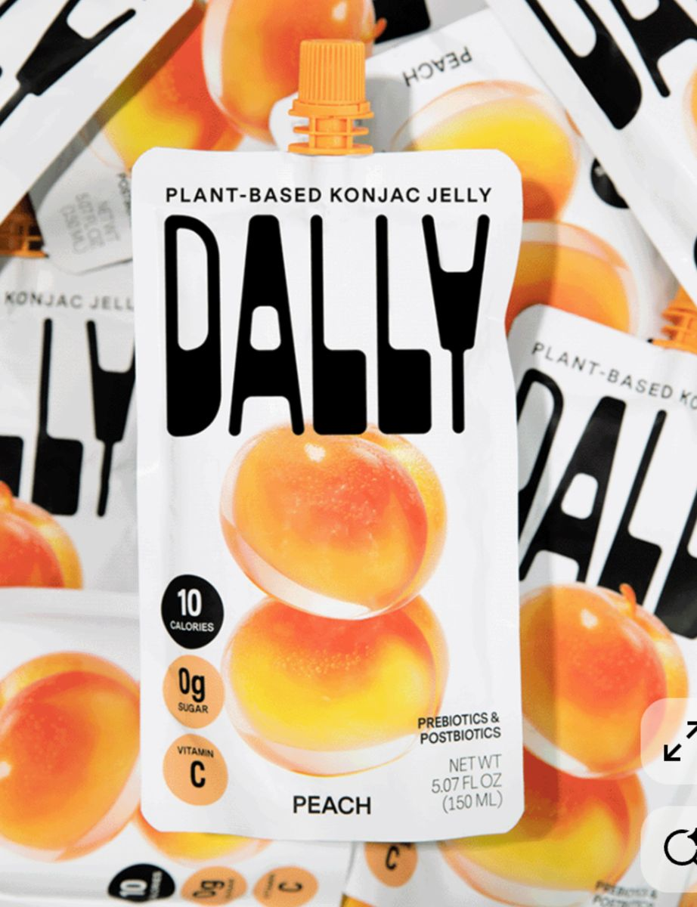
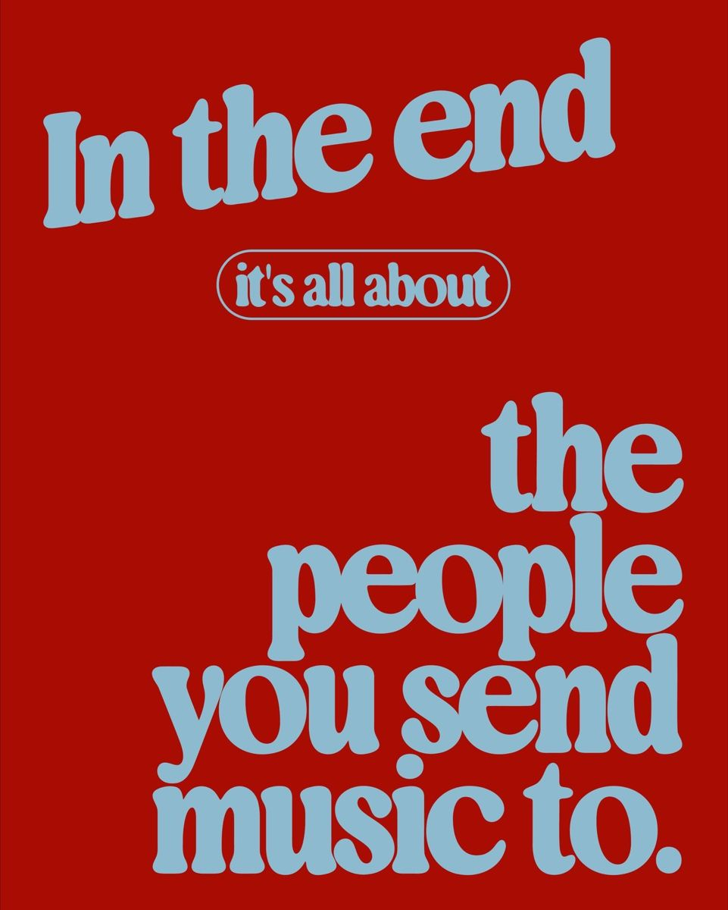
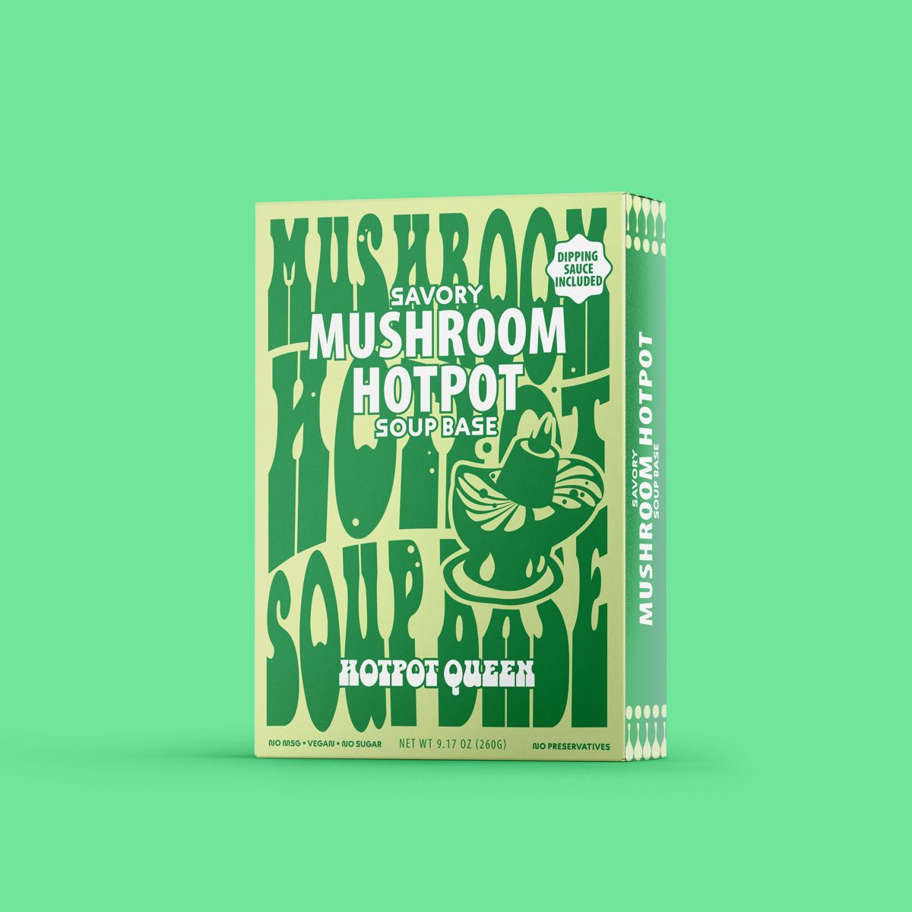

The weight carries the appetite. Strokes thicken toward the middle of the letter as if filled, counters shrink to slits, terminals round off. Yellowbird's mark (229) climbs and leans so the word seems to be getting up; Bezi's (083) is stretched to fit the lid of its tub until the letters are the container. When the letters sag, as in Dally's wordmark (063) beside its translucent peach spheres, the lettering is doing what the food does.
The lineage runs from Cooper Black (1922) through its second life on 1960s and 70s record sleeves and supermarket shelves, and the board's version keeps that warmth without the distress: flat color, clean edges, a single offset outline at most (141). Where the letters are geometric and rounded rather than serifed (006, 010, 024, 125), the reference shifts a decade later, to the bubble lettering of children's television and cereal.
The relationship to the pack is the point. These marks are set large enough to be cropped by the panel (046, 108, 116), so the pack becomes a window onto a bigger word. The food, when it appears, sits below or behind. The letter is the hero and the product is the evidence.
RelationsPairs with the label register (L03) at small scale. Opposes the reductive pack (L18). The heavy soft letter and the character (L09) are the board's two most common signs of warmth, and they rarely appear together.
Joined or brush-made lettering that carries a human hand: monoline, casual script, heavy upright script, swash.

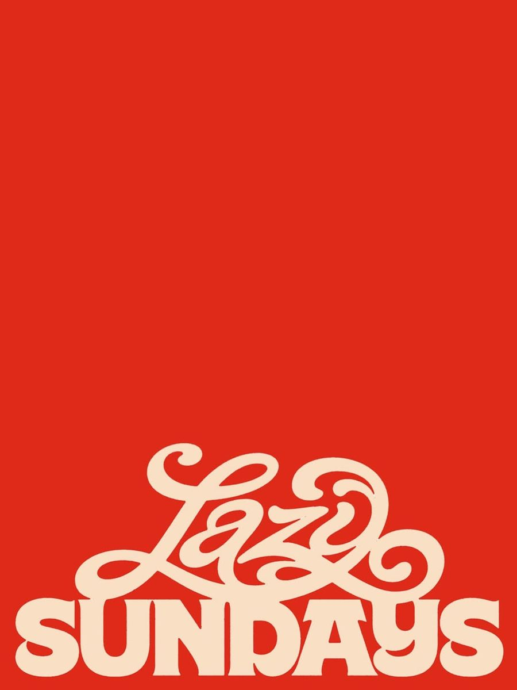


Script is the board's second voice. It almost never carries the whole message; it sits over or beside a plainer face and supplies the tone. Lazy Sundays (150) puts a looping "Lazy" over fat rounded caps. Risotto (243) sets the product name in script above a bowl. Nooish (226) uses "Instant Classic!" in script as the aside inside a layout of bands. The script is the parenthesis.
Three sources are visible. The sign-painter's monoline (016, 155, 119) is quick and even, a brush that never stops. The soda-fountain script (228, 194) is heavier, upright and joined, a quotation of 1950s American refreshment. The hand-lettered display script (053, 009) has swash and swelling, closer to 1970s phototype. Which one a brand chooses sets its decade.
Because script implies a person writing, it does the work of a signature. Stiller's runs it up the can like a wall sign; SuperRico (016) is nothing but the script on red, which is enough to be a brand.
RelationsUsually paired with L03 (condensed caps) as the quieter voice. Belongs to the same quotation habit as the grocery vernacular (L15).
Narrow capitals and small typographic furniture: the voice of the tin label, the notice and the specimen sheet.
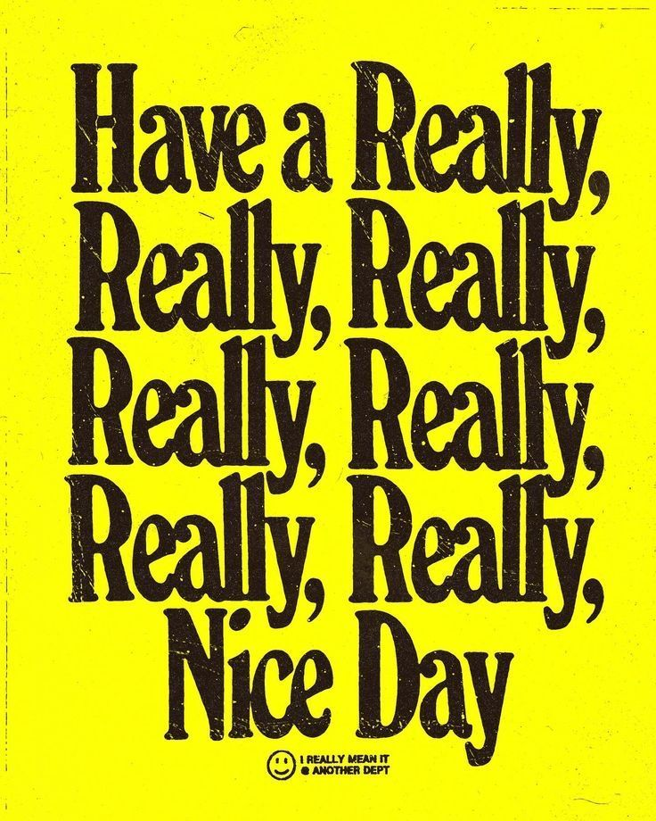


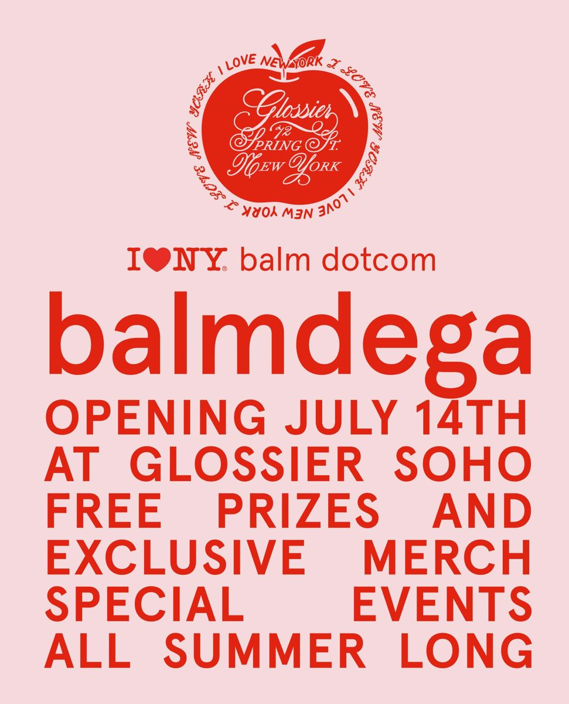

This is where facts live. Wood-type gothics and condensed grotesks carry flavor names (025, 034, 291), while small caps, typewriter and mono carry weight, count and origin (162, 305, 045). The register reads as honest because it is the type of things that are not designed: crate labels, price notices, specification sheets.
It has a poster mode too. The condensed serif stack (011, 139) sets a pep-talk sentence in a block, black on yellow, and the repetition of words becomes the rhythm of the image. Glossier's bodega notice (120) is the same idea in one ink on pink. The copy is plain; the setting makes it a picture.
Within a pack, this register is what makes the heavy soft display type (L01) legible as a brand. Juicy Marbles (291) sets "meat" enormous and the grams small; Heyday (301) sets the whole name in it and lets color do the rest. The difference between a loud pack and a quiet one on this board is mostly how much of the panel is given to this voice.
RelationsThe counterweight to L01 and L02 on nearly every pack. The grocery vernacular (L15) is this register's furniture.
A sentence set as the whole surface: the pep-talk poster, the talking pack, the billboard that says one thing.


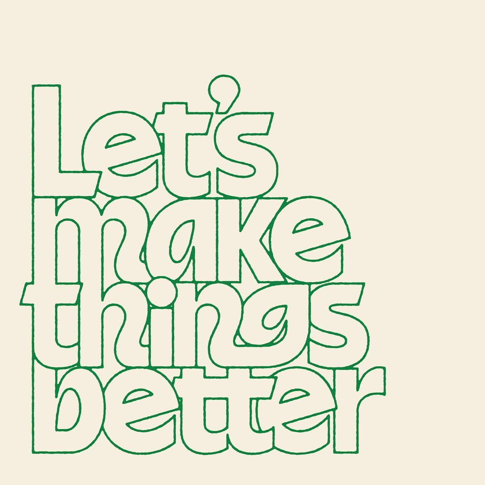


A group of pins has no image except what the words say. "Have a really, really nice day" (011), "Good things happen when you try" (139), "Let's make things better" (122): second-person encouragement, set large, in a face that softens it. The lineage is the 1970s head-shop poster and the greeting card, and the tone is kind rather than clever.
On packs the same idea turns into a voice. Lazy Food (256, 257) repeats CHEESY behind its pouch and names itself for the effort it saves; Oatly (167) covers its carton in talk; Matty's (232) quotes its own instructions as if a friend were speaking. The pack addresses the buyer directly and the design steps back to let it.
What makes these work is restraint elsewhere. One face, one or two colors, and a sentence short enough to read from across a room (225, 264). When the copy has to share the surface with a photograph (302, 253), the letters are cut out or laid on as objects, so that the sentence stays a thing rather than a caption.
RelationsShares its faces with L03 and L01. Where L04 meets photography (302, 253) it borrows the cut-paper method of L08.
Type set in, on or as the food: letters made of liquid, words fitted to a fruit, a title that frames the dish.
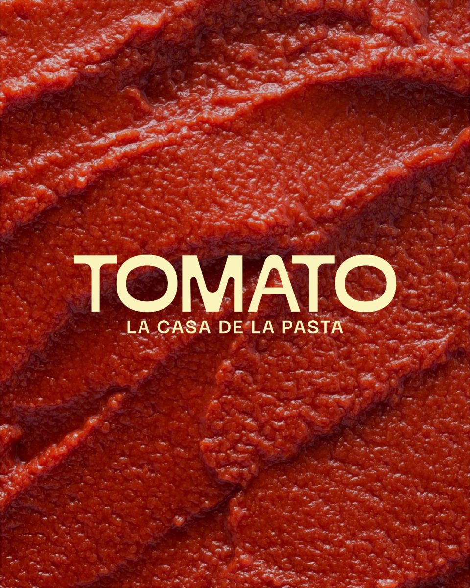

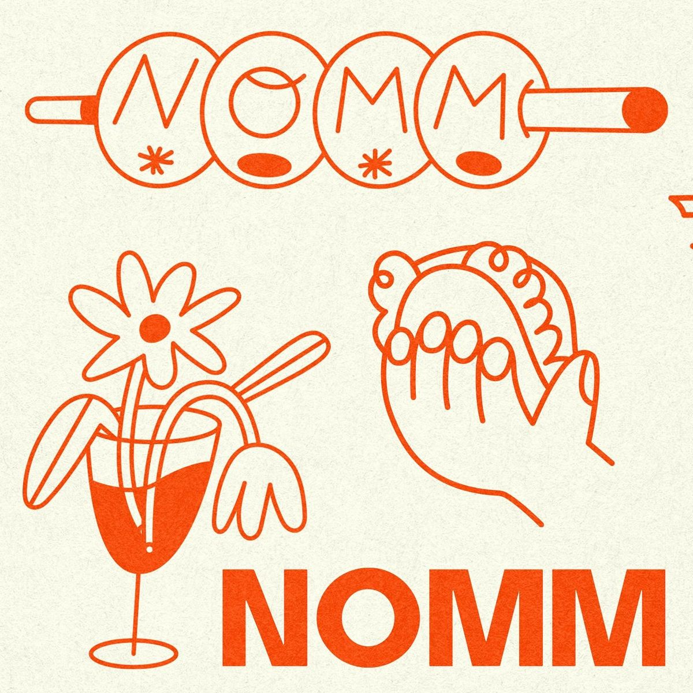


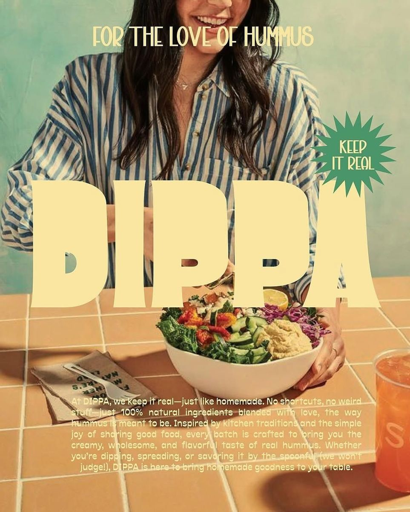
Here the two halves of a pack, word and picture, become one thing. TOMATO (094) is set in a thin wide serif directly on a macro of sauce, so the word is read through the texture. BUBBLES (114) is spelled in water. Algae Cooking Club (134) is written in oil on steel. The letters stop being a label and become a property of the food.
A second version fits the word to the food's silhouette. Happy Chuseok (009) is drawn inside a fruit; NOMM (152) puts its letters inside a rolling pin and bowls; the SOUP ladle (158) pours its own name. These are rebus devices from sign painting and the 1960s poster, and they read fast because the shape is recognized before the word.
The third version uses the word as a frame. Lazy Nights (280, 336) sets its name enormous down the side of a noodle photograph; Dippa (290) weaves giant cream letters behind a figure and in front of a bowl. The type is architecture and the food lives inside it. This is the most promising of the three for a product that has one action to show.
RelationsNeeds photography (L11) or illustration (L06) to exist. Opposes the reductive pack (L18), where type never touches the image.
The drawn image. Five languages that differ in line, fill, and what the drawing is for.
One line weight, one or two flat inks, halftone or stipple for tone. The drawing of the mid-century cookbook and the instruction leaflet.

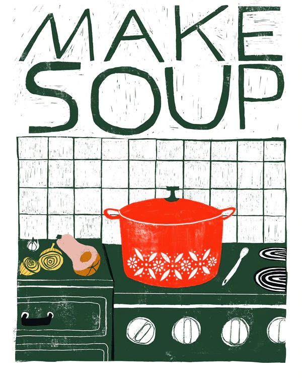
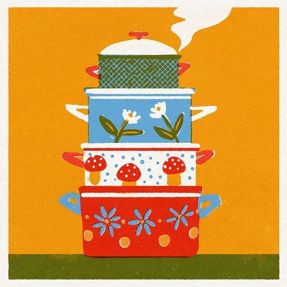
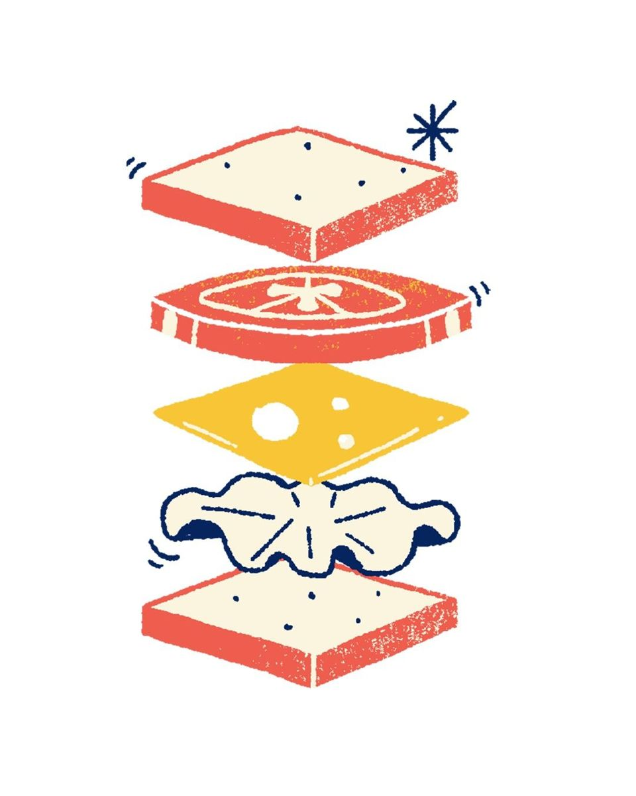
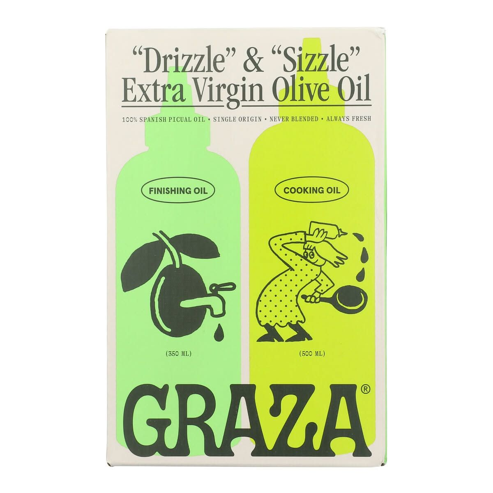
This is the printed kitchen. Numbered steps drawn in pink and green (076), a red pot on green tile cut in lino (137, 153), stacked enamel pots in a folk pattern (077), a sandwich exploded into floating layers (095). The line is even and unhurried, the fills are flat, and shading, where there is any, is a screen of dots. The reference is the two-color spot illustration of 1950s cookbooks and the process diagrams on the back of a box.
The pot is a token of this language rather than a subject. Drawn this way it signals the domestic kitchen of a particular era: enamel, flowers, steam as a curl. When the type is hand-carved to match (137), the whole image reads as one print. Graza's man and olive (132) do the same in the register of a 1940s newspaper ad.
What the language does to tone: it makes instruction friendly. The same steps set in photographs would be a manual; drawn in two inks they are an invitation. It also keeps the food generic (a tomato, a pot), which is why the brands on the board pair it with a photograph when the food itself needs to be seen.
RelationsThe natural partner of L03 for instructions. Its opposite in illustration is botanical realism (L07): same subjects, different claim.
Produce painted or drawn as a specimen: watercolor, gouache, engraving. The seed packet and the horticultural plate.


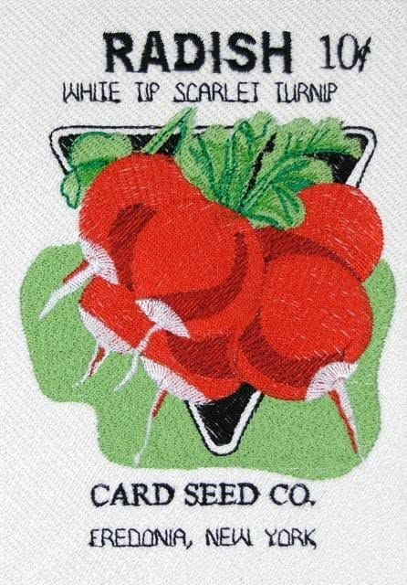
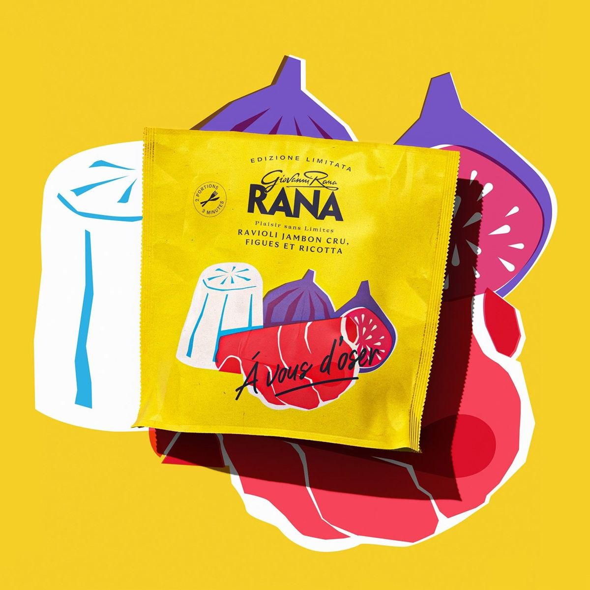
A tomato cut in half in watercolor (330), heirlooms in a loose gouache (098), a radish on a kraft packet (203) and the same radish embroidered (204). The drawing attends to the particular fruit, its skin and seeds, with the care of a catalog. The reference is the seed packet, the canning label with a painted beet (185) and the botanical plate.
The claim this makes is about the ingredient, not the brand: this is what goes in. It is the opposite of the spot drawing (L06), which keeps food generic. Fond's label (185) shows how it sits inside a pack: the painting at the center, bands and gold rules around it, the typographic furniture of the 1940s grocer.
The register is slow. It reads well on a single pack and in print, less well as a system, which is why it appears on the board mostly as single pins rather than as ranges.
RelationsOpposes L06 in its claim. Belongs with the grocery vernacular (L15) when it sits inside a label.
Flat shapes with no outline. Color does the modeling. After Matisse's cut-outs, through the mid-century poster.

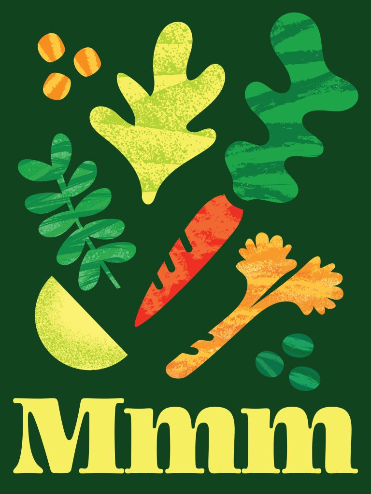
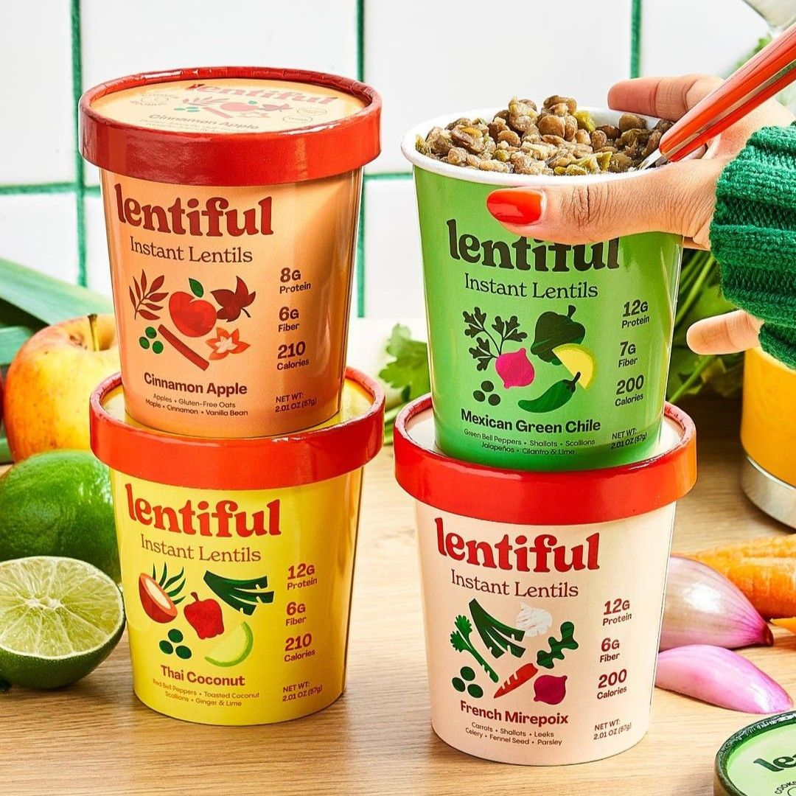

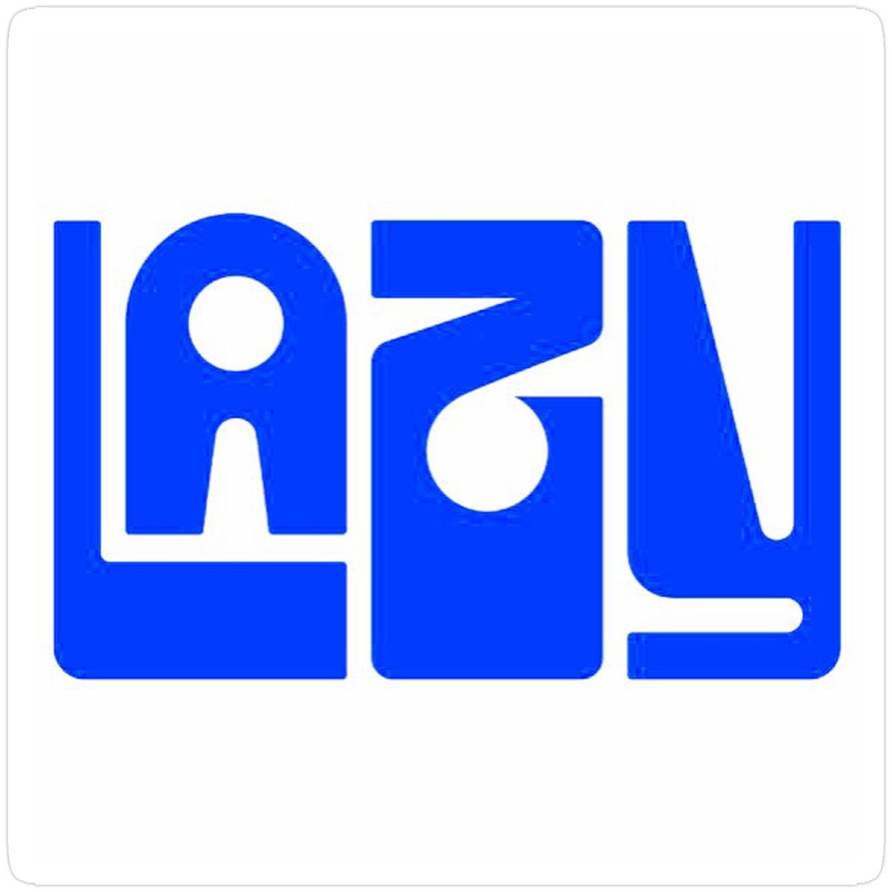
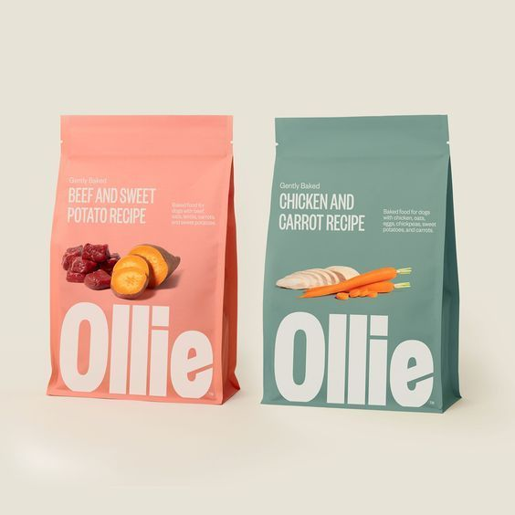
The cookbook cover Food & More Food (001) is the clearest case. Five hands in five flat colors reach for a chili, a tomato and a leek; the fingers get one soft spray of shadow and nothing else. Black marker squiggles run between the hands and off the cover onto the backdrop. The title is a stacked geometric display face with sliced counters, set as a solid block in the lower right. Three registers are at work: the cut shape, which is gestural and warm; the marker line, which is quick and personal; and the architectural type, which holds still while everything else moves. The image is convivial because the hands are many and reaching, and it is legible because the type refuses to join in.
Lentiful (218, 219) uses the same method as a system: vegetables cut from flat color, laid on a band of flavor color, repeated across a range. Mmm (250) sets cut leaves on dark green under a word. Oxente (002, 310) reduces produce to one-ink silhouettes and makes them a pattern. The cut shape is quick to read, cheap to print, and survives at any size, which is why it travels from poster to pouch without changing.
The language is cheerful by construction. Without outlines there is no drawing to be good or bad at; the color relationships do all the work, and strong, simple contrasts read as optimism.
RelationsShares a lineage with L06 but refuses the line. Where the figure gets a face it becomes L09.
A cast that performs the food: rubber-hose mascots at one end, naive one-line vegetables at the other.
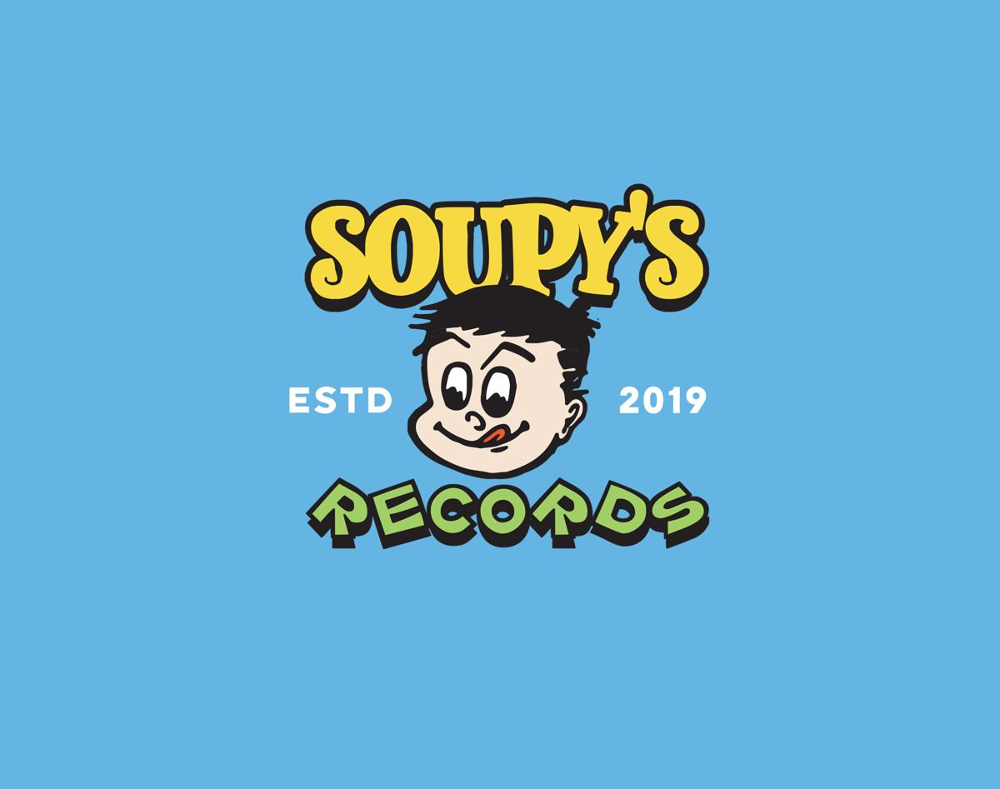


The board carries two character traditions and they make opposite claims. The rubber-hose mascot (007, 212, 319) is polished: round limbs, gloves, a grin, the 1930s cartoon that became the standard of American food advertising. It promises craft and a brand with a history. The naive vegetable (206, 208, 151) is one line, one color, barely a face; it promises sincerity and a brand that does not take itself seriously.
The interesting work is in the middle. Long Weekend (043, 165, 182) puts a photograph of the soup in a frame and lets cartoon vegetables walk around it, so the photo is a window in a cartoon world. Then it reverses the trick (251, 164): an onion character lounges in the real cup with real water poured on it. The drawing sits on the photograph like a sticker, never entering its space, and that refusal is the joke. Bowl'd (241) makes the cast a system, one vegetable per tile, one tile per flavor.
What a character does to a pack is set its audience. The more finished the drawing, the more it reads as for children or as nostalgia for having been one. The looser the line, the more it reads as an aside between adults.
RelationsOverlaps with macro photography (L11) in the hybrids (251, 164, 089). The character and heavy soft display type (L01) seldom share a panel.
Cut photographs, airbrush, chrome, halftone and off-register ink: images that are about a printed past.

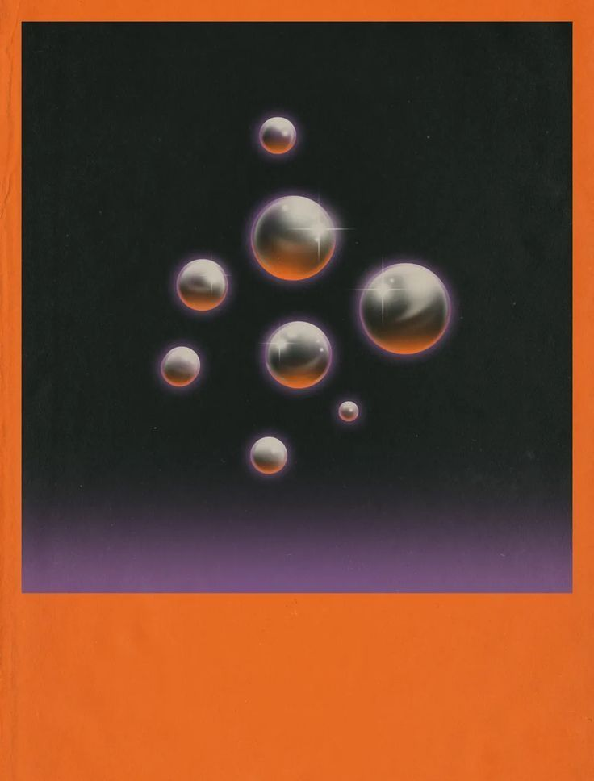


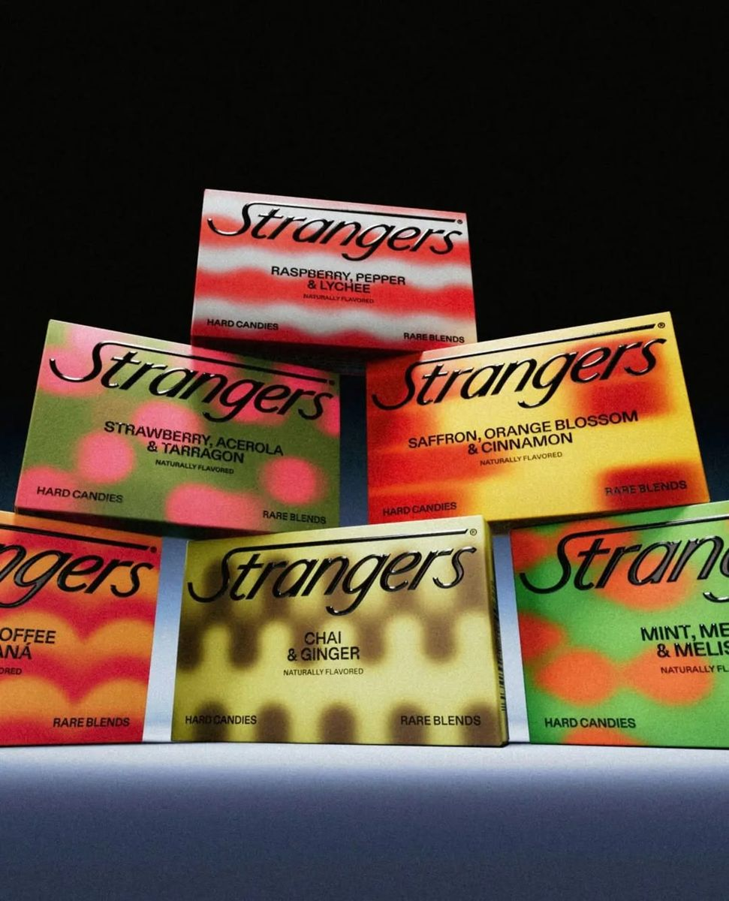
Pasta Dreams (091) is the fullest example. Photographic cut-outs of spaghetti, breadsticks, a tomato and a chili are arranged on a sky of clouds and orange swirls; a fork lifts a nest of pasta over a checkerboard floor; bubbles drift. The lettering is a 1970s bubble script. The sensibility is specific: the cut-out animation of Terry Gilliam, the Italian-kitsch advertising of the 1970s, food made monumental and placed on a stage. It is camp with appetite, and the collage is what makes the appetite theatrical rather than documentary.
Around it sit the other retro prints. Chrome bubbles on a dark field (113) and the Dior card (014) are 1980s airbrush. Oh What Fun (138) is a 1960s greeting card with drop shadows and sparkles. Brilliant (021) is Pop's detergent box in four colorways. Vybes (081) marbles fruit like endpaper. Strangers (105) blurs its color into soft blobs. These share a wish to look printed, or filmed, in a decade other than this one.
The register is the most purely nostalgic on the board, and the most dangerous for a new product: it tells you what era the brand admires before it tells you what the product is. On the board it belongs to posters, title cards and limited editions, almost never to a shelf pack.
RelationsThe most self-aware of the languages. Its textures (riso, halftone, misregister) appear quietly inside L01 and L06 without the nostalgia.
The made image. Four languages that differ in distance, light and what is allowed into the frame.
Food photographed close enough to become a surface. Then, in a few pins, a drawn line laid on that surface.


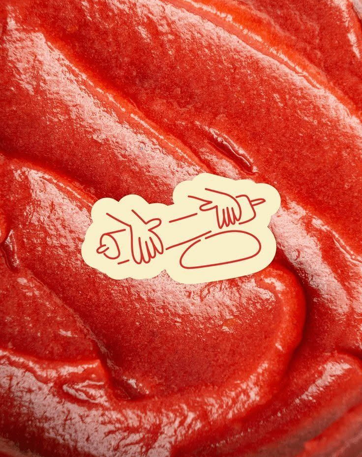
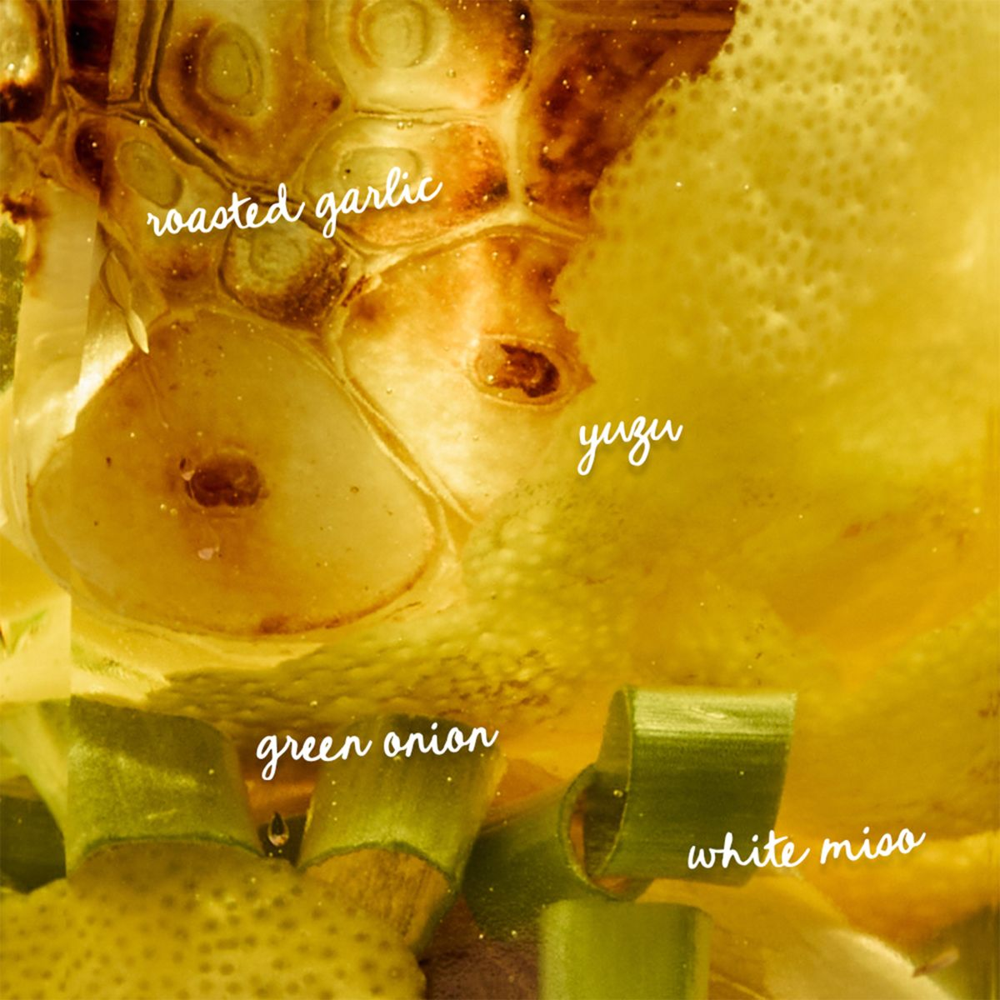


At this distance the food stops being a dish and becomes a material: noodles filling the frame (096), stew with beads of oil (097), cherries in ice (101), a bitten pastry with sprinkles (196). The language of appetite in contemporary food photography is texture at macro, and the board collects it without packs attached. Nine broth cups from above (184) take the same interest and turn it into a typology: foam, oil, a lemon wheel, each cup a different surface.
The hybrids are where this becomes useful. TOMATO (094) sets thin type on a sauce macro. The tomato purée with a tiny drawn hand (089) does something stranger: the texture supplies seriousness and hunger, the line drawing supplies scale play and a shrug. The drawing sits on top like a sticker and refuses to be in the photograph's space, so the image is affectionate rather than gourmet. Broth with handwritten ingredient labels (133) and mac and cheese with round stickers (294) do the same with words. The combination lets a brand be appetizing and light at once, which neither register manages alone.
The cost is clarity about the product. Macro texture is generic by nature; without a pack or a line, a noodle macro belongs to anyone.
RelationsThe hybrids join this language to L09 (characters) and L05 (the word in the food). The color-field set (L12) is its opposite in distance.
The pack on a stage of one color, hard light, one shadow. From a single hero to a family tiled across the frame.


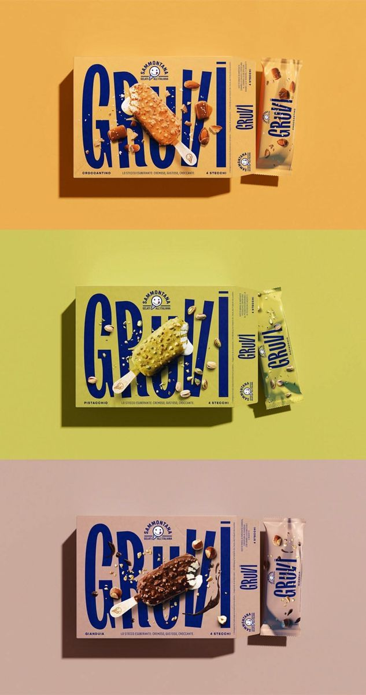
This is the studio language of the 2010s and 20s: a pack set on seamless paper in one color, lit hard from one side so it throws a single shadow, the room matched to the pack (047, 224: red cups, red tomatoes, red wall). Sometimes the room is a floor of tile (092, 300, 314) or a gradient (064, 260). The product becomes a sculpture and the color becomes the mood.
Within this language the main variable is number. Nufs alone on sky blue (064) is a monument. Ollie's pair (033, 107) is a conversation. Nooish's cups laid in rows on a slant (254) and Pick Up's wall of boxes (022) are a pattern, the supermarket shelf-blocking rebuilt as a picture. The nine broth cups (184) take the idea to a typology, where the arrangement matters more than any single object.
The language favors brands with a color-per-flavor system, because the set can change with the pack. It is also where most of the board's monochrome pins live: one hue over pack, prop and ground reads as control, and control reads as a brand.
RelationsHosts most of the color-per-flavor systems. Opposes the kitchen table (L13), where the set is a real room.
The pack among its raw ingredients, in a real or convincing room: the plinth of garlic, the tomato on the can, the lunch table.
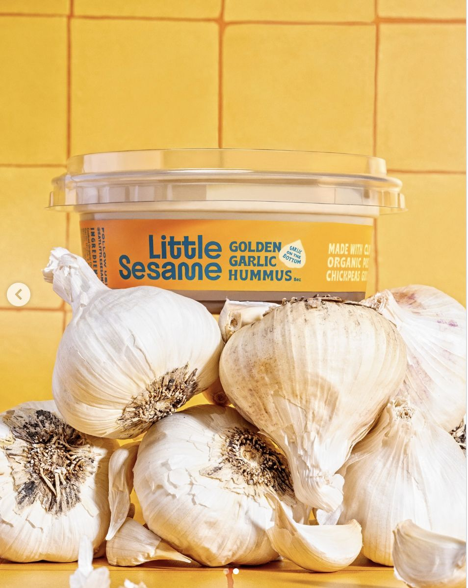
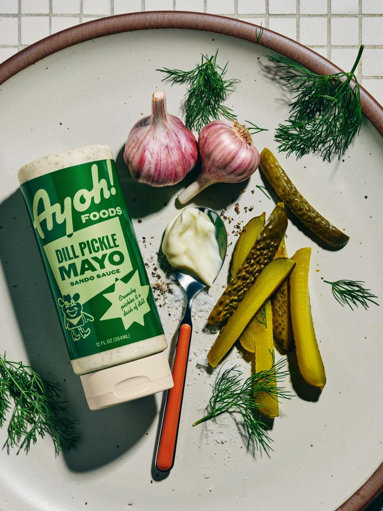

Where the color-field set controls everything, this language lets the room in. A hummus tub on a heap of garlic against yellow tile (247). A tomato balanced on a pair of bone-broth cans (186). A mayonnaise bottle on a plate with pickles and dill (263). Lentil cups on a table with the beans and peppers that went into them (221). The ingredient is placed beside the pack as evidence, and the light is warmer and softer than in the studio.
The composition is the still life: a few objects, a surface, a cloth. It reads as editorial rather than retail, and brands use it for the feed and the billboard rather than the shelf. The ramen bowl on red tile with a sachet beside it (166) and the lunch on a striped tablecloth (258) show how far the pack can recede before the picture stops being about it.
The claim is simple and strong: this is food, here is what is in it. For a product whose contents are the point, this is the language that proves them.
RelationsOpposes L12 in control. Shares the ingredient-as-evidence claim with botanical realism (L07).
A hand, a pour, a drop, a dissolve. The product shown doing the thing it does.

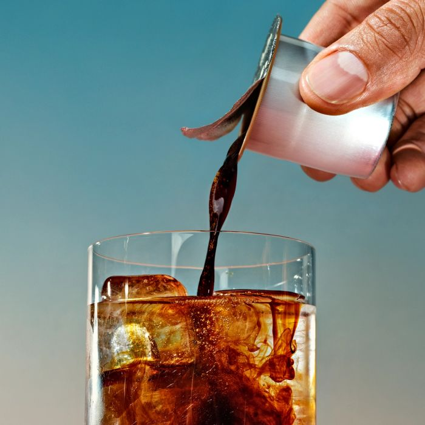

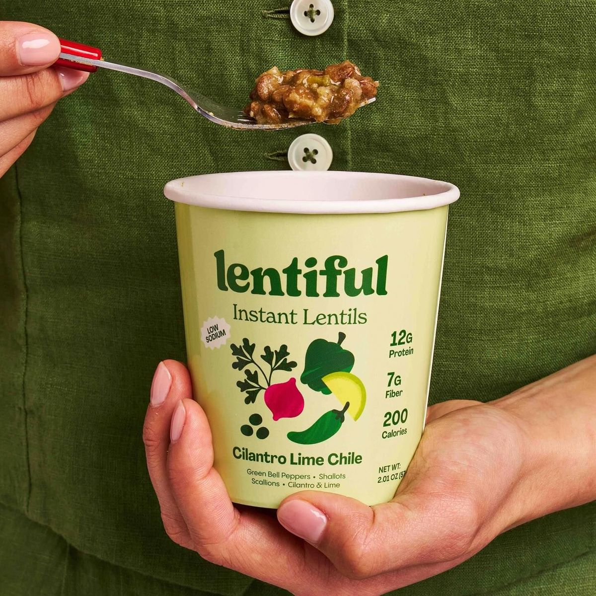

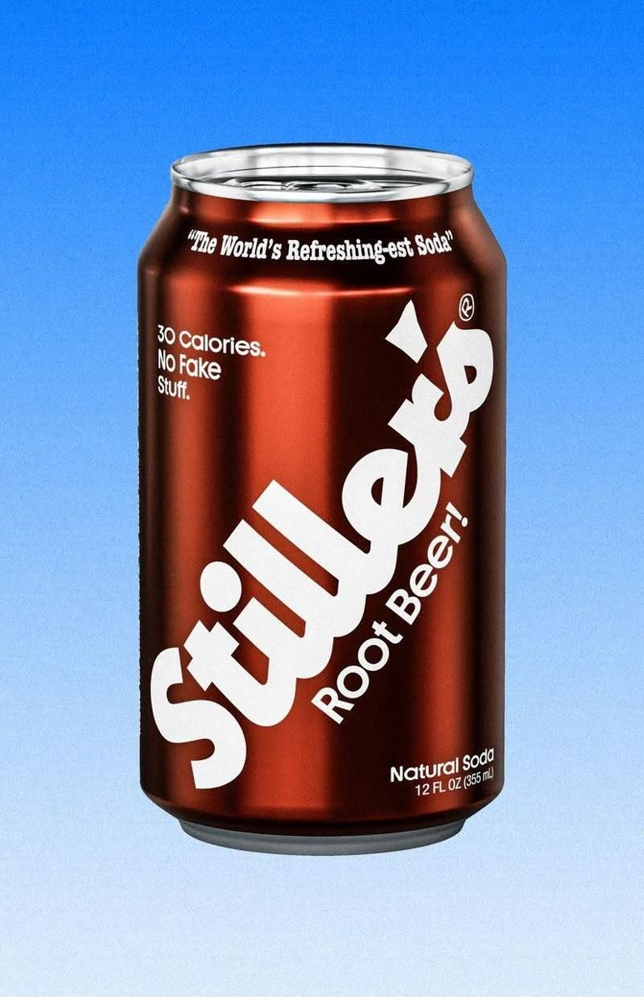
Cometeer (315, 316) is the clearest brand built on this language. A dark puck sinks in a glass mug in hard light; a hand tips a capsule over a mug. The photograph explains a product no one has seen before, and the brand is the explanation. The puck held between finger and thumb (313) and a bean in tweezers (271) extend it: single objects shown as if in a lab, lit like jewelry.
The rest of the board uses the hand more casually. A hand holds the pouch on an open palm (108, 297, 170); a spoon lifts from a cup (220, 249); a woman squeezes mayo at the open fridge (259); a child pours olive oil (326). These are not demonstrations so much as proofs of use: someone is eating this, now.
The pour and the drop are the board's images of transformation, and there are few of them: a rope of soda into a glass (268), water falling onto a cartoon onion (251), and the two dissolves. For a product whose point is that it goes into the pot, this is the thinnest language on the board and the most important.
RelationsNeeds the macro (L11) or the set (L12) as its ground. The hybrids (251) are a demonstration with a cartoon in it.
Devices, materials and structure. Four languages carried by the object itself.
The supermarket's own furniture, quoted: bursts, ovals, seals, price stickers, bands and gold rules.


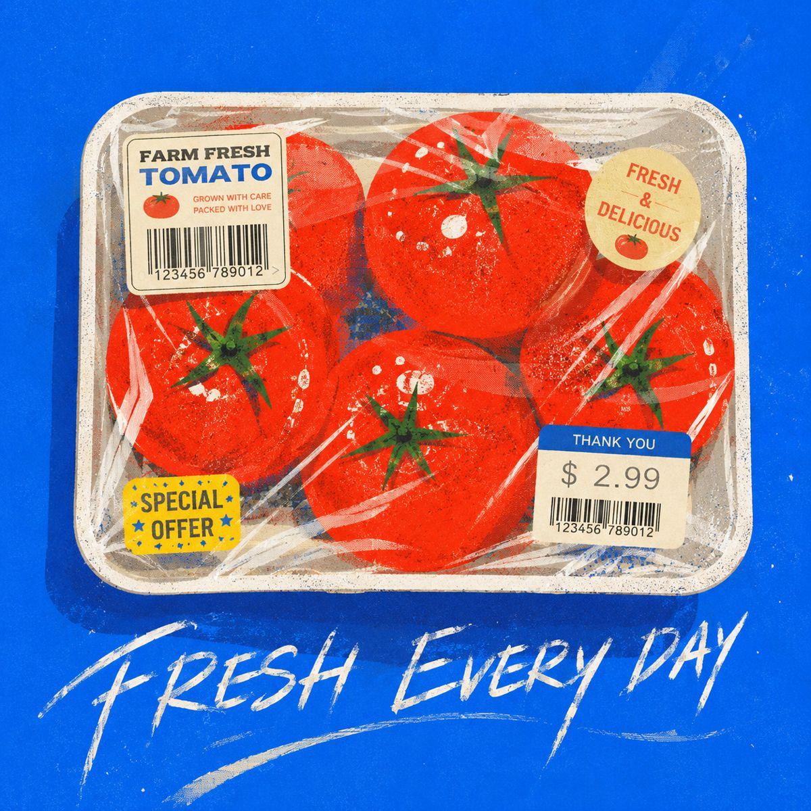
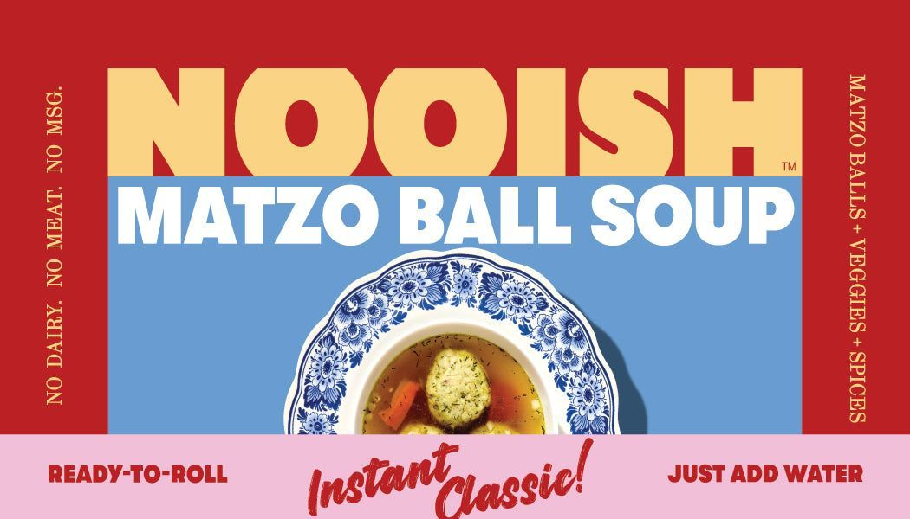

A third of the board carries something that looks stuck on afterward. A "Yes!" sticker on an apple (169), three Hato ovals in three colorways (211), a navy burst on a can, a painted tray of tomatoes with its price labels (193). These are not decoration; they are the grammar of the grocery store, and using it is a way of claiming a place on the shelf before the pack is on one.
Two generations are visible. The older one is the label: Heyday's cans (222, 223) and Fond (185) rebuild the 1940s canning label with bands, seals and a painted ingredient; Nooish (226) does it with a bowl window and "Instant Classic!"; Ramen is Love (341) is a 1950s Japanese-American wrapper. The newer one is the sticker: a claim in a pill, a burst or a cloud, tilted, as if applied by a person (231, 293). The first says we have always been here; the second says we just arrived and we are friendly.
The vernacular is where the voice of the tin label (L03) gets its shapes. It is also the easiest language on the board to overdo: once a pack has four bursts it is a coupon.
RelationsSupplies the shapes for L03's register. Shares the quotation habit with script (L02) and the retro print (L10).
Seeing the food through the pack: die-cut windows, clear bags, frosted film, jelly, a sheet held to the light.
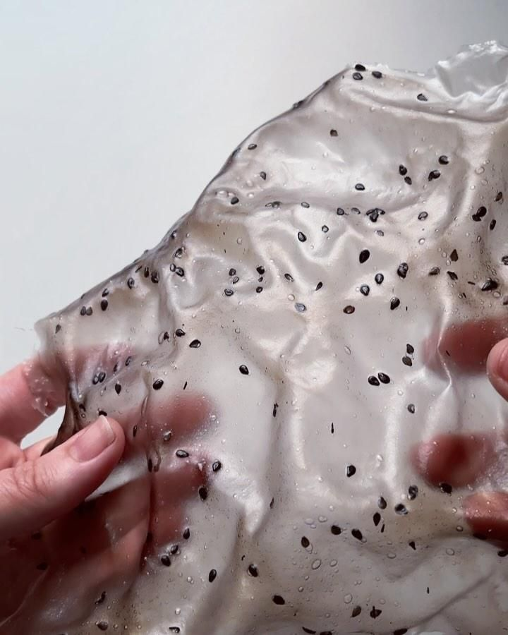

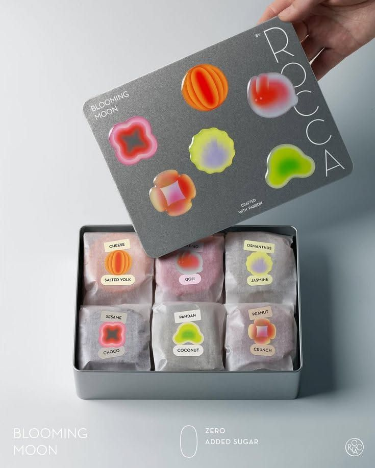

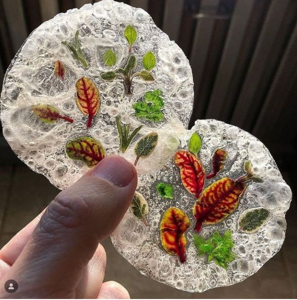
The board wants to see inside. Dally's pouch (063) is white with the peach jelly spheres showing through. Lumi's wrapper (100) cuts a window around the candy. Onigiri (174) is wrapped in printed film with the rice visible. Rocca (324) sets translucent jelly shapes into a gray box like gems. A sachet of blooming tea shows the flower through a round window (178).
Then there are the material pins, which have no brand at all: a clear, seed-flecked sheet in two hands (331), leaves sealed in an edible film (332), tinted translucent sheets cut by hand (177). These are the closest things on the board to the product itself, and they are photographed as objects of wonder rather than as packaging.
Translucency is a claim of trust by sight, and it is also an aesthetic: the sugared jelly cubes (197, 198) and the frosted pouches (109) glow because light passes through them. A language that works best when the food is beautiful and worst when it is not.
RelationsThe only language on the board that touches the product's own material. Opposes the printed carton of L17.
Structure that means something: a carton drawn as an oven, a box that folds into a tray, a lid printed on the inside.


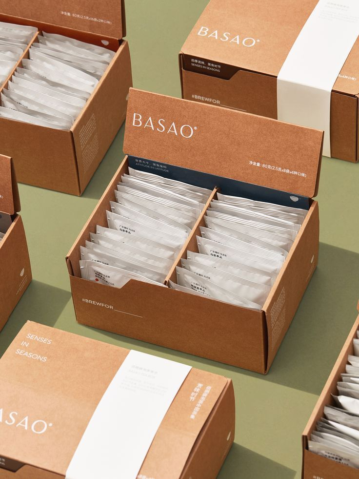

A box printed as an oven with cartons stacked inside it (115). A line of microwave boxes with the timer at 1:30 (190). A seed box that folds into its own husk tray (322). A T-shirt sold in a cereal box with a word search on the back (118). These packs are jokes about packs, and the lineage is Pop: Warhol's Brillo boxes made the supermarket carton a sculpture, and these make the carton a prop.
A quieter version prints the inside. Graza's mailers (325, 327) carry a drawing and a line on the inner lid. Basao's tea sachets are filed in a kraft box like index cards (333). Blooming tea (178, 180) sells a box with a window and a glass teapot beside it. The structure does the storytelling and the outer graphics can stay plain.
Pick Up's back panel (283), "collect all six flavors" with a how-to-enjoy strip, is the cereal box's own grammar reused on a biscuit. The pack as a thing to read, keep or play with is a different promise from the pack as a sign, and it is the one that survives the unboxing.
RelationsPairs with the reductive pack (L18) when the structure carries the idea. Opposes translucency (L16): the carton tells, the window shows.
Minimal surface, small type, plain material. The pack that lets the object or the material speak.
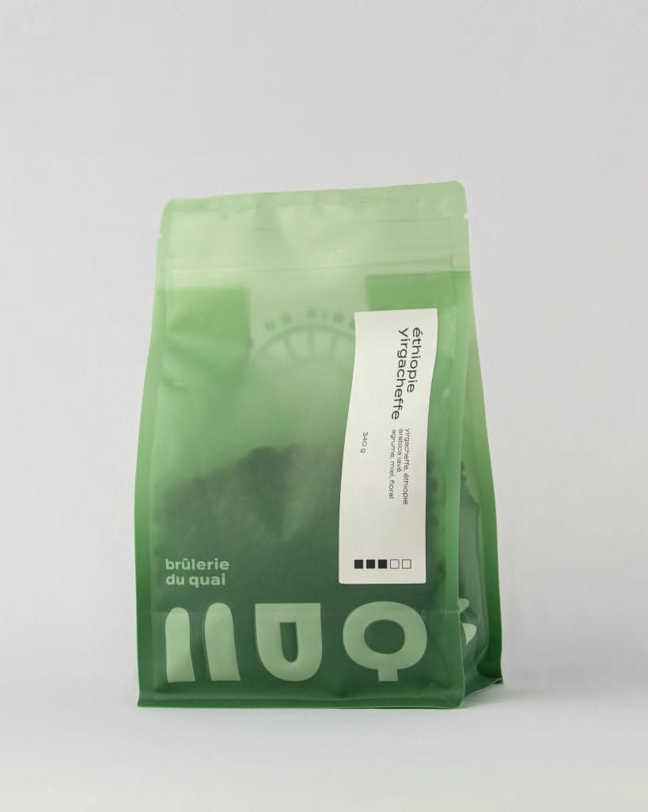


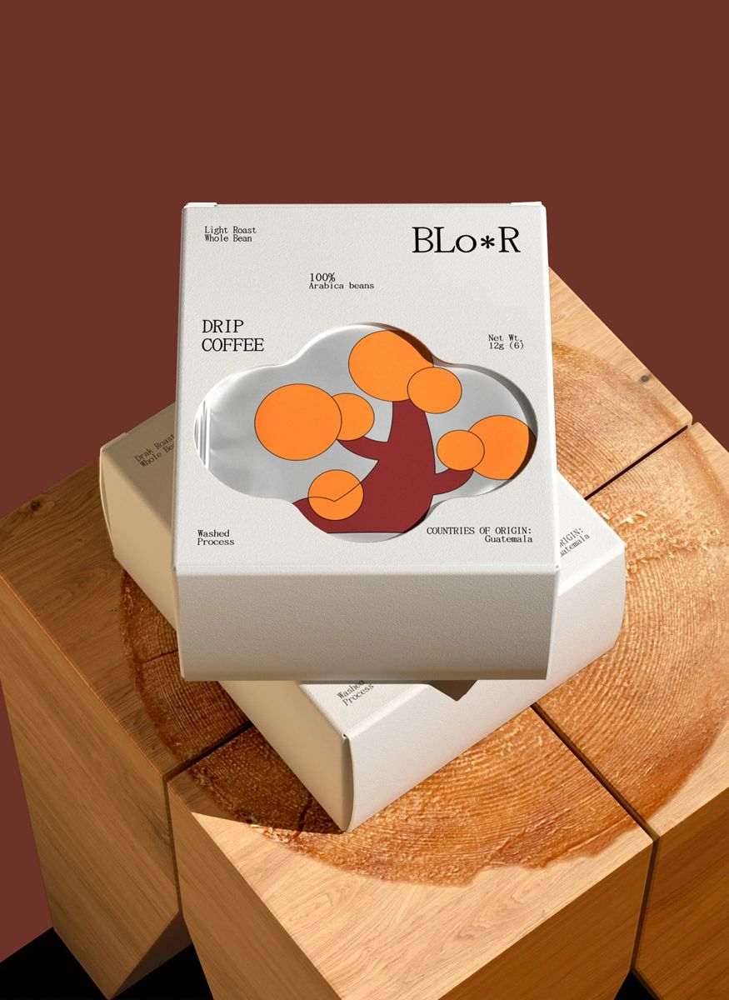
A green coffee pouch with a tiny white label (109). White pet-food sachets with a line drawing and nothing else (285). An apricot and a pear on gray with three spaced words, FOOD AS ART (093, 117). A can of tomatoes held in a hand, unbranded (191). These pins are the board's quiet, and they are quiet by subtraction: no burst, no character, no color field.
Two sources: the specialty-coffee pouch, which inherited its reticence from Japanese stationery, and the still-life photograph of the museum catalog. Both ask the viewer to look at the thing rather than the sign. Rose's boxes (303, 235) belong here too: a pattern taken from the food, an emboss, and type small enough to be missed.
The language is a position. On a shelf of heavy display type and bursts, the plain pack reads as expensive, and the material (kraft, frosted film, uncoated board) has to be good enough to carry that reading.
RelationsOpposes L01, L09 and L15 by refusing them. Shares its material interest with translucency (L16).
Photography at close range promises taste; the two-color drawing promises charm. The board wants both, and most packs choose one per panel: a photograph on the front, a drawing on the back. The hybrids (089, 251, 133) put them in one image, and they only work because the drawing refuses to enter the photograph's space. It stays a sticker, a scale joke, a note. The moment the line tries to model the food, the two registers fight.
What is interesting is what each loses. The macro loses the product (noodles belong to no one); the drawing loses the hunger (a pot is a pot). A pack that needs both has to decide which one is the ground and which one is the remark.

Nostalgia on the board arrives two ways: as a straight quotation of an old grammar (Heyday, Fond, Stiller's) and as a joke told inside that grammar (Sorry Nonna, Nooish's "Instant Classic!"). Both depend on the viewer knowing the original. The third way drops the quotation altogether and lets the copy carry the newness: Lazy Food names itself for the effort it saves and lets the pack talk.
Comfort and novelty are not in conflict here; they are in sequence. The quoted label supplies the comfort, the copy supplies the novelty, and the pack decides how far apart they sit. Sorry Nonna puts them one inch apart (the flavor name is the only new thing on the label). Lazy Food puts the whole pack on the novelty side and borrows comfort from the drawn pot alone.

The heavy soft letter asks to be enjoyed; the condensed cap asks to be read. Nearly every pack on the board carries both, and the tension is one of proportion. Give the display type the panel and the pack is a toy; give the label type the panel and the pack is a specification. Juicy Marbles solves it by scale alone: one word enormous, the facts tiny, both in the same heavy grotesk. Heyday solves it by giving up the soft letter and letting color supply the pleasure.
The question underneath is who the pack thinks is looking: someone to be charmed or someone to be informed. The best packs on the board answer differently at two distances, charming across the aisle and informing in the hand.

Trust by sight or trust by voice. The translucent pouch and the die-cut window let the food prove itself; the printed carton has to describe it, and in exchange gets a surface to speak from. On this board the window pins are the beautiful ones (jelly, candy, rice in film) and the carton pins are the systematic ones (ranges, color per flavor, instruction rings).
The tension matters for a product whose wrapper is itself food and whose outer pack is a box. The board shows both halves separately and almost never together: a box with a window onto a translucent pouch exists on the board only as Nooma's pouch (045) and Brami's (274), and in neither is the thing seen through the window the interesting part.
A single pack on a field is a sculpture; a range tiled across the frame is a system. The board collects both, and brands tend to use one for the shelf and the other for the feed. The sculpture asks the pack to be beautiful alone, which favors heavy display type and the hard-lit set. The pattern asks the pack to be a unit, which favors color per flavor and a fixed frame.
The nine broth cups (184) are the extreme case: no pack at all, nine surfaces, and the arrangement is the whole image. It suggests a third option between hero and family, where the product's variety is the picture and the pack is implied.
Both are characters; they make opposite claims. The finished mascot says a studio made this and the brand has a history. The naive line says a person drew this and the brand is in on the joke. Neither is more sincere than the other; they are sincere about different things, craft and candor.
The pairing is interesting because the board's most-liked brand pins (Culture Cup, Long Weekend) sit at opposite ends, and both are soup-and-dessert categories where the character does the same job: it performs the food so that the photograph can stay simple.

The color-field set is the brand's room: everything in it was chosen to match the pack. The kitchen table is the buyer's room: the pack is one object among food and cloth. The first reads as control and therefore as brand; the second reads as life and therefore as trust.
The middle ground is the most used and the least examined: a real plate and real pickles on tile chosen to agree with the bottle (263). It is a set that pretends to be a table. Whether that pretense reads as warmth or as staging depends on how much of the room the pack is allowed to match.
DTC flash-frozen coffee: a brewed puck in an aluminum capsule that melts into hot water, ice or milk.
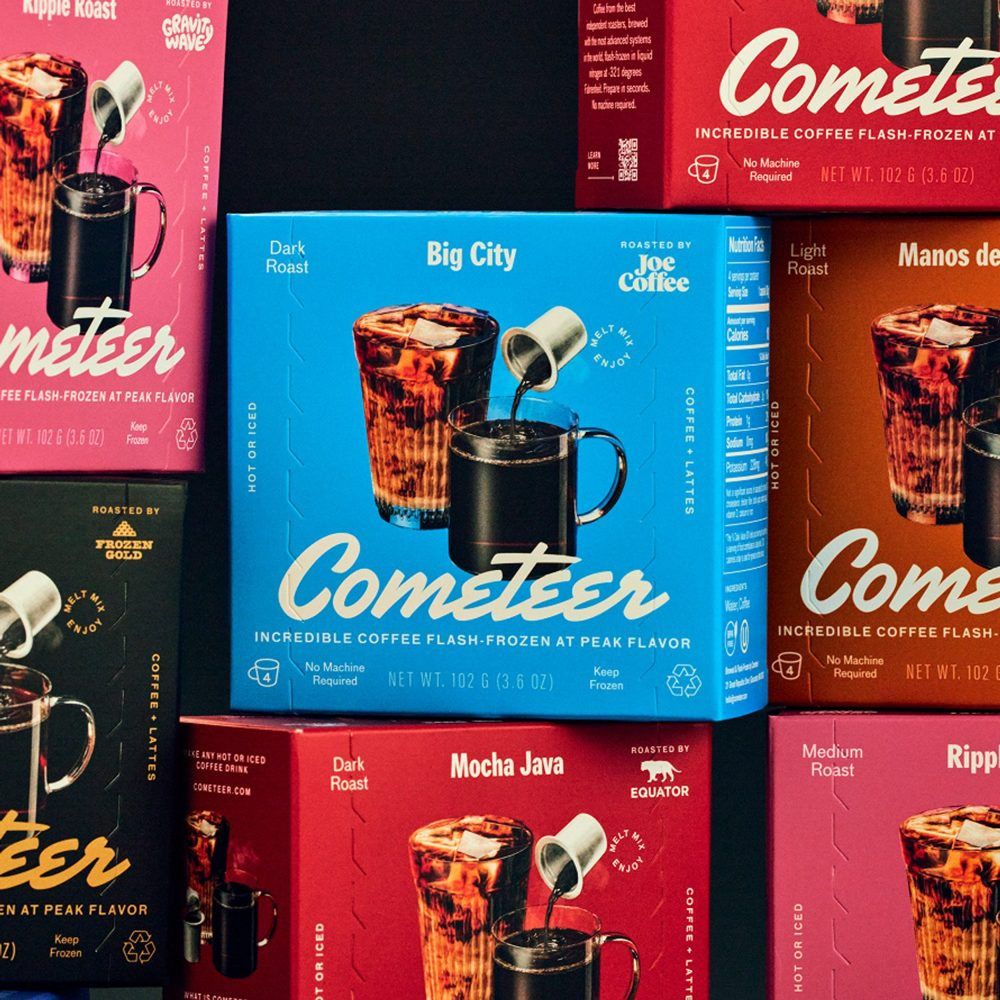
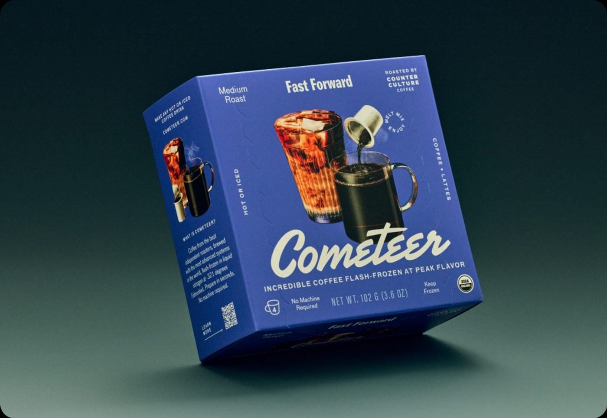


The product is something no one has seen, and the identity's job is to make the unfamiliar feel like an old favorite. The script wordmark does most of that: cream, connected, with a swash underline, it reads like a 1960s airline or a motel sign, which is the retro-future the studio named as its intent. Everything else on the box is the register of appliance packaging: small condensed caps, three icons, a ring of instruction ("melt, mix, enjoy") around the capsule.
Color is a sorting system and the only variable. One saturated hue per coffee, blue to red to pink to rust, with the photograph and the wordmark fixed, so a wall of boxes reads as a range of coffees rather than a range of designs. Each box also carries its roaster's own logo, which makes the system a frame around other brands.
The photograph is the argument. The capsule pours into an iced glass and a hot mug at once on the front; off the pack, the puck sinks in a glass mug in hard light, a hand tips a capsule, a bean sits in tweezers. These are demonstrations shot like jewelry, and together with the language ("Coffee from the near future") they make the brand the explanation of the product. The script keeps that explanation human.
Flower-rosin cannabis edibles: sugared fruit cubes (Delights), chocolate, capsules and topicals, made with chefs and California farms.


Rose is built like a restaurant, not a dispensary. The vocabulary is seasonal fruit, named chefs, farms, and the design follows: the box is a blank field in one color per effect (cream, orange, yellow, pink), with a small uneven "delights" mark and two lines of tiny caps. It behaves like a pastry box. The premium is carried by finish, emboss and spot gloss, and by fronts made from the food itself: raised white circles for boba, glossy seeds on matte red for watermelon. The pattern says ingredient before it says brand.
Photography stacks the cubes on the object that names the flavor or the effect, an apple, a melon, a clock, a cloud, in shallow focus against one color. The CGI renders of capsules and rosin extend the same idea toward science without leaving the pastry register. On screen the type is a grotesk and a Century, and the pages teach process rather than sell.
Together: minimal graphic surface, maximal material finish, food-first imagery. The brand's restraint is what makes a product most states regulate read as a thing from a good kitchen.
Low-sugar soda in classic flavors: Lemon Lime, Root Beer, Shirley Temple, Shirley Cola.


The design is a pastiche with perfect fidelity. The joined script runs up the can like a wall sign; the can is metallic in one flavor color; the claims sit in navy bursts with white slab type ("Only 30 Calories!", "No Biotics!"); a boast in bold italic serif crosses the top. This is the grammar of mid-century soft-drink advertising, reproduced without irony on the can, so that the irony can live elsewhere.
Elsewhere is the copy and the film. "It's a soda for your mouth." "Made by 100% real human celebrity people." The celebrity founder is the punchline of his own brand, and the launch film parodies old soda ads. The imagery stays cold and literal: condensation beads, cans on a block of ice, a rope of root beer into a glass, each on a gradient of its own color.
Together: the straighter the can, the funnier the voice. A design that quoted loosely would have had to carry the joke itself; this one carries only the quotation, and the quotation is immaculate.
Australian jarred pasta sauce with rewritten classics: Spicy Gochujang, Zesty Limoncello, Creamy Vodka, Miso & Garlic.


The label borrows the Italian tinned-tomato canon: bands, gold rules, wide display caps, primary colors, a brand line that wraps the jar ("We stole the recipe and made it better"). Everything on it is the tradition except one line, the flavor, and that line is the whole joke. Gochujang in an arrabbiata, limoncello in a marinara. The design never smiles, which is why the name can.
The system is one layout with a colorway per flavor and gold as the constant. Claims are red line icons on yellow discs inside a dashed ring, an angry nonna among them. The jar is photographed straight on against a gradient of its own label color, or in front of its own name set very large, or on gingham among older women cast as the nonnas. The site keeps the voice up ("Nonna would be appalled" in an empty cart).
Together: a brand in which the design is the authority and the copy is the rebellion, in equal measure, on every surface.
Single-serve probiotic ice cream under a crackable dark-chocolate shell, from Alec's Ice Cream (A2 dairy, regenerative farms).


The product has one action and the front shows it: the cup with its shell broken and a spoon going in. The sub-brand name, Culture Cup, is set larger than the parent in a brown soft serif with ball terminals, with "probiotic ice cream" arched over it, a cereal-box hierarchy. The parent's 2022 system is carried over underneath: the lowercase wordmark, a line-drawn cow and earth, a pastel per flavor.
Brown holds everything. It is the lettering, the shell and the constant across six pastels, so the range reads as one product in six flavors rather than six products. Characters drawn in each flavor's darker tone (cow, globe, sun) do the regenerative story without a paragraph; the numbers (140 calories, 10 g sugar) sit in corner tiles because the product is a portion and the portion is the promise.
Together: a health claim dressed as dessert. The shell is both the hero image and the reason brown can be the system's constant.
Gelatin dessert mix in a box: grass-fed gelatin, fruit juice powders, collagen. Strawberry, Sour Berry, Mango.


The box front is a photograph of the molded jelly in its flavor color with the off-white rounded wordmark laid across it on a pale ground. The wordmark and the jelly share a silhouette, the mold, so the mark and the product become the same shape; the second logo lockup makes that literal by putting the word inside a red jelly-mold form. The retro references are carried by the type system rather than by texture: a narrow bouncy serif ("Friend") for titles, a soft rounded sans for subheads, a monoline script for asides, claims set in cut shapes that are themselves jelly molds.
Color is a named set of six, one per flavor plus accents, and the flavor color fills the field behind each box. The pack carries play on every panel, a maze on the side under "While you wait," four numbered steps on the back, a puffy sticker sheet and a jigsaw as extras, which is the positioning ("Play with your food") made into things.
Photography keeps to two scenes: jellies among toys in a flat lay, and one jelly on a cake stand with a cherry, both in soft even light. Together: a brand whose mark, product and claim shapes are all the same object, which is what lets it be bright without being loud.
The product is a portion of food in a wrapper that is also food, dropped into a pot, sold in a box. Read against the board, three of the eighteen languages hold the most for it, and one is nearly absent.
Demonstration (L14) is the thinnest language on the board and the most important here. Cometeer shows what one brand can do when the photograph of the product's action is the identity. The drop into the pot and the dissolve have no equivalent on the board beyond those two coffee pins, which means the image is available.
Translucency (L16) is the only language that touches the product's material, and the material pins (331, 332, 177) are the closest the board comes to the wrapper itself. The tension with the carton (T4) is the product's own: a box that has to tell, around a pouch that can show.
The word in the food (L05) suits a product with one action to name. Lazy Nights and Dippa frame the dish with the name; TOMATO sets it on the sauce. For a name that is a verb, the type can be the frame and the pot can be inside it.
Heavy soft display type (L01), the character (L09) and the grocery vernacular (L15) are the board's crowd. They are where most of the pins are, and where most of the brands in the studies live. Which of them a new brand adopts is a choice about company, not about form.
23 candidates in three territories, with the deck's rationale and the two designs made for each in v04.
The hero moment of this product happens in the pot: a 60-second magic trick when our package hits hot water, transforming into a velvety, aromatic meal. This territory captures that unexpected culinary metamorphosis with a sense of pure wonder.
An exclamation of astonishment and wonder. Reminiscent of delicious words like nosh and goulash too.
The first two syllables of abracadabra, it channels magical transformation while remaining ownable and memorable.
An expression of astonishment with a sense of magic and whimsy.
Combining the famous subculture of creativity and non-comformity with the heat that transforms the meal.
Most magic tricks are a secret. When you drop our product in the pot you’re part of an exclusive club who marvel in an extraordinary mealtime transformation.
Celebrating the amazing metamorphosis that occurs all from one small pouch of delicious magic.
Embracing the common slang expression to speak to the delicious mess that is a hot stew or soup and also the chaotic energy of our busy consumer.
A transcendent and evocative expression for how the product transforms and becomes a delicious meal.
With this product, there’s no separation between the package and the meal—everything goes in and everything melts together. This territory celebrates the joyful fusion inside the pot, where pouch, water, and ingredients blend into one rich, comforting bowl. It also nods to the sense of togetherness in sharing a meal.
The idea of ingredients getting together in a fun way that evokes social connection.
A fun word that speaks to the idea of the ingredients and packaging being integrated.
Speaking to ingredients getting together in a way that relates to comfort food.
A fun expression for the way the ingredients and packaging are connected with eachother.
Very simply the ingredients and packaging are one unit that come together to deliver a singular culinary experience, perhaps for the singular busy consumer.
A shortening of ‘The Whole Kit and Caboodle’ to convey the idea of the entire package of contents and pouch being used. It’s also a whimsical word that rhymes with ‘noodle’.
Speaks to the entire package coming together to make the dish with a well-known piece of alliteration.
This territory spotlights the radically simple kitchen behavior our product unlocks: one clever little parcel you drop straight into the pot, stir, and eat in minutes. Here the act of making a meal becomes a fun, whimsical routine you look forward to.
Highlighting the key device used in the cooking ritual, but with a fun twist that relates to the innovative form.
Highlighting the key action of dropping the product in the pot with a memorable use of assonance.
Speaking to the speed and convenience of the ritual (lickety split), with a whimsical word that also refers to deliciousness, i.e. licking.
Speaking to the dropping of the product in the pot while also nodding to the idea of friends dropping in for a meal.
Every pin, with its notes, the languages it belongs to and its maker where that was confirmed. An image opens large; a number opens the pin on Pinterest.
| cut shape | hands as flat single-color cutouts, pink blue yellow red green, overlapping on cream |
| airbrush shade | soft dark spray on the fingers gives each flat shape one cue of volume |
| hand line | loose black brush squiggles between the hands, and they escape the cover onto the backdrop |
| sticker badge | two oval badges (author, "over 50 recipes") in yellow with blue rim, set at tilts |
| fat letter | black stacked title in a geometric display face with sliced counters, tight leading, title as a block |
| hands | many hands on the food, eating as a shared reach |
 002Oxenteso, Brazilian delivery food brand: pouch, box, menus in reduntitled on Pinterest · 1486×1642 JPEG030608121517
002Oxenteso, Brazilian delivery food brand: pouch, box, menus in reduntitled on Pinterest · 1486×1642 JPEG030608121517| tone on tone | dark maroon produce silhouettes (carrot, cabbage, tomato) on tomato red, one hue two depths |
| silhouette produce | vegetables reduced to stencil outlines, cropped by the pack edge |
| sticker badge | green and yellow ovals overlapped like price stickers |
| wide sans | white extended caps wordmark with notched letters |
| hand line | line drawing of a cook stirring a steaming pot on the box |
| pack family | one color holds pouch, box and menu together |
| hard shadow | rendered objects on white with long hard shadows |
 003Type poster, "In the end it's all about the people you send music to"untitled on Pinterest · 1440×1799 JPEG01041215
003Type poster, "In the end it's all about the people you send music to"untitled on Pinterest · 1440×1799 JPEG01041215| fat letter | pale blue soft heavy serif in the Cooper Black family, letters nearly touching |
| two color | baby blue on deep red, nothing else |
| flat field | one unbroken red ground |
| pill outline | one phrase held in a thin outlined pill, small against the big lines |
| tilted baseline | first line rotated uphill, blocks staggered left and right |
| sentence as layout | the sentence is the whole composition |
| flat field | flat orange square |
| script join | "left" written as one looped connected stroke inside a plain monoline word |
| two color | black on orange |
| logo alone | mark shown alone, centered, small |
 005"Cook less, live more." banner with tiny charactersuntitled on Pinterest · 736×460 JPEG010304091214
005"Cook less, live more." banner with tiny charactersuntitled on Pinterest · 736×460 JPEG010304091214| flat field | flat green |
| heavy grotesque | black tight condensed caps, slightly slanted |
| tiny mascot | small white line figures, one in a conical hat paddling a ladle, a pumpkin floating with ripples |
| scale jump | huge type against thumbnail-size drawings |
| float | things sit in liquid, shown only by two ripple lines |
| slogan | an imperative about less cooking |
| fat letter | brown heavy geometric sans mixing a lowercase a and i into caps (unicase) |
| two color | dark brown on pale yellow |
| flat field | flat pale yellow |
| crop bleed | letters fill the frame edge to edge |
| slogan | spoken, clipped phrasing with dropped g |
 007Soupy's Records logo, cartoon boy licking his lipsRecord Shop Branding | Playful Vinyl & Pop-Up Retail Identity · 1900×1500 GIF01030912
007Soupy's Records logo, cartoon boy licking his lipsRecord Shop Branding | Playful Vinyl & Pop-Up Retail Identity · 1900×1500 GIF01030912| mascot | mid-century cartoon kid head, tongue out, black keyline |
| bubble letter | yellow rounded letters with a black drop shadow |
| block letter | green faceted letters with arrow notches |
| flat field | flat sky blue |
| appetite face | the face is hungry, it sells by wanting |
| estd lockup | "Estd 2019" split left and right of the head |
 008Jammed jam posterJAMMED : Funky and playful brand design · 1001×1501 PNG0104061215
008Jammed jam posterJAMMED : Funky and playful brand design · 1001×1501 PNG0104061215| bubble letter | pink hand-cut blobby caps with black keyline, tumbling in an orange rounded box |
| flat field | acid yellow ground |
| sticker badge | pill labels and a starburst ("100% messy & yum") |
| stripe border | pink and green checker stripe bands top and bottom |
| keyline | uniform black outline around every shape |
| slogan | pun tagline in orange caps |
| shape container | lettering bent to fit an orange persimmon form with a dark calyx |
| calligraphic serif | dark bouncy high-contrast letters on rising baselines |
| grain gradient | orange fades to gray at the base through fine grain |
| object as frame | the fruit is the frame |
| oval badge | small oval maker's mark |
| black mat | cream card on black |
 010"Good Weird" letteringGood Weird - Rob Clarke · 2400×1300 PNG0112
010"Good Weird" letteringGood Weird - Rob Clarke · 2400×1300 PNG0112| monoline fat | black rounded heavy strokes of one width, the W grows from a loop out of the G |
| flat field | flat light green |
| two color | black on green |
| lettering as image | two stacked words locked into one shape |
| unicase | lowercase e and i among caps |
 011Poster, "Have a really, really ... nice day"untitled on Pinterest · 736×920 JPEG03041012
011Poster, "Have a really, really ... nice day"untitled on Pinterest · 736×920 JPEG03041012| condensed serif | black heavy condensed serif stacked tight, justified into a block |
| print wear | letters broken and speckled like worn wood type or a bad photocopy |
| flat field | flat process yellow |
| repetition | one word repeated eight times as the joke |
| two color | black on yellow |
| tiny signoff | small smiley and "I really mean it" at the foot |
| slogan | a stock phrase pushed until it sounds sincere |
| fat letter | green heavy geometric sans, tight, on cream |
| wrapper tile | slanted lozenge labels ("Hinky Dinky") repeated as an all-over pattern in green, yellow, white |
| speed lines | horizontal pinstripes and a globe mark as trim |
| candy vernacular | gum and candy bar label language used as a pattern |
| slogan | rhyming nonsense tagline |
| three color | green, yellow, cream |
| fat letter | ultramarine flared heavy serif, hand drawn, letters overlapping |
| print grain | mottled ink texture inside the letters, cream stock with tooth |
| sticker badge | red starburst with yellow script "Sold Out" slapped over the word |
| price tag irony | retail sticker language used for a joke |
| three color | blue, red, yellow on cream |
| outline stack | cream swash caps with offset blue and orange outlines, like a sewn patch or decal |
| flat field | dusty blue |
| metadata corners | small condensed caps in the four corners, icons row at the foot |
| script secondary | small script "b30" |
| retro decal | a luxury name redrawn as a truck-stop sticker |
 015Wordmark "Sometimes" printed on flecked paperuntitled on Pinterest · 640×427 JPEG02101218
015Wordmark "Sometimes" printed on flecked paperuntitled on Pinterest · 640×427 JPEG02101218| monoline | blue single-weight sans, the M swapped for a looped upside-down form |
| flecked stock | off-white recycled paper with colored flecks |
| print grain | slight ink mottle, reads as riso or letterpress |
| two color | one blue ink on paper |
| quiet | small mark, lots of empty paper |
| script join | cream monoline script, connected, round terminals |
| flat field | flat red-orange |
| two color | cream on red |
| logo alone | centered small on a big field |
| food word | "rico", tasty, as the name |
 017Methin typeface promoMethin Font by Maikohatta - YouWorkForThem · 776×520 WEBP02031215
017Methin typeface promoMethin Font by Maikohatta - YouWorkForThem · 776×520 WEBP02031215| script join | cream monoline upright script on dark green |
| flat field | deep green |
| sticker badge | yellow circle "New font" at the corner, tilted |
| metadata corners | small tracked caps, "Estd", copyright mark |
| three color | cream, green, yellow |
 018Nine parody chewing-gum packs on blackuntitled on Pinterest · 1080×1349 JPEG0309101217
018Nine parody chewing-gum packs on blackuntitled on Pinterest · 1080×1349 JPEG0309101217| candy vernacular | gum sticks, boxes and bags drawn as vintage candy packs, bright flats and black keyline |
| mascot | every pack led by a cartoon character borrowed from elsewhere |
| pack as joke | product copy rewritten as club humor ("too fast to be nice") |
| grid of packs | a collector's sheet, packs laid flat on black |
| bilingual type | Japanese and Italian lines beside English |
| print wear | scuffed, slightly faded surfaces |
 019Matheson Food Company bottles and boxes on yellowGanz wie der Chefkoch selbst: Branding der Matheson Food Company · 1000×1420 JPEG0312151618
019Matheson Food Company bottles and boxes on yellowGanz wie der Chefkoch selbst: Branding der Matheson Food Company · 1000×1420 JPEG0312151618| stacked caps | red bold grotesque caps, three lines, the name fills the label |
| white label | plain white label with one color band per flavor |
| photo window | food photographed in a bowl inside a rounded window on the box |
| color sweep | one saturated yellow floor and wall |
| hard light | direct light, short shadows, glossy glass |
| pack family | sauces, dressings and mac and cheese share one label |
| bilingual type | English and French on every panel |
| blob panel | orange rounded blob carries the name on a white pouch |
| heavy grotesque | black heavy caps, name largest |
| ingredient photo | real pepper and beans photographed on the pack |
| trust seal | flag, Non-GMO mark, circular seal with a hand icon |
| ingredient beside | the raw ingredient in a jar stands next to the pack |
| warm light | soft warm side light, beige striped backdrop |
| nutrition callout | big numerals "4g 0g" on the front |
| pack as joke | laundry powder box redrawn as a flyer, "mental detergent" |
| sunburst | radiating rays and concentric rings behind the name |
| fluorescent | pink, lime, orange, violet at full strength |
| sticker badge | black starburst "New" |
| heavy grotesque | blue condensed logo with white outline |
| series colorway | one design in four colorways |
| box drawn | the box drawn in oblique with a side panel of copy |
 022Pick Up! biscuit cartons as a shelf walluntitled on Pinterest · 1440×1440 JPEG010412
022Pick Up! biscuit cartons as a shelf walluntitled on Pinterest · 1440×1440 JPEG010412| shelf wall | cartons tiled edge to edge, no background |
| bounce type | yellow heavy caps with letters shifted off the baseline, lowercase i |
| primary block | red, blue, green cartons with a yellow tray front |
| product photo | the biscuit flying, crumbs in the air |
| slogan | "Knack it!" on the tray |
| pack family | flavor equals box color |
| sticker contour | fat rounded caps logo sits on a dark offset blob, like a die-cut sticker |
| food in letter | the O of the name is replaced by a photo of the food |
| logo wrap | the logo repeats cropped off the top and bottom edges, the pack reads as cut from a roll |
| claim pills | small outlined pills for vegan, soy free, gluten free |
| pack family | orange, pink, red, each flavor its own two-color pair |
| bilingual type | English and French |
| flat field | flat green behind |
| bubble letter | yellow fat lowercase with a black extruded shadow |
| hands | two flat yellow hands hold spoons either side of the message |
| cloud panel | scalloped cloud shape holds the tagline |
| keyline | one black outline weight on everything |
| claim pills | three circles for fiber, plant based, zero sugar |
| fluorescent | yellow on swirling hot pink and orange |
| slogan | comparison joke, short |
| tall carton | narrow upright boxes, the front is mostly empty color |
| split wordmark | name broken over two lines at huge size, italic i, set at the bottom |
| spec list | protein, sugar, calories listed plainly at the top in light sans |
| flavor color | red beef, yellow chicken, maroon cocoa |
| two color | one ink on one board color per box |
| sachet count | "4 individual sachets" set on a curve beside the name |
| real setting | shot on a tiled counter in window light |
| swash monoline | yellow thin lettering with a looping N, drawn not typed |
| botanical line | leaves, a flower and oat flakes on a curling vine |
| flavor oval | flavor name in a yellow oval among the leaves |
| tone on tone | dark green drawing on mid green |
| hand holding | a hand holds the box up to camera |
| packet count | "6 packets" in a corner roundel |
| serif caps | product name in a classical serif |
| matchbook form | folded cover lifts to show the seeds behind a window |
| flat produce | tomatoes on the vine as flat red and green shapes on yellow |
| object in letter | a tomato stands in for the o in the name |
| print grain | one orange tomato with speckled riso-like fill on cream |
| rotated type | grotesque caps turned 90 degrees up the packet |
| reveal | the contents are visible, the pack opens like a gift |
| speech bubble | wrapper split by a speech-bubble shape, the bar says hello |
| primary block | red, yellow, navy, pale blue, two per bar |
| heavy grotesque | fat caps name, flavor in bold caps on the right |
| color sweep | backdrop is bands of the same four papers |
| hard light | top-down hard light, crisp short shadows |
| pack family | four flavors by swapping the same four colors |
 029Happy Viking meal sachets laid in a diagonal gridHappy Viking Brand Identity · 643×640 PNG01031214
029Happy Viking meal sachets laid in a diagonal gridHappy Viking Brand Identity · 643×640 PNG01031214| diagonal grid | sachets tiled on a slant, cropped by the frame |
| stretched caps | wide rounded caps with a gradient fill, two lines |
| flavor color | blue vanilla, red strawberry, orange tropical, green, purple, brown |
| spill | one sachet torn open with powder spilling out |
| nutrition callout | three big numerals across the foot of each pack |
| hard light | hard top light, drop shadows on beige |
 030Melto ice cream, four flavor tilesuntitled on Pinterest · 640×800 JPEG03040508091012
030Melto ice cream, four flavor tilesuntitled on Pinterest · 640×800 JPEG03040508091012| type photo weave | fruit and chocolate cutouts pass in front of and behind giant letters |
| condensed caps | heavy condensed name, condensed flavor headline |
| flavor color | brown, cream, sky blue, yellow blocks |
| tiny mascot | a small line-drawn dachshund in the corner |
| cutout photo | real food silhouetted, no shadow |
| melt word | the name is the verb |
| levitation | bars and chocolate chunks hang in the air around the box |
| product face | eyes with lashes drawn on the bar turn the food into a character |
| gradient ground | purple top-to-bottom gradient |
| numbers row | three numerals across the top as the claim |
| wonky sans | stacked caps with odd letter widths |
| tone on tone | lilac pack on purple |
 032Cheez-It box, a redesign conceptuntitled on Pinterest · 1366×1518 JPEG0306121418
032Cheez-It box, a redesign conceptuntitled on Pinterest · 1366×1518 JPEG0306121418| tall condensed | white very tall flared letters fill the top third |
| hero single | one huge cracker drawn with grainy shading, tilted |
| tone on tone | red box on red ground with a hard diagonal shadow |
| mono caption | small monospace caps, hairline rules, script "Original" |
| spill | crackers fall in from the top edge |
| spark marks | little triangles for crunch |
 033Ollie dog food bags, pink and sageuntitled on Pinterest · 564×564 JPEG010308111218
033Ollie dog food bags, pink and sageuntitled on Pinterest · 564×564 JPEG010308111218| giant wordmark | white heavy name cropped by the bottom edge, bigger than the bag is wide |
| pastel block | salmon and sage, flat |
| ingredient photo | raw meat, sweet potato, carrot shown as themselves |
| small caps info | condensed caps recipe name, tiny body text |
| quiet | wide empty color, soft even light |
 034NUFS crackers box, hot honey, with chiliesNUFS identity | Communication Arts · 350×350 JPEG0308121315
034NUFS crackers box, hot honey, with chiliesNUFS identity | Communication Arts · 350×350 JPEG0308121315| heavy grotesque | black condensed name across the box |
| hard geometry | red angled shapes cut the white front |
| tone on tone | red set, red chilies, red shadows |
| product photo | one cracker shown at full size |
| ingredient beside | fresh chilies lean on the box |
| sticker badge | black starburst |
| giant wordmark | cream name with a dotted gold edge runs the full box width |
| two band | each box is two flat color bands, green over pink, navy over pale blue |
| product photo | one cookie shown whole, crossing the band line |
| trust seal | round "artisan recipe" stamp |
| arc text | "taste of tradition" set on a curve over the cookie |
| end pattern | harlequin wave pattern on the end flap |
| serif caps | flavor in spaced serif caps with an italic line |
| arched lettering | name drawn on a wave, tone-on-tone dark on the box color, a leaf inside the letters |
| flavor color | yellow, purple, mint, green, blue, orange |
| product photo | the food itself centered and large |
| sticker badge | burst "Keepin' it real" and a Non-GMO mark |
| diagonal grid | boxes tiled on a slant with hard shadows |
| spark marks | small four-point stars |
| letter faces | wonky letters with eyes inside the counters, the wordmark is a crowd |
| flavor color | red, cream, peach, pink, dark green cubes |
| ingredient photo | fruit shown shiny and whole |
| staged nature | boxes buried in crushed ice in front of a mountain backdrop |
| flash film | on-camera flash, film grain, black border |
| pile | boxes heaped, not lined up |
 038Border biscuits packs as a walluntitled on Pinterest · 1080×1080 JPEG031215
038Border biscuits packs as a walluntitled on Pinterest · 1080×1080 JPEG031215| shelf wall | cartons tiled, brick-bonded |
| two band | color band above, cream band below |
| geometric caps | brown wide caps with a yellow dash under the O |
| product photo | one biscuit per pack, shot straight on, crossing the band line |
| trust seal | round "family bakers" stamp |
| arc text | "crafted with care" curved over the biscuit |
| serif italic | flavor description in italic serif |
| warm palette | ginger orange, pink, mustard, lilac |
 039Meggies, a parody pack, "duck-based tomatoes"untitled on Pinterest · 978×996 JPEG01060709121617
039Meggies, a parody pack, "duck-based tomatoes"untitled on Pinterest · 978×996 JPEG01060709121617| blob letter | black blobby caps like spilled ink |
| tiny mascot | line-drawn duck with one orange fill |
| window | real tomatoes visible through the tray |
| pack as joke | plant-based language reversed |
| hand circle | one word circled by a loose drawn oval |
| produce photo | heirloom tomatoes in hard sun on blue stone |
| flat field | orange with a lilac tray |
| bookish serif | dark classical serif caps, centered, title-page manner |
| uncoated color | matte board in green, orange, purple, yellow |
| one ink | dark ink only on colored board |
| product photo | one biscuit |
| pairing list | ruled list of drinks to pair with |
| trust seal | Great Taste roundel |
| seaweed | one flavor names Scottish seaweed |
 041Zig bar boxes fanned in a handZig Nuts & Dried Fruit · 1280×1128 JPEG0203121416
041Zig bar boxes fanned in a handZig Nuts & Dried Fruit · 1280×1128 JPEG0203121416| brush word | giant black brush script crosses the box corner to corner, cropped |
| window | die-cut slot shows the real bar |
| hand holding | a hand fans three boxes like cards |
| flavor color | mint, green, yellow |
| number badge | calorie count in a small rust badge |
| color sweep | olive backdrop |
| macro food | full-bleed close-up of broth, egg, mushrooms, herbs |
| panel over photo | flat dark green panel laid on the photo |
| pictogram in word | noodles on chopsticks stand in for the I |
| acid on dark | yellow-green heavy caps on dark green |
| sticker badge | tilted pill "certified 100% authentic" |
| claim lines | stacked small caps lines like a label |
| slogan | verbs as a name |
 043Long Weekend instant soup, social tile for Thai Coconut CurryLong Weekend Food Photography - BEGOOD Agency · 1320×1658 JPEG04060911121517
043Long Weekend instant soup, social tile for Thai Coconut CurryLong Weekend Food Photography - BEGOOD Agency · 1320×1658 JPEG04060911121517| steam | visible steam off the cup, spoon lifted |
| rubber hose | vegetable characters with noodle limbs, one DJing, one dancing |
| one fill line | dark green line with a single flat fill per character |
| frame shadow | photo in a rounded frame with a black offset shadow |
| sticker badge | starburst listing the vegetables |
| day naming | flavor filed under a weekday |
| tone on tone | green pack, green ground |
| cup pack | paper soup cup, wordmark in heavy condensed caps |
 044Wild Grove soap boxes on a green checker floorSoap branding | Brand identity | Graphic Design · 1150×1504 PNG0103101215
044Wild Grove soap boxes on a green checker floorSoap branding | Brand identity | Graphic Design · 1150×1504 PNG0103101215| wide display | dark green wide caps with rounded cuts |
| acid on dark | pale lime box, dark green ink |
| checker floor | glossy checkerboard set |
| trust seal | dark scalloped seal |
| serif secondary | variety name in a plain serif |
| render | 3D mockup, soft studio light |
| top headline | flavor name first, in condensed caps at the top |
| photo roundel | food in a circle ringed with ingredient text |
| wordmark band | brand name in a color band at the bottom |
| flavor color | maroon and violet, mint and pink, cream and yellow, orange and green |
| claim row | four short facts in a row under the flavor |
| color sweep | yellow set with a plinth |
 046Yellowbird hot sauce variety boxClassic Hot Sauce Variety Set · 1600×1660 JPEG01091213151617
046Yellowbird hot sauce variety boxClassic Hot Sauce Variety Set · 1600×1660 JPEG01091213151617| giant wordmark | black blobby name wraps the box and is cropped by it |
| window | die-cut slot shows five bottles |
| mascot | sun-faced bird on each label |
| two color | black on yellow |
| flavor color | one color bar per pepper on the bottle |
| oval badge | small ovals "hot sauces", "made in Texas" |
| real setting | shot in hard sun on a counter |
| tone on tone | red cups, red tomatoes, red cloth, red wall |
| ingredient beside | whole tomatoes sit against the cups |
| gloss letter | black wordmark with painted highlights, the letters look wet |
| rubber hose | small leaf and tomato characters, one reading on a couch |
| cup pack | paper soup cups with film lids |
| hard light | hard side light, deep shadow |
| stack | three cups in a tower |
| blob letter | white fat lowercase name, soft as chewed gum |
| brush caps | black hand-brushed slogan on a tilt |
| flat field | mint green carton |
| oval badge | yellow "New!" ovals |
| plastic free | the no-plastic claim is the headline |
| three color | white, black, mint |
| arc stripes | lime concentric stripes sweep across a white pouch |
| stacked caps | black heavy geometric caps broken into three lines |
| window | clear corner shows the candy |
| claim pills | round yes/no/nope seals |
| origin flag | Swedish flag and "Swedish recipe" |
| white ground | mostly white, product-shot on white |
| cut shape | green branches and red apples as flat cut shapes over lilac with snow dots |
| window | clear panel shows the candy between the apples |
| stacked caps | same black stacked name |
| claim pills | black check seals |
| origin flag | Swedish flag |
 051Secontaste Brewer's Granola tubes on a shelfSecontaste — Upcycled Snacks · 1200×1797 JPEG01031113151718
051Secontaste Brewer's Granola tubes on a shelfSecontaste — Upcycled Snacks · 1200×1797 JPEG01031113151718| ticket label | labels with pinked zigzag edges, layered like tickets |
| slab wordmark | fat slab name in a white label |
| rounded caps | product name in big soft caps on a color panel |
| mono caption | monospace caps claims at the rim |
| ingredient photo | nuts, beans, grains scattered as cutouts |
| tube pack | paperboard cylinders |
| real setting | on a pantry shelf in room light |
| upcycled | made from spent brewing grain, said on pack |
 052Mez bar on a printed desert landscapeuntitled on Pinterest · 2048×2048 JPEG030406071015
052Mez bar on a printed desert landscapeuntitled on Pinterest · 2048×2048 JPEG030406071015| flared caps | cream flared capitals with a wavy bar on the E, pressed look |
| gouache ingredients | coconut, palm, cinnamon, chocolate painted flat with visible brush edges |
| name band | flavor in a cream band across the pack |
| nutrition callout | protein and fiber numerals at the foot |
| halftone landscape | backdrop is a coarse halftone photo of canyon land |
| periwinkle | blue-violet box against rust and sand |
| slogan | "like chocolate but better" |
 053Flings toaster pastry boxFlings | Chocolate Protein Crunch — 10g Protein · 824×755 JPEG020304061116
053Flings toaster pastry boxFlings | Chocolate Protein Crunch — 10g Protein · 824×755 JPEG020304061116| swash script | red 1970s swash lettering runs uphill across the box |
| ooze | pastry bitten open with filling running out |
| claim tiles | three scalloped cream tiles for sugar, carbs, protein |
| two way instructions | side panel says eat it hot or cold |
| vertical type | flavor name turned 90 degrees |
| pink red | pink box, red type |
| voice panel | jokes on the side ("Hotline fling") |
 054BLO*R drip coffee box with a cloud windowAsterisk and Arabica: we decode COOOT Studio’s identity for its self-initiated coffee brand BLO*R — The Brand Identity – Home of the Greatest in Graphic & Brand Design · 2000×2742 JPEG030612161718
054BLO*R drip coffee box with a cloud windowAsterisk and Arabica: we decode COOOT Studio’s identity for its self-initiated coffee brand BLO*R — The Brand Identity – Home of the Greatest in Graphic & Brand Design · 2000×2742 JPEG030612161718| cloud window | cloud-shaped die-cut shows the pouch inside |
| inner graphic | orange discs on a maroon trunk, a fruiting tree, printed on the silver inner pouch |
| mono caption | typewriter-style labels placed at the corners |
| white box | plain white carton, almost no ink |
| hard light | hard sun, cast shadow, wood blocks |
| rust ground | flat red-brown wall |
| rounded caps | brown soft geometric caps with a lowercase i, in a pink rounded panel |
| panel stack | three stacked rounded panels, name, photo, facts |
| product photo | cookie with a bite out |
| numbers row | three numerals across |
| smile letter | the U of the wordmark is a smile |
| hand holding | held up against the shelf |
| real setting | supermarket aisle, competitors visible |
| stipple shade | red tomatoes modeled with sprayed grain highlights |
| fruit label | a round grower's sticker on one tomato |
| wide display | dark green wide caps with a red outline |
| flat field | flat pink |
| three color | red, dark green, pink |
| hero produce | three tomatoes fill the sheet |
 057CalorieMate label, pill-shaped, with a can-top drawinguntitled on Pinterest · 734×292 JPEG0203061517
057CalorieMate label, pill-shaped, with a can-top drawinguntitled on Pinterest · 734×292 JPEG0203061517| pill label | whole label is a lozenge |
| swash script | black swash name |
| line diagram | neat drawing of a ring-pull can top with arrows |
| dense copy | small red explanatory text set solid, what it is and when to eat it |
| yellow red black | process yellow, red band, black name |
| new flag | "New" in a red band |
 058Rana limited-edition ravioli pouch on paper cutoutsRANA À VOUS D'OSER · 1400×1400 JPEG020607081217
058Rana limited-edition ravioli pouch on paper cutoutsRANA À VOUS D'OSER · 1400×1400 JPEG020607081217| cut shape | ricotta, figs, ham as flat cut shapes with a few blue lines |
| enlarge prop | the same shapes cut big in paper under the pack, real shadows |
| script signoff | handwritten line across the art |
| flat field | yellow pouch on yellow |
| pack count | "2 portions, 3 minutes" in a small roundel |
| purple red yellow | fig purple, ham pink-red, yellow |
| open palm | the bag rests on a flat upturned hand, offered |
| kraft plus color | brown paper bag with a saturated orange arch label |
| window | arch window shows the dry grain |
| ingredient roundel | circles with the ingredient name set around the rim and the vegetable cut out inside |
| cutout photo | radicchio, squash, porcini, chickpeas as silhouetted photos |
| flavor color | one circle color per recipe |
| soup mix | a dry soup base, minutes on a small roundel |
 060Alec's Culture Cup ice cream boxes and cups on brownuntitled on Pinterest · 2100×2100 JPEG0103091215
060Alec's Culture Cup ice cream boxes and cups on brownuntitled on Pinterest · 2100×2100 JPEG0103091215| soft serif | brown heavy soft serif name in the Cooper family |
| rubber hose | cow and globe characters with spoons, a smiling sun |
| pastel block | pale blue, butter, lilac, pink, mint |
| brown ground | chocolate brown sweep, the color of the product |
| arc text | "probiotic ice cream" curved over the name |
| nutrition callout | calories and sugar in corner tiles |
| pack family | multipack box, single cup, sleeve |
| crowded | every corner filled |
| bounce type | dark olive heavy caps and lowercase mixed, letters jump the baseline |
| window | round die-cut shows the dry pasta |
| pink accent | pink exclamation mark, flavor name and badge on yellow |
| sticker badge | pink circle "55% less net carbs" |
| pile | boxes tiled at angles, cropped |
| hard light | direct sun, sharp shadows |
| slogan | pun name |
 062Stash tea boxes tiled on a slantWild Herbs, Wilder Ambitions — BP&O · 854×1104 JPEG0103071112
062Stash tea boxes tiled on a slantWild Herbs, Wilder Ambitions — BP&O · 854×1104 JPEG0103071112| giant wordmark | thin flared name turned sideways, runs the whole long edge |
| hyper ingredient | lemon, ginger, mint, pomegranate photographed glossy and large |
| saturated block | orange, green, crimson, pink, each flavor one color |
| diagonal grid | boxes tiled on a slant |
| tone on tone | name printed a shade off the box color |
| small caps info | flavor in small bold caps |
| drip letter | black tall letters whose stems stretch and sag |
| translucent food | two glossy see-through peach jelly spheres |
| white ground | white pouch |
| claim pills | round black and orange facts |
| spout pouch | squeeze pouch with an orange cap |
| pile | pouches scattered over each other |
 064NUFS sea salt crackers on sky blueAin’t No Cracker Crispy Enoughs · 2000×2000 JPEG030812131518
064NUFS sea salt crackers on sky blueAin’t No Cracker Crispy Enoughs · 2000×2000 JPEG030812131518| heavy grotesque | black condensed name |
| hard geometry | blue shards on off-white |
| tone on tone | blue set, blue shadows |
| ingredient beside | almonds and a pile of sea salt at the foot of the box |
| product photo | one cracker |
| trust seal | black scalloped seal |
| mono caption | small typewriter lines, hairline rule |
| hard light | hard light, long cast shadow |
| tall condensed | ultramarine very tall condensed name, the product photographed in front of it |
| type photo weave | ice cream bar and flying nuts overlap the letters |
| tone on tone | box and set in the same apricot, lime, taupe |
| one ink | one blue ink on colored board |
| series colorway | three flavors, three grounds |
| hard light | top light, drop shadow |
| bounce type | yellow heavy letters, lowercase i among caps |
| primary block | red, blue, green |
| product photo | biscuits and chocolate shards mid-air |
| print grain | fine tooth visible in the flats |
| pile | boxes stacked askew, cropped |
| multiplier | "5x" set like a price |
| window | clear strip shows the pasta |
| ingredient photo | ricotta, prosciutto, squash shown whole |
| script serif | range names in script and soft serif |
| kraft plus color | one kraft pouch between a blue and a green |
| dappled light | low sun through a window, warm wall |
| real setting | on a kitchen shelf |
| tone on tone | carton and room in the same blue, red, teal, green |
| arc text | yellow ring with text on the curve, monogram inside |
| trust seal | scalloped origin seal with a date |
| flat illustration | pasta bundled and banded like a parcel, with its sauce |
| long carton | long low box |
| yellow accent | yellow as the one constant across flavors |
| cut shape | a pale fruit with a green leaf, flat |
| perforation | half the fruit becomes a dot grid, like a colander or punched card |
| black box | black carton, cream and green print |
| condensed caps | cream condensed title |
| hanko seal | red oval with katakana |
| mono caption | small italic credits |
| color sweep | saturated green set, hard shadow |
| window | zigzag die-cut shows the stack of crisps |
| script diagonal | green script name on a slanted band |
| spaced caps | green spaced caps, small |
| two color | green on yellow |
| serving shot | one crisp topped with cheese and tomato |
| slogan | pun on the brand name |
| tall carton | tall narrow box |
| window | zigzag die-cut shows the stacked crisps |
| script diagonal | dark green script on a slanted band |
| two color | dark green on salmon |
| tall carton | tall narrow box |
| spaced caps | product name in spaced caps |
| flat field | dark green ground |
| flared caps | cream pressed-looking capitals |
| gouache ingredients | peanuts, palm, cardamom, cinnamon painted flat |
| name band | flavor in a cream band |
| brick plinth | handmade red brick as the stand |
| warm dark | deep red-brown set, low hard light |
| mustard red | mustard box and tomato-red box |
 073Two Ingredients pasta boxes on a tiled table with cooked pastaAffogato Brand Design Creates Two Ingredients, an Artisan Pasta · 1201×1001 JPEG02040608121315
073Two Ingredients pasta boxes on a tiled table with cooked pastaAffogato Brand Design Creates Two Ingredients, an Artisan Pasta · 1201×1001 JPEG02040608121315| brush ink | black and white brush drawing of a set table, checker cloth, tomatoes |
| one fill | the pasta is the only color in the drawing, yellow |
| label on art | kraft and red label panels laid over the drawing |
| brush word | pasta shape named in black brush script on red |
| served beside | the finished dish plated next to the box |
| top down | shot from above in hard sun on cream tile |
| ingredient count | the name is the ingredient count |
| wide sans | black very wide heavy caps across the card |
| outline icons | fruit and a mushroom as cream single-line outlines on olive |
| script accent | two words in a sentence switched to green script |
| taped sticker | a green label taped over the wordmark |
| small info | hours and address in tiny type on a line |
| sky ground | photographed over blue sky and cloud |
| cream olive | cream card, olive card |
 075Flat drawings of sauce bottles and a soda canCHICKEN SHOP DATE GRAPHICS · 1080×1350 JPEG0203061215
075Flat drawings of sauce bottles and a soda canCHICKEN SHOP DATE GRAPHICS · 1080×1350 JPEG0203061215| flat vector | squeeze bottles and a can as flat shapes, no shading |
| label frame | ornate white label outline with arched text, heart, "Est." |
| swash script | red swash lettering on the can |
| primary block | orange, red, pink on navy |
| metadata corners | small caps in the top corners |
| condiment vernacular | diner sauce bottle as a subject |
 076Six numbered cooking steps, two-color#90 RECIPE · 1440×1440 JPEG06121418
076Six numbered cooking steps, two-color#90 RECIPE · 1440×1440 JPEG06121418| step diagram | six numbered pictures, one action each, no words |
| two color | green line and pink fill only |
| hatch tone | diagonal hatching stands in for shadow |
| hands | hands shown doing the step |
| motion marks | curved arrow for stir, flick marks for pour |
| pour | last step is sauce pouring off a spoon |
| white ground | plain white, lots of air |
 077Illustration, four patterned pots stacked, steam risingLucia Calfapietra · 564×564 JPEG06101112
077Illustration, four patterned pots stacked, steam risingLucia Calfapietra · 564×564 JPEG06101112| pot stack | enamel pots piled in a tower, lid on top |
| steam | one white curl of steam |
| print grain | screenprint or riso texture, slight misregistration |
| pattern fill | each pot has its own folk pattern, flowers, mushrooms, dots, crosshatch |
| flat field | orange ground, olive floor band |
| five color | orange, red, blue, olive, white |
 078Loewe scented wax boxes, five, scattered on white티슈아이디어 · 474×715 JPEG0307101218
078Loewe scented wax boxes, five, scattered on white티슈아이디어 · 474×715 JPEG0307101218| botanical photo | one plant photographed on each box, ivy, cypress, tomato leaves |
| matte color | navy, orange, sage, gray, red board |
| serif caps | black serif name across the plant |
| plant as flavor | scent is told only by the plant |
| scatter | boxes tossed at angles |
| white ground | white, soft shadows |
 079Omami chickpea tofu boxes held in someone's arms with produceOmami by Studio Oeding · 1200×1600 JPEG010506121415
079Omami chickpea tofu boxes held in someone's arms with produceOmami by Studio Oeding · 1200×1600 JPEG010506121415| arms full | boxes and a lemon, tomato, chili, lime gathered against a blue shirt |
| rounded caps | heavy soft caps flavor name in a second color |
| drop in letter | a white drop shape replaces the O |
| tab labels | name and "chickpeas" on small cut tabs |
| flavor color | blue, mustard, pink, orange, each with a two-color pair |
| hard light | direct sun |
| bowl shape | a half-circle bowl form at the box foot |
 080Three Mez bars on a brick tower with a tamarind podvibrant elegant colorful classy creative unique artful luxe chocolate bar packaging design · 736×1104 JPEG0306071213
080Three Mez bars on a brick tower with a tamarind podvibrant elegant colorful classy creative unique artful luxe chocolate bar packaging design · 736×1104 JPEG0306071213| flared caps | cream capitals |
| gouache ingredients | painted ingredient still lifes |
| brick plinth | red brick steps |
| warm dark | red-brown set |
| ingredient beside | a whole tamarind pod leans in |
| three colorway | mustard, red, periwinkle |
 081Vybes Afternoon Energy cansRedirecting to the shop · 360×450 PNG03101218
081Vybes Afternoon Energy cansRedirecting to the shop · 360×450 PNG03101218| airbrush abstract | sprayed fruit and petal forms in soft-edged vivid color |
| light serif | thin serif product line, small |
| white ground | on white |
| flavor color | each can a different spray palette |
| grain gradient | visible spray grain |
 082Souper Jenny logo, lettering inside a potuntitled on Pinterest · 2500×2500 WEBP020506111217
082Souper Jenny logo, lettering inside a potuntitled on Pinterest · 2500×2500 WEBP020506111217| pot shape | a hand-cut pot silhouette with handles and lid knob |
| hand lettering | cream wobbly caps inside the pot |
| two color | green and cream |
| shape container | name held inside the object |
| soup | a soup business |
 083Bezi Labneh, three label frontsBezi Labneh · 1200×675 PNG0104061518
083Bezi Labneh, three label frontsBezi Labneh · 1200×675 PNG0104061518| wave caps | black fat caps that swell and bend, name above and product below the picture |
| label frame | one rounded outline per flavor, in the flavor color |
| stipple shade | labneh swirl, red pepper, bagel drawn with grain shading |
| ribbon banner | flavor on a small scroll |
| sticker badge | scalloped bursts for protein and "all natural" |
| cream ground | cream with one accent color per flavor |
| slogan | two-word lines top and bottom, "dippable spreadable" |
| food is color | clear vacuum pack, the green sausage and red beef are the color |
| die label | one round-ish die-cut label per pack, green, pink, yellow |
| swash script | black fat script name |
| hand line | vegetables drawn in black line on the label, overlapping its edge |
| flat field | yellow ground |
| top down | laid flat, shot from above |
 085Nooma pouches, same image as 045Plant Based Frozen Food Packaging Design Vibrant Colorful Fresh Playful branding design · 735×985 JPEG031215
085Nooma pouches, same image as 045Plant Based Frozen Food Packaging Design Vibrant Colorful Fresh Playful branding design · 735×985 JPEG031215| top headline | flavor name first, in condensed caps at the top |
| photo roundel | food in a circle ringed with ingredient text |
| wordmark band | brand name in a color band at the bottom |
| flavor color | maroon and violet, mint and pink, cream and yellow, orange and green |
| claim row | four short facts in a row under the flavor |
| color sweep | yellow set with a plinth |
 086Kare stew pouches, lilac on pale limeuntitled on Pinterest · 1080×1350 JPEG01030611121516
086Kare stew pouches, lilac on pale limeuntitled on Pinterest · 1080×1350 JPEG01030611121516| bowl top down | stew photographed from above in a circular window |
| wide lowercase | black wide heavy name with an umlaut |
| ritual icons | clock for "ready in minutes", heart for "heart healthy" |
| sticker badge | black scalloped "No fridge needed" |
| flavor panel | flavor name in a colored block with the broth named under it |
| numbers row | protein, fiber, sodium in a row |
| pastel block | lilac pouch, lime ground |
| stew | shelf-stable stew with bone broth |
 087Sauce typeface promo, blob lettering over a sandwich macroSauce TM – Bubbly Font - Leasted - Graphics Template Resources · 1065×1600 JPEG0104050911
087Sauce typeface promo, blob lettering over a sandwich macroSauce TM – Bubbly Font - Leasted - Graphics Template Resources · 1065×1600 JPEG0104050911| blob letter | red fat lowercase that pools like sauce |
| type on food | cream word "melt" set straight onto a macro of a tuna melt |
| tiny mascot | green line-drawn rat |
| macro food | sandwich filling full-bleed |
| red cream | red on cream |
| melt word | the specimen word is melt |
| blob letter | pink wobbly hand-drawn caps, uneven widths |
| flat field | olive |
| two color | pink on olive |
| lettering as image | two words locked together |
| mess | imperfection named as the virtue |
 089Macro of tomato sauce with a small sticker on ituntitled on Pinterest · 736×930 JPEG06111415
089Macro of tomato sauce with a small sticker on ituntitled on Pinterest · 736×930 JPEG06111415| macro food | glossy red sauce fills the frame, swirls like paint |
| sticker on food | a cream die-cut sticker laid on the sauce |
| hand line | red line drawing of hands rolling dough |
| hands | the making is shown by hands |
| red cream | all red, one cream shape |
 090Dried tomato label, flat layoutPackaging design/ Dry tomato/ Product · 3621×2148 JPEG01030506101215
090Dried tomato label, flat layoutPackaging design/ Dry tomato/ Product · 3621×2148 JPEG01030506101215| object as frame | a painted red tomato holds the title |
| fat letter | yellow fat caps |
| brush edge | the tomato's stem has a dry-brush edge |
| red on red | bright red on a dark red band |
| hatch drawing | tomato halves drawn in red ink hatching |
| bilingual type | Kannada line above the English |
| claim pills | three outlined pills |
| info columns | how to use and storage set small in columns |
| collage | cutout parmesan, tomato, chili, basil, breadsticks float over sky and a checker floor |
| fork twirl | a fork with twirled spaghetti at center |
| swirl graphic | flat orange swirls behind the photos |
| fat letter | brown 1970s display name sitting in the pasta |
| checker floor | black and white checkerboard |
| surreal scale | food as landscape |
 092Tasties cereal boxes stacked, in flashuntitled on Pinterest · 1000×1427 PNG0304091217
092Tasties cereal boxes stacked, in flashuntitled on Pinterest · 1000×1427 PNG0304091217| mascot | cartoon skater kid in sunglasses on a black box |
| black box | black front, rare in cereal |
| hex callouts | nutrition numbers in hexagons down the side |
| voice panel | long joke copy on the side panels |
| grid backdrop | red grid on tile |
| flash film | direct flash |
| stack | boxes stacked flat under one upright |
 093"Food as art", halved apricot above a pearfood as art · 1200×2133 JPEG0307101218
093"Food as art", halved apricot above a pearfood as art · 1200×2133 JPEG0307101218| fruit portrait | one fruit per frame, close, like a portrait |
| raking light | soft low light, long shadow, visible skin texture |
| muted ground | gray-green and gray backdrops |
| film grain | fine photographic grain |
| small white caps | three small white words, one per third |
| stacked frames | two photos stacked |
 094"Tomato, la casa de la pasta" wordmark on sauceTOMATO · 3277×4096 JPEG030511
094"Tomato, la casa de la pasta" wordmark on sauceTOMATO · 3277×4096 JPEG030511| macro food | tomato sauce spread with a knife, full-bleed |
| type on food | cream wordmark set directly on the sauce |
| geometric caps | wide clean caps |
| red cream | red and cream only |
| texture as ground | the food is the background |
 095Illustration, a sandwich exploded into layersuntitled on Pinterest · 1081×1351 JPEG06121617
095Illustration, a sandwich exploded into layersuntitled on Pinterest · 1081×1351 JPEG06121617| exploded view | bread, tomato, cheese, lettuce floating apart in a stack |
| crayon grain | dry grainy edges and fills |
| three color | coral, yellow, navy on white |
| motion marks | small ticks and a sparkle |
| layers | the thing shown as its parts in order |
| macro food | noodles fill the frame as a pattern |
| gloss | broth shine on every strand |
| yellow red | yellow noodle, red oil, black seeds |
| pattern from food | the repeat comes from the food itself |
 097Macro of beef and vegetable brothuntitled on Pinterest · 1440×1798 JPEG11
097Macro of beef and vegetable brothuntitled on Pinterest · 1440×1798 JPEG11| macro food | carrot, potato, beef, parsley seen from inches away |
| broth surface | clear broth with round fat droplets and tiny bubbles on top |
| gloss | wet highlights on everything |
| warm palette | orange, amber, brown, green leaf |
| soup | this is soup, shown as surface |
 098Illustration of heirloom tomatoes, overlappinguntitled on Pinterest · 1170×1159 JPEG0607101318
098Illustration of heirloom tomatoes, overlappinguntitled on Pinterest · 1170×1159 JPEG0607101318| overprint | shapes overlap and darken where they cross, like transparent inks |
| stipple shade | soft grainy gradients model each fruit |
| variety | many tomato kinds, red to green to yellow |
| cream ground | warm off-white paper |
| hero produce | produce is the entire picture |
| drawn hand real food | a line-drawn hand pinches a photographed bar |
| fat lowercase | white rounded lowercase name |
| two tone box | dark top, lighter side in the same hue |
| serif flavor | flavor in a bold serif |
| oval badge | sugar claim in an oval |
| flat field | saturated green |
| levitation | boxes float at angles |
| slogan | "pick-me-ups you can't put down" |
| rotated wordmark | white condensed blackletter-like name turned sideways on a blue band |
| photo grid | macarons, mochi, cookies shot in rows on pink, violet, orange |
| ticker strip | "mix it, make it, master it" repeated along a strip |
| condensed caps | flavor in tall caps |
| utensil drip | whisk and spoon with batter dripping |
| cobalt | saturated blue with pink, violet, orange |
 101Berries suspended in sparkling pink liquidAI Champagne Campaign – Floating Berries in Sparkling Bubbles · 1620×2025 PNG111416
101Berries suspended in sparkling pink liquidAI Champagne Campaign – Floating Berries in Sparkling Bubbles · 1620×2025 PNG111416| suspended | berries hang in liquid, coated in bubbles |
| bubbles | fine carbonation over every surface |
| backlight | bright, high-key, lit from behind |
| pink red | pale rose liquid, deep red fruit |
| macro food | close, cropped |
 102Magazine spread, "Better Butter"untitled on Pinterest · 2360×1640 PNG02050611
102Magazine spread, "Better Butter"untitled on Pinterest · 2360×1640 PNG02050611| macro food | butter blocks edge to edge; brown butter swirling in a pan |
| swash serif | thin white swash italic headline over the photo |
| type on food | text set directly on the food |
| recipe panel | recipe in a translucent rounded panel |
| spoon | a spoon in the pan |
| amber | yellow, amber, brown |
| belly band | a paper band wraps each box with a line of copy |
| hang tag | die-cut tags on strings |
| rounded lowercase | brown soft lowercase name |
| flat illustration | a doorway drawn flat |
| yellow brown blue | cream, yellow, brown, a blue band |
| render | 3D mockup in window light |
 104Cheez-It box concept, same image as 032untitled on Pinterest · 1366×1518 JPEG0306121418
104Cheez-It box concept, same image as 032untitled on Pinterest · 1366×1518 JPEG0306121418| tall condensed | white very tall flared letters fill the top third |
| hero single | one huge cracker drawn with grainy shading, tilted |
| tone on tone | red box on red ground with a hard diagonal shadow |
| mono caption | small monospace caps, hairline rules, script "Original" |
| spill | crackers fall in from the top edge |
| spark marks | little triangles for crunch |
 105Strangers hard-candy boxes piled under a spotlightuntitled on Pinterest · 1079×1333 PNG01031012
105Strangers hard-candy boxes piled under a spotlightuntitled on Pinterest · 1079×1333 PNG01031012| blur pattern | out-of-focus blobs, stripes and checks as the whole surface |
| italic wordmark | black wide italic name with a long underline stroke |
| flavor color | each blend its own two-color blur |
| black ground | black backdrop, boxes lit from the front |
| pile | boxes heaped |
| small caps info | flavor in small black caps |
 106Lazy Food pasta pouch dripping cheese; and on a wall of the word "Cheesy"Lazy Food Pasta · 2560×1904 JPEG0304121314
106Lazy Food pasta pouch dripping cheese; and on a wall of the word "Cheesy"Lazy Food Pasta · 2560×1904 JPEG0304121314| drip | cheese sauce runs out of the pouch and down a block |
| pot photo | a red pot of pasta with a spoon, shot from above |
| three claims | "open, pour, and cook / one pot, zero effort / done in 10-15 mins" |
| condensed caps | brown condensed name with a back-slanted L |
| word wall | one word repeated huge as the background |
| sky ground | blue sky and cloud behind |
| beige brown | oat pouch, brown type, red pot |
| giant wordmark | white heavy name cropped by the bottom edge, bigger than the bag is wide |
| pastel block | salmon and sage, flat |
| ingredient photo | raw meat, sweet potato, carrot shown as themselves |
| small caps info | condensed caps recipe name, tiny body text |
| quiet | wide empty color, soft even light |
| giant serif | cream thin serif letters broken over three lines, bag-wide |
| silhouette pattern | black insect-like silhouettes behind the letters |
| oval badge | tilted oval flavor stickers |
| flavor color | yellow, orange, green, blue |
| hand holding | a hand lifts a bag from the row |
| voice panel | blunt copy ("zero bullsh*t") |
 109Brulerie du Quai coffee pouch, frosted greenEthiopia - Yirgacheffe | Brûlerie du Quai · 819×1024 JPEG03121618
109Brulerie du Quai coffee pouch, frosted greenEthiopia - Yirgacheffe | Brûlerie du Quai · 819×1024 JPEG03121618| frosted film | translucent green pouch, the beans show as a shadow |
| paper label | a white label turned sideways carries all the facts |
| tone on tone | pale green shapes on green |
| quiet | almost no ink |
| strength squares | five small squares, three filled |
| gradient ground | pouch fades light to dark |
| card on bag | a colored card folded over the bag top carries the picture |
| collage | surreal photomontage, a flamingo-headed figure, a farmer among palms |
| kraft plus color | kraft and cream bags, pink and yellow cards |
| spaced grotesque | big black caps at the foot, arched small word above |
| small caps info | origin and weight in tiny spaced caps |
| hard light | sun and cast shadow |
 111Story Horse coffee bags held against a shirtuntitled on Pinterest · 1696×2064 PNG0203091214151718
111Story Horse coffee bags held against a shirtuntitled on Pinterest · 1696×2064 PNG0203091214151718| sticker contour | name sits in a wobbly color blob like a die-cut sticker |
| hand lettering | uneven drawn caps |
| mascot | a horse in sunglasses soaking in a coffee cup, line with one flat fill |
| spec table | region, farm, variety, process set as a ruled table in small caps |
| white pouch | plain cream pouch |
| hand holding | held up by the person wearing the shirt |
| hard light | sun, leaf shadows |
| speckle | cream spatter over orange, like enamel or terrazzo |
| die cut tabs | octagonal tabs and folds, the structure is the design |
| primitive letter | angular cut lettering |
| one ink | one cream ink on orange board |
| macro pack | shot inches from the surface, shallow focus |
| small caps info | one line of small caps |
| airbrush sphere | reflective spheres with glints, floating |
| bubbles | a cluster rising |
| gradient horizon | black fading to violet at the base |
| orange frame | thick orange border |
| print wear | scuffed, yellowed print |
| foam letter | letters built from white suds |
| bubbles | clear bubbles with star glints across a blue sky |
| sky ground | saturated blue |
| lettering as image | the word is made of the thing |
| gloss | every bubble has a highlight |
| box as object | the carton is drawn as a stove with a pot inside |
| line diagram | one thin blue line, no fills |
| sleeve reveal | the plain sleeve slides off bright inner boxes |
| inner color | yellow, magenta, green, blue inside |
| serif voice | white serif words on the inner boxes ("your way") |
| pot | a lidded pot is the picture |
 116Hotpot Queen mushroom hotpot soup base boxSavory Mushroom Hotpot Soup Base 9.17 oz · 4378×4377 JPEG010306111215
116Hotpot Queen mushroom hotpot soup base boxSavory Mushroom Hotpot Soup Base 9.17 oz · 4378×4377 JPEG010306111215| melt letter | giant dark green letters warp and pool like liquid, filling the panel |
| overprint title | clean white title laid over the melted letters |
| tone on tone | three greens only |
| pot | a mushroom dropping into a bowl with splash rings |
| sticker badge | scalloped "dipping sauce included" |
| flat field | mint green ground |
| soup base | a soup base in a box |
| fruit portrait | one fruit per frame, close, like a portrait |
| raking light | soft low light, long shadow, visible skin texture |
| muted ground | gray-green and gray backdrops |
| film grain | fine photographic grain |
| small white caps | three small white words, one per third |
| stacked frames | two photos stacked |
 118Back of a T-shirt box styled as a cereal boxuntitled on Pinterest · 1080×1349 JPEG0103040617
118Back of a T-shirt box styled as a cereal boxuntitled on Pinterest · 1080×1349 JPEG0103040617| back panel game | word search, facts panel, barcode, all the furniture of a cereal box back |
| step diagram | three numbered comic panels, choose, decorate, pay |
| speech bubble | speech balloons in the steps |
| keyline | black outline, flat pink and green fills |
| outline headline | outlined caps headline with one word in script |
| facts panel | nutrition-facts layout reused for product info |
 119"Super Rico" script, same image as 016untitled on Pinterest · 1600×1200 JPEG02041218
119"Super Rico" script, same image as 016untitled on Pinterest · 1600×1200 JPEG02041218| script join | cream monoline script, connected, round terminals |
| flat field | flat red-orange |
| two color | cream on red |
| logo alone | centered small on a big field |
| food word | "rico", tasty, as the name |
 120Glossier "balmdega" posterI Love NY · 2160×2670 JPEG02030405121315
120Glossier "balmdega" posterI Love NY · 2160×2670 JPEG02030405121315| one ink | red on pale pink, nothing else |
| apple emblem | an apple holding ornate script, ringed with text |
| justified caps | caps lines forced to one width with wide gaps |
| lowercase grotesque | big plain lowercase headline |
| shop sign | reads like a shop-window notice, opening date and prizes |
| ornate script | Spencerian-style lettering in the apple |
| width mix | hairline condensed and ultra-wide black letters mixed in one word |
| primary block | red, yellow, blue, green, white on dark navy |
| overlap | letters overlap and interlock |
| repetition | one word three times, each differently weighted |
| dark ground | near-black navy |
 122Lettering, "Let's make things better"untitled on Pinterest · 1200×1200 JPEG01020412
122Lettering, "Let's make things better"untitled on Pinterest · 1200×1200 JPEG01020412| outline letter | green outlined rounded letters, no fill, slightly wobbly line |
| tight lock | letters nest into each other with no gaps |
| one ink | green on cream |
| lettering as image | four lines as one block |
| slogan | plain optimistic sentence |
| fat letter | cream chunky caps with pinhole counters |
| type on food | letters laid over a picnic of cheese, bread, grapes |
| hands | a hand reaches into the spread |
| stripe cloth | gray striped cloth |
| film grain | grainy sunlit snapshot |
| hard light | direct sun |
 124Lettering, "dope"Mykolas Saulytis · 600×450 PNG011218
124Lettering, "dope"Mykolas Saulytis · 600×450 PNG011218| blob letter | blue swollen lowercase, counters reduced to half-moons |
| two color | blue on white |
| lettering as image | four letters as one row of bubbles |
| logo alone | centered, lots of white |
| block lock | blue modular letters built from rectangles and circles, packed into one slab |
| two color | blue on white |
| lettering as image | the word is a single block |
| lazy word | laziness as the word on show |
| slab serif | red bracketed slab caps, wide, wood-type feel |
| one ink | red on white |
| centered stack | one word per line, widths growing, a tree shape |
| sentence as layout | the sentence is the layout |
 127Vicente typeface specimenVicente Typeface, a Sans Serif Font by Bone Idle Goods · 1820×1214 JPEG01031012
127Vicente typeface specimenVicente Typeface, a Sans Serif Font by Bone Idle Goods · 1820×1214 JPEG01031012| fat letter | cream soft heavy caps with swelling strokes |
| repetition | one word four times, tight leading |
| two color | cream on teal |
| paper tooth | fine paper texture over the flats |
 128Glossier poster, same image as 120I Love NY · 2160×2670 JPEG020305121315
128Glossier poster, same image as 120I Love NY · 2160×2670 JPEG020305121315| one ink | red on pale pink, nothing else |
| apple emblem | an apple holding ornate script, ringed with text |
| justified caps | caps lines forced to one width with wide gaps |
| lowercase grotesque | big plain lowercase headline |
| shop sign | reads like a shop-window notice, opening date and prizes |
| ornate script | Spencerian-style lettering in the apple |
| painted serif | yellow thin hand-painted serif, wobbling |
| painted ground | khaki field with visible brushwork, pink and yellow bands at the top |
| acid on dull | bright yellow on dull green |
| sentence as layout | three lines, centered |
 130Oolio olive oil tin over an olive-branch photountitled on Pinterest · 1440×1440 JPEG010610131517
130Oolio olive oil tin over an olive-branch photountitled on Pinterest · 1440×1440 JPEG010610131517| vertical wordmark | pale mint fat script runs up the side and off the tin |
| oval badge | two overlapping outlined ovals, "cold pressed", "sun drenched" |
| sun icon | a spiky sun with an olive center |
| red mint | orange-red tin, mint type |
| grain photo | grainy soft-focus olives behind |
| tin pack | rectangular oil tin |
 131Backlit slices of gingerGinger Three Ways · 628×948 JPEG1116
131Backlit slices of gingerGinger Three Ways · 628×948 JPEG1116| translucent food | thin slices lit from behind, the fibers and rings visible |
| backlight | white light box |
| yellow brown | yellow flesh, brown skin edge |
| macro food | cropped close, abstract |
| cross section | the inside of the ingredient is the picture |
 132Graza "Drizzle" and "Sizzle" gift boxGraza The Duo Drizzle and Sizzle Olive Oil Gift Set 2 Pack by World Market · 1200×1200 JPEG010304060815
132Graza "Drizzle" and "Sizzle" gift boxGraza The Duo Drizzle and Sizzle Olive Oil Gift Set 2 Pack by World Market · 1200×1200 JPEG010304060815| bottle silhouette | two squeeze bottles as flat green shapes |
| hand line | an olive with a tap dripping; a woman in a dotted dress squeezing oil into a pan |
| fat serif caps | dark green heavy wavy serif name at the foot |
| serif headline | quoted product names in a bookish serif, underlined |
| oval badge | "finishing oil", "cooking oil" in outlined ovals |
| two greens | mint and lime on cream, dark green ink |
| use naming | each oil named for what you do with it |
| macro food | ingredients pressed against the glass in golden oil |
| hand label | each ingredient named in white handwriting on the photo |
| amber | gold, brown, green |
| suspended | ingredients suspended in liquid |
| ingredient list as image | the recipe is read off the picture |
 134Algae Cooking Club wordmark over oil in a steel panShiitake Mushroom Oil · 1600×1600 PNG0105141618
134Algae Cooking Club wordmark over oil in a steel panShiitake Mushroom Oil · 1600×1600 PNG0105141618| blob letter | cream fat caps squeezed together into one clump |
| type on food | logo set on a photo of oil pooling in a scratched pan |
| pour | oil being poured from a bottle |
| steel gray | brushed steel, pale oil |
| algae | the brand is built on algae oil |
 135Heydoh Silky Soy Sauce bottleSILKY SOY SAUCE · 2200×2750 PNG03040615
135Heydoh Silky Soy Sauce bottleSILKY SOY SAUCE · 2200×2750 PNG03040615| panel illustration | a hand pours sauce from a spoon, it becomes a river through green hills to a bowl |
| speech bubble | "so good you can sip!" |
| keyline | black outline, flat pink, green, yellow |
| condensed caps | black heavy name |
| neck band | green band with a map of Taiwan |
| number badge | "50% less sodium" roundel |
| use naming | "for drizzling, dipping and finishing" |
 136"Idle hour" wordmark with a small drawn markuntitled on Pinterest · 1080×1440 JPEG0204091218
136"Idle hour" wordmark with a small drawn markuntitled on Pinterest · 1080×1440 JPEG0204091218| brush script | black thick marker lowercase, joined, at the very bottom |
| tiny mascot | a small brushed figure at the top, legs in the air |
| quiet | nearly empty cream sheet |
| two color | black on cream |
| idle word | rest as the name |
 137Print, "Make Soup", a red pot on a stoveMake Soup · 600×750 PNG0406081213
137Print, "Make Soup", a red pot on a stoveMake Soup · 600×750 PNG0406081213| cut letter | dark green hand-cut caps with carving marks |
| pot | a red Dutch oven with a folk flower band, lid on |
| linocut marks | white scratch marks left in the solids |
| tile grid | white tiles behind the stove |
| ingredient beside | squash and onions on the counter |
| three color | dark green, red-orange, a little pink and yellow |
| imperative | two-word instruction |
 138Lettering, "Oh what fun!"Christmas Typography Design Inspiration for Festive Greetings · 1440×1726 JPEG010406101215
138Lettering, "Oh what fun!"Christmas Typography Design Inspiration for Festive Greetings · 1440×1726 JPEG010406101215| extrude letter | red italic caps with a black block shadow, tumbling |
| halftone | dot screen visible in the red |
| sticker badge | cream starbursts behind the words |
| stripe ground | green vertical stripes |
| paper tooth | aged paper grain |
| three color | red, green, cream, black |
| condensed serif | black heavy condensed serif, tight, stacked |
| print wear | dot and speckle texture in the letters |
| flat field | yellow |
| two color | black on yellow |
| slogan | plain encouragement, five lines |
 140Ramen Rebel kit box with a bowl of ramen and a patterned clothRAMEN REBEL | Dopamine Noodle Identity by Up-Brands™ :: Behance · 1792×2400 WEBP040612131617
140Ramen Rebel kit box with a bowl of ramen and a patterned clothRAMEN REBEL | Dopamine Noodle Identity by Up-Brands™ :: Behance · 1792×2400 WEBP040612131617| takeout box | a folded kit box with tab ears |
| hand line | line cartoon of a girl slurping noodles, small flat fills |
| top down | bowl, chopsticks, nori, scallions laid out from above |
| pattern cloth | blue cloth with orange and lime shapes and noodle waves |
| slogan | "slurp loud, live proud" and "instant joy" |
| nori | sheets of seaweed in the frame |
| blue orange | blue, orange, lime on cream |
 141Lettering, "Go for it!"untitled on Pinterest · 736×736 JPEG01041018
141Lettering, "Go for it!"untitled on Pinterest · 736×736 JPEG01041018| fat letter | red-orange soft heavy serif, Cooper family, tilted |
| misregister | black shadow and slipped pink and yellow edges |
| print grain | paper fibers and ink mottle |
| white ground | gray-white paper |
| slogan | three-word push |
 142Jooks on You sauce labels, threeJooks on You | Branding + Packaging Design by Fictorium Design Studio · 1000×1500 PNG03091215
142Jooks on You sauce labels, threeJooks on You | Branding + Packaging Design by Fictorium Design Studio · 1000×1500 PNG03091215| tall condensed | black tall hand-drawn caps, two lines |
| mascot | a flaming chicken, a dripping sauce blob in glasses, a ginger root in a cap |
| sticker badge | tilted bursts and pills, "spicy", "dark", "ginger" |
| diamond facts | nutrition numbers in a column of diamonds |
| flavor color | red, lilac, yellow bands |
| hanko seal | family name in a black diamond |
| italic story | small italic paragraph on the family |
 143Hoki Poke social tileuntitled on Pinterest · 1440×1733 JPEG0304050612
143Hoki Poke social tileuntitled on Pinterest · 1440×1733 JPEG0304050612| condensed serif | blue high-contrast serif headline, centered |
| one ink | blue on pink, plus tiny food pictures |
| stripe ground | tonal pink stripes |
| outline icons | bowl and fish as blue line stickers |
| food in type | small sushi, shrimp, chili tucked into the headline |
| parenthesis | an aside in brackets |
 144The Happy Dumpling posterThe Happy Dumpling - A Fun & Bold Dumpling Shop Branding - Logo Design · 3333×3333 JPEG010203051214
144The Happy Dumpling posterThe Happy Dumpling - A Fun & Bold Dumpling Shop Branding - Logo Design · 3333×3333 JPEG010203051214| hands | a pale pink hand with chopsticks reaching down |
| fat letter | pink heavy caps with soft notches |
| shape container | the word "the" in script inside a dumpling shape |
| two color | pink on red-orange, black line |
| bilingual type | Chinese name set vertically |
| hand caps | address and line in handwritten small caps |
| blob letter | dark green drawn lettering with drips flying off |
| person smiling | a cook in an apron, laughing, holding the booklet up |
| pot | a red pot on the stove and a pot character on the booklet |
| doodle margin | tomato and celery drawn in the yellow margin |
| yellow green | yellow frame, dark green ink |
| real setting | a home kitchen |
| soup | a soup booklet |
| flat field | red |
| heavy grotesque | white bold caps top and bottom |
| pack family | four boxes, red, teal, white, pink |
| fan of sticks | sticks fanned out of the name on each box |
| slogan | "discover joy in every flavor" |
 147Twirl & Slurp ramen bar logo over a noodle-stall photountitled on Pinterest · 1440×1800 JPEG0305091112
147Twirl & Slurp ramen bar logo over a noodle-stall photountitled on Pinterest · 1440×1800 JPEG0305091112| tiny mascot | a ramen bowl with a face and legs, sitting |
| one ink | dark green on cream |
| pictogram in word | noodles on chopsticks as the I |
| bilingual type | katakana under the name |
| card over photo | a flat card laid on a documentary photo of soup bowls |
| steam | little steam curls |
| translucent food | jelly molds in clear color scattered with toys |
| rounded lowercase | red soft lowercase name |
| condensed serif | black condensed serif headline |
| scatter | objects strewn evenly on white |
| pill outline | outlined pill buttons |
| white ground | white with spots of saturated color |
| pictogram | a drip coffee maker reduced to a few solid shapes |
| drop | one white drop falling into the pot |
| halftone | print dots visible at this enlargement |
| two color | brown on orange |
| print wear | old print surface |
 150Lettering, "Lazy Sundays", at the foot of a red fielduntitled on Pinterest · 1080×1440 JPEG0102030412
150Lettering, "Lazy Sundays", at the foot of a red fielduntitled on Pinterest · 1080×1440 JPEG0102030412| swash script | cream looping script "Lazy" sitting on fat rounded caps |
| flat field | red, three quarters of the sheet left empty |
| two color | cream on red |
| bottom weight | all content at the very bottom |
| lazy word | laziness as a pleasure |
| veg characters | an onion, shoots and a mushroom with smiling faces, sitting in the soup |
| one spot | black pen line and one orange ink |
| bowl | a wide bowl, the soup a flat orange shape |
| hatch tone | quick pen hatching for stripes |
| white ground | white paper |
| soup | the ingredients are glad to be in it |
| one ink | orange on cream |
| outline icons | a skewer whose dumplings hold the letters, a flower in a glass, a hand holding a roll |
| letters in food | the name spelled inside the food |
| heavy grotesque | plain bold caps name |
| paper tooth | fine paper grain |
| hands | a hand holding food |
 153"Make Soup" print, phone screenshot of 137untitled on Pinterest · 750×1334 JPEG060812
153"Make Soup" print, phone screenshot of 137untitled on Pinterest · 750×1334 JPEG060812| cut letter | hand-cut caps |
| pot | red pot on the stove |
| linocut marks | relief texture |
| tile grid | white tiles |
 154Solto wordmark with a drop and a gooseuntitled on Pinterest · 736×916 JPEG010209121418
154Solto wordmark with a drop and a gooseuntitled on Pinterest · 736×916 JPEG010209121418| blob letter | black hand-cut wordmark, heavy and uneven |
| drop | one red drop falling from the top edge |
| tiny mascot | a line-drawn goose in sunglasses at the bottom edge |
| quiet | cream sheet, three small things |
| three color | black, red, cream |
| ladle letter | the first letter is a steaming ladle |
| monoline | orange single-weight script |
| steam | three steam lines |
| one ink | orange on white |
| soup | made for a soup and stew delivery service, per caption |
 156Souper Jenny logo, same image as 082untitled on Pinterest · 2500×2500 WEBP020506111217
156Souper Jenny logo, same image as 082untitled on Pinterest · 2500×2500 WEBP020506111217| pot shape | a hand-cut pot silhouette with handles and lid knob |
| hand lettering | cream wobbly caps inside the pot |
| two color | green and cream |
| shape container | name held inside the object |
| soup | a soup business |
| pour | a column of orange liquid drops into a cup and splashes |
| cut shape | flat blue cup whose handle is a hand making an OK sign |
| vertical wordmark | heavy blue name turned up the left edge |
| three color | blue, orange, pale yellow |
| hands | the hand is part of the cup |
| letters as liquid | the word "soup" tumbles from ladle to cup, repeated |
| kraft | printed on brown board, die-cut to the drawing |
| line diagram | black outline ladle and cup |
| humanist caps | red and black spaced caps |
| sunburst | fine rays around "seasonal & fresh" |
| pour | pouring is the whole idea |
| soup | soup named six times |
| band on bowl | a paper strip across a kraft bowl, soup visible either side |
| cut shape | a figure in an orange sweater with a tomato for a head |
| hands | the figure's hands lift the name |
| brush script | "healthy food" in thin script |
| top down | shot straight down |
| food is color | the soup shows through the lid |
| soup | tomato soup |
 160"Super Rico" script, same image as 016untitled on Pinterest · 1600×1200 JPEG02041218
160"Super Rico" script, same image as 016untitled on Pinterest · 1600×1200 JPEG02041218| script join | cream monoline script, connected, round terminals |
| flat field | flat red-orange |
| two color | cream on red |
| logo alone | centered small on a big field |
| food word | "rico", tasty, as the name |
 161Logo, a character inside an open ring, red on pinkuntitled on Pinterest · 1280×1278 JPEG05091218
161Logo, a character inside an open ring, red on pinkuntitled on Pinterest · 1280×1278 JPEG05091218| ring mark | a broken ring that reads as a bowl or a tomato |
| character mark | the character for "big" set as the stem and core |
| two color | red on pale pink |
| logo alone | centered, small |
| object and letter | letter and object are one shape |
| italic wordmark | black wide lowercase with 1970s curves |
| mono caption | typewriter caps and a justified paragraph of tiny type |
| hand caps | handle written in marker over the type |
| quiet | top half empty |
| paper tooth | off-white paper |
 163Crayon illustration, hands holding a bowl of soup with a faceJoie d’Eve: Making Soup for Autumn · 800×522 JPEG0406091114
163Crayon illustration, hands holding a bowl of soup with a faceJoie d’Eve: Making Soup for Autumn · 800×522 JPEG0406091114| bowl | a yellow bowl held in two white hands |
| soup face | a small smile drawn on the soup |
| crayon grain | thick waxy strokes, paper showing through |
| spoon | a blue spoon in the bowl |
| hand word | "love" handwritten above |
| blue yellow | blue ground, yellow bowl, orange line |
| hands | holding, cupping |
| open mouth | a spoon on its way into a laughing mouth |
| doodle on photo | an onion character soaking in the real soup, beans and leeks drawn around the cup |
| speech bubble | "Minestrone is back!!" |
| hand holding | the cup held out toward the camera |
| cup pack | magenta paper cup |
| veg characters | the ingredients are the cast |
| soup | instant soup, eaten |
 165Long Weekend social tile, same image as 043Long Weekend Food Photography - BEGOOD Agency · 1320×1658 JPEG04060911121517
165Long Weekend social tile, same image as 043Long Weekend Food Photography - BEGOOD Agency · 1320×1658 JPEG04060911121517| steam | visible steam off the cup, spoon lifted |
| rubber hose | vegetable characters with noodle limbs, one DJing, one dancing |
| one fill line | dark green line with a single flat fill per character |
| frame shadow | photo in a rounded frame with a black offset shadow |
| sticker badge | starburst listing the vegetables |
| day naming | flavor filed under a weekday |
| tone on tone | green pack, green ground |
| cup pack | paper soup cup, wordmark in heavy condensed caps |
| sachet | flat sealed sachets, pale blue, almost blank |
| hand line | a manic wide-mouthed character scrawled in black line |
| served beside | the cooked bowl next to the pack |
| red on red | red tile, red chilies, red broth |
| brush word | name brushed around the bowl rim |
| print grain | speckled print texture over the photo |
| tile grid | glossy tile grid |
 167Oatly matcha cartons held up in a storeuntitled on Pinterest · 1440×1920 JPEG020406121314
167Oatly matcha cartons held up in a storeuntitled on Pinterest · 1440×1920 JPEG020406121314| hand lettering | black chunky drawn caps, uneven on purpose |
| talking pack | the whole back panel is a paragraph of drawn lettering |
| speech bubble | flavor in a speech bubble |
| two color | black and white on green |
| drawn object | a glass with a straw, drawn |
| hand holding | held in a hand in the aisle |
| real setting | supermarket shelves |
 168Hartwall Novelle "fresh" graphic, a stippled fruitHartwall Novelle Fresh · 753×753 PNG01050613
168Hartwall Novelle "fresh" graphic, a stippled fruitHartwall Novelle Fresh · 753×753 PNG01050613| stipple shade | red-to-orange fruit with sprayed grain |
| serif on fruit | white bold serif word set on the fruit |
| crop bleed | the fruit runs off three edges |
| mint ground | pale mint |
| hero produce | one fruit, huge |
| fruit label | an apple-shaped sticker, white with a red rim |
| swash script | brown looping "Yes!" |
| macro food | real apples fill the frame |
| sticker on food | the brand is a sticker on the produce |
| one word | the name is an answer |
| food is color | clear bag, the apples are the picture |
| header band | a flat color header, lilac or lime, carries all type |
| fat lowercase | brown rounded variety name |
| claim pills | tiny oval stickers for crunch, sweetness |
| hand holding | a hand carries the bag by its handle |
| color sweep | sky-blue set, hard shadow |
| bowl grid | bowls in rows, each a flat half-round on a foot |
| noodle line | squiggle and loop lines inside each bowl stand for noodles |
| three color | blue, orange, pink on blush |
| pattern from object | one object repeated with variations |
| sticker badge | small starburst monogram |
| seaweed wrap | each rice triangle is wrapped in nori, the wrapper is food |
| triangle label | a triangular label on each, one color per filling |
| clear film | a peel-open clear sleeve around the seaweed |
| stack | a pyramid of triangles |
| flavor color | lilac, green, red, yellow, pink |
| soft gradient | lilac to blush ground |
| back panel game | word search, facts panel, barcode, all the furniture of a cereal box back |
| step diagram | three numbered comic panels, choose, decorate, pay |
| speech bubble | speech balloons in the steps |
| keyline | black outline, flat pink and green fills |
| outline headline | outlined caps headline with one word in script |
| facts panel | nutrition-facts layout reused for product info |
| seaweed wrap | nori around rice, seen through clear film |
| chopsticks | pink chopsticks lift one from the pile |
| stripe label | diagonal pink, red, teal stripes with a white stencil name |
| sky ground | flat blue sky |
| pile | a heap of them at the bottom edge |
| pull tab | a numbered tab says where to open |
 175Riff meal kit box on yellowuntitled on Pinterest · 1179×1354 PNG011112141517
175Riff meal kit box on yellowuntitled on Pinterest · 1179×1354 PNG011112141517| bowl top down | a bowl of pasta from above, spoon in |
| arc text | flavor name curves around the bowl rim |
| tall rounded | navy tall wordmark, yellow dot on the i |
| white box | white carton on a yellow sweep |
| time claim | "restaurant-level flavor in less than 20 minutes" |
| hard light | hard shadow |
 176Slop typeface specimen, melting letters on a cartoon skySlop TM – Melting Bubble Font, a Slab Serif Font by Type Mania · 1820×1214 JPEG010308101218
176Slop typeface specimen, melting letters on a cartoon skySlop TM – Melting Bubble Font, a Slab Serif Font by Type Mania · 1820×1214 JPEG010308101218| melt letter | red bubble slab letters that sag at the edges |
| cloud shape | flat cream clouds on blue |
| three color | red, blue, cream |
| mono caption | tiny typewriter caption and a rule |
 177Hands cutting translucent tinted sheets hung on rodsuntitled on Pinterest · 750×1125 JPEG141618
177Hands cutting translucent tinted sheets hung on rodsuntitled on Pinterest · 750×1125 JPEG141618| film sheet | thin see-through sheets in peach, amber, orange, flecked |
| backlight | daylight through the sheets, shadows on the wall |
| hands | one hand holds, one cuts with scissors |
| hung swatches | sheets draped over wooden rods like dyed cloth |
| peach amber | warm pale range |
| material sample | this is material, not branding |
 178The Qi floral tea collection, flowers in frosted sachetsFloral Collection (variety box) - 3 varieties of flower teas · 3000×3750 PNG03071315161718
178The Qi floral tea collection, flowers in frosted sachetsFloral Collection (variety box) - 3 varieties of flower teas · 3000×3750 PNG03071315161718| see through sachet | a whole dried flower visible through a frosted packet |
| window | a round die-cut in the box shows the flower inside |
| watercolor | loose painted petals on a blush box |
| light serif | thin serif name, small |
| text ring | a line of text printed in circles on the sachet film |
| whole ingredient | the ingredient is intact, not powdered |
| quiet | pale, soft even light |
 179The Qi Blooming Tea, three boxesInner Connection Blooming Tea (27 cups) · 1498×1881 PNG030408121618
179The Qi Blooming Tea, three boxesInner Connection Blooming Tea (27 cups) · 1498×1881 PNG030408121618| condensed serif | black heavy condensed serif title, two lines, stepped |
| cut shape | a flat red flower with a yellow star center and green leaves |
| part labels | tiny captions name the parts of the flower |
| flavor color | pink, yellow, orange side panels |
| bilingual type | Chinese characters reversed white on the sides |
| cream ground | cream front |
| ritual name | each tea named for a state, "Inner Awakening" |
| before after | the dry wrapped bulb, the unwrapped bulb, and the flower opened in hot water, in one frame |
| bloom in water | the product transforms when it meets water |
| glass | a clear pitcher shows it |
| tray box | box side cut away to show three foil-wrapped bulbs |
| yellow green | yellow box, green leaf, amber tea |
| soft light | soft daylight, pale ground |
 181The Qi range, five boxes stackedThe Qi | Super Healing Flower Tea · 700×875 PNG0308121618
181The Qi range, five boxes stackedThe Qi | Super Healing Flower Tea · 700×875 PNG0308121618| pack family | four box formats with one type voice |
| condensed serif | the same black title on each |
| cut shape | a different flat flower per tea |
| scatter petals | one box with petals strewn on white |
| stack | boxes stacked and one tipped on a stick |
| cream ground | cream and pale tints |
 182Long Weekend social tile, same image as 043Long Weekend Food Photography - BEGOOD Agency · 1320×1658 JPEG04060911121517
182Long Weekend social tile, same image as 043Long Weekend Food Photography - BEGOOD Agency · 1320×1658 JPEG04060911121517| steam | visible steam off the cup, spoon lifted |
| rubber hose | vegetable characters with noodle limbs, one DJing, one dancing |
| one fill line | dark green line with a single flat fill per character |
| frame shadow | photo in a rounded frame with a black offset shadow |
| sticker badge | starburst listing the vegetables |
| day naming | flavor filed under a weekday |
| tone on tone | green pack, green ground |
| cup pack | paper soup cup, wordmark in heavy condensed caps |
 183Mei Mei kaya spread jars with a spoon dripping onto a crumpetMei Mei | Julia Sab Design · 652×810 JPEG01061113141516
183Mei Mei kaya spread jars with a spoon dripping onto a crumpetMei Mei | Julia Sab Design · 652×810 JPEG01061113141516| drip | caramel runs off a spoon onto the food |
| overlay stickers | flat graphic labels pasted over the photo ("It's just so MMM") |
| block wordmark | blocky name in white on lilac and yellow |
| food is color | green and brown spreads show through the glass |
| real setting | tiled kitchen in sun |
| zigzag | a white zigzag stroke as a graphic |
 184Nine cups of broth seen from aboveBone Broth Recipes by Chef Marco Canora · 700×700 JPEG111218
184Nine cups of broth seen from aboveBone Broth Recipes by Chef Marco Canora · 700×700 JPEG111218| broth surface | each cup a different surface, foam, oil beads, a lemon wheel, chili flakes |
| typology grid | three by three, same cup, same angle |
| top down | straight down |
| white ground | pure white |
| amber | brown, amber, gold, cream |
| soup | broth as a set of colors |
 185Fond bone broth jar, closeFond Bone Broth Rebranding, Packaging & Website · 1600×2197 PNG03071011151617
185Fond bone broth jar, closeFond Bone Broth Rebranding, Packaging & Website · 1600×2197 PNG03071011151617| botanical realism | beet and poblano painted in full realistic color |
| diamond label | navy diamond with a gold foil edge holding the name |
| gold foil | metallic borders and bands |
| spaced caps | cream wide caps |
| food is color | red broth glows through the glass |
| jar pack | an embossed mason jar |
| broth | chicken bone broth |
| condensed caps | cream heavy condensed caps on red |
| engraving line | a black line drawing of a winged figure lounging in a bowl |
| tin pack | steel cans, gold tins beside |
| hero produce | one heirloom tomato balanced on the can |
| red brown | red label, brown seamless |
| broth | bone broth in a can |
| sachet | flat single-serve sachets |
| fat serif | maroon fat 1970s serif lettering with ball terminals |
| instruction band | a green pill, "just add water or milk and enjoy" |
| mug icon | a mug with a cow on it |
| cream maroon green | cream film, maroon ink, one green |
| bilingual type | English and French |
| scatter | sachets overlapping |
| broth | bone broth powder |
| brush lettering | cream bouncing brush letters, underlined, with flick marks |
| question | the headline is a pun question |
| red black | red top, black bottom |
| can | one soup can, ingredients photographed on black |
| signoff lockup | small lettered lockup in the corner |
| soup | canned soup |
| fuzzy letter | green heavy caps with a rough felt edge |
| glyph swap | a cat, a recycling mark, a bolt stand in for letters |
| one ink | green on white |
| sentence as layout | three lines, the sentence is everything |
| slogan | friendly, slightly odd phrase |
| box as object | the carton front is a microwave door with the meal inside |
| steam | steam rising off the dish behind the glass |
| flavor color | pink, orange, green, teal ovens |
| racing stripe | yellow 1970s striped logo |
| timer | "1:30" on the display as the cooking time |
| corner flash | yellow corner band with claims |
| paper model | a can built from paper, ring pull drawn on top |
| label vernacular | tinned-tomato label, red caps, green band, tomatoes on the vine |
| hand holding | resting in an open hand |
| ingredient beside | real tomatoes on white cloth |
| sun light | hard sun on linen |
| craft | handmade object, edges visible |
 192A gazpacho carton pulled open into a chain of paper vegetablesuntitled on Pinterest · 576×1024 JPEG0813141517
192A gazpacho carton pulled open into a chain of paper vegetablesuntitled on Pinterest · 576×1024 JPEG0813141517| pour out | paper tomatoes, onions, peppers spill from the carton in a column |
| paper model | cut and layered paper, pop-up construction |
| hands | a hand pulls the carton up to release them |
| reveal | opening the pack is the event |
| flat produce | vegetables as flat illustrated cutouts |
| sun light | warm window light |
| cling film | drawn highlights of stretched plastic over the fruit |
| price sticker | barcode label, "thank you $2.99", "special offer", "fresh & delicious" |
| grit texture | dry speckled texture over flat color |
| brush lettering | white dry-brush "Fresh every day" |
| red blue | red tomatoes on blue |
| supermarket | the produce aisle as subject |
| plated dinner | chicken leg, fries and gravy on a rimmed plate, straight on |
| gingham | blue check tablecloth |
| gradient sky | deep blue to pale blue backdrop |
| monoline | white single-weight script name |
| saturated photo | glossy, warm food against cold blue |
| nostalgia | diner plate, honest portion |
| gable box | a handled takeout box, folded tabs |
| sky ground | cumulus clouds and blue sky |
| shadow script | yellow script with a brown drop shadow |
| slab secondary | two small slab words |
| levitation | the box floats |
| red blue | red box in blue sky |
| macro food | frosting and sprinkles at huge scale |
| bite | a bite taken, the filling edge showing |
| pink red | pink icing, red sprinkles, red ground |
| hard light | crisp, shadowless detail |
| texture as ground | the food surface is the image |
 197Sugared pink jelly cubes with long shadowsWallpaper by me <3 · 816×1456 PNG111216
197Sugared pink jelly cubes with long shadowsWallpaper by me <3 · 816×1456 PNG111216| translucent food | frosted see-through cubes glowing at the core |
| hard light | low hard light, long colored shadows |
| grid scatter | cubes spaced evenly on a slant |
| gradient ground | yellow to pink |
| sugar frost | fine crystal coating |
| translucent food | sugar-coated cubes lit from behind, glowing orange |
| stack | three balanced in a column |
| dark ground | deep teal |
| backlight | rim light through the cubes |
| orange teal | complementary pair |
| object in letter | salt shakers and an apple stand in for the O's |
| condensed serif | black tall condensed caps |
| one ink | black on green and on white |
| pot | a hand-drawn pot with a spoon and stars of steam |
| stars | little hand-drawn stars and hearts |
| swash initial | a looping drawn initial opens the paragraph |
| stitch bound | a small stapled or sewn booklet |
| condensed caps | cream heavy condensed caps, three short sentences |
| ingredient bed | the bottle lies in a bed of the almonds it is made of |
| vertical wordmark | black script name runs up the bottle |
| black ground | black panel |
| pink brown | pink bottle on brown almonds |
| slogan | three two-word sentences |
| fat script | cream fat script over a macro of mushrooms |
| veg characters | mushroom figures holding hands in a row |
| one ink | dark green on cream |
| script accent | one word in a sentence set in script |
| poster set | postcards, posters, a social tile shown together |
| macro food | mushroom gills as a photo ground |
| slogan | "we grow together", "the future is fungi" |
| pot | a green pot with a flower band, full of red soup |
| tasting | the cook sips from a spoon, eyes closed |
| crayon grain | waxy line and rough fills |
| steam | white steam |
| tiny mascot | an animal cook |
| soup | soup again |
| window completes | the radish root is a die-cut window, the seeds inside fill in the drawing |
| kraft | brown paper, pinked top edge, a dashed tear line |
| one ink | plum ink only |
| flat produce | leaves as flat shapes with reversed veins |
| days claim | "24 days to harvest" set large |
| heavy grotesque | plain bold caps name |
| in use | photographed in the soil it is for |
 204Embroidered copy of an old radish seed packetBFC0487 Seed Packets - Veggies 07 · 446×640 JPEG0607131517
204Embroidered copy of an old radish seed packetBFC0487 Seed Packets - Veggies 07 · 446×640 JPEG0607131517| seed packet | variety, price, seed company and town, in the old order |
| stitch texture | every color is thread, satin-stitch sheen |
| hero produce | a bunch of radishes over a black triangle |
| red green | scarlet, leaf green, black on white |
| price mark | "10 cents" in the corner |
| matchbook form | a cover that lifts to show a sachet |
| crop bleed | one huge tomato cropped by the cover edge |
| pattern inside | the inside is an all-over tomato pattern |
| spaced caps | thin spaced caps on a white strip |
| two color | red and black on white |
| sachet | a small sealed paper sachet inside |
| veg characters | a smiling onion, an oil bottle in a hat, a beater and a ladle |
| halftone | coarse dot screen in the yellow and gray |
| one spot | black and one yellow |
| pen line | quick stick limbs |
| print wear | old newsprint texture |
| pour | one drop falls from a small bottle into a bowl |
| veg characters | the bottle and the spoon have faces |
| one spot | black line, white shapes, on flat orange |
| bowl | a wide bowl with a smiling spoon in it |
| pen line | thin wobbly line |
 208Vegetables bathing in soup, same image as 151untitled on Pinterest · 1080×1080 JPEG0609101118
208Vegetables bathing in soup, same image as 151untitled on Pinterest · 1080×1080 JPEG0609101118| veg characters | an onion, shoots and a mushroom with smiling faces, sitting in the soup |
| one spot | black pen line and one orange ink |
| bowl | a wide bowl, the soup a flat orange shape |
| hatch tone | quick pen hatching for stripes |
| white ground | white paper |
| soup | the ingredients are glad to be in it |
 209Sooki card, a mascot and "Enjoy!"Sooki by The Collected Works · 1400×1400 PNG0306091011
209Sooki card, a mascot and "Enjoy!"Sooki by The Collected Works · 1400×1400 PNG0306091011| mascot | a red rosy-cheeked kid in a headband, running with a sack |
| one fill line | red line with solid red fills |
| wide sans | blue wide italic caps "Enjoy!" |
| card over photo | white card on a coarse halftone food photo |
| halftone | dot screen in the photo |
| red blue | red and blue on white |
| letters in food | pasta letters float in the soup and spell a sentence |
| bowl | a blue bowl with a white leaf sprig |
| steam | soft white steam |
| gouache texture | dry chalky fills |
| blue orange | blue bowl, red soup, yellow table |
| kind words | the soup says something kind |
| spoon | a spoon in the bowl |
| oval badge | script name in an oval |
| swash script | looping script with a halo ring and a sparkle |
| series colorway | brown on coral, red on orange, orange on blue |
| crop marks | registration corners shown |
| cream ground | pale yellow |
 212Daybreak juice sign, a cube on a concrete wallThis Is What Happens When a Character Becomes the Brand · 735×919 JPEG030609121315
212Daybreak juice sign, a cube on a concrete wallThis Is What Happens When a Character Becomes the Brand · 735×919 JPEG030609121315| mascot | an orange with a cap, sneakers and a juice cup, walking |
| sunburst | half-sun rays as the mark |
| condensed caps | red condensed name |
| sign box | a three-sided lit sign |
| red cream | red on cream |
| hard light | sun and cast shadow on concrete |
 213Line, "Don't be shy, give Koji a try."untitled on Pinterest · 1200×1400 JPEG0102041216
213Line, "Don't be shy, give Koji a try."untitled on Pinterest · 1200×1400 JPEG0102041216| soft serif | cream soft heavy serif |
| script accent | one word, the brand, in dark red brush script |
| flat field | red |
| three color | cream, dark red, red |
| slogan | rhyme, invitation |
| ferment | koji is the subject |
| logo parody | bottled-water and outdoor-brand logo styles applied to an unhappy word |
| fat lowercase | green heavy lowercase with one letter flipped |
| mountain stripes | serif name over stripes and a mountain |
| fine print | copyright lines as decoration |
| three color | green, blue, red on white |
| cut letter | orange hand-cut caps of uneven height |
| flat field | dark maroon |
| two color | orange on maroon |
| small info | light lowercase in the corners, a tiny caps paragraph at the foot |
| lettering as image | two words fill the square |
| fat letter | black heavy condensed caps with rounded corners and pinched joins |
| flat field | saturated green, lower half empty |
| two color | black on green |
| crop bleed | the word runs edge to edge at the top |
| lettering as image | one word is the poster |
 217Juicy Marbles wordmark on orange-redJuicy Marbles · 700×700 PNG03040912
217Juicy Marbles wordmark on orange-redJuicy Marbles · 700×700 PNG03040912| heavy grotesque | black heavy caps with notched joins |
| flat field | orange-red |
| two color | black on orange |
| smiley mark | a tiny melting smiley as the registered mark |
| juicy word | an appetite word as the name |
| scatter ingredients | lentils, shallots, celery strewn around the cup, shot from above |
| cut shape | flat vegetable shapes in red and green |
| soft serif | red soft serif "Mmm. Aaah." |
| tiny mascot | a smiling lentil |
| claim lines | "gluten free, dairy free, vegan" as a stacked sentence |
| tone on tone | yellow cup on yellow, green cup on green |
| sound words | eating noises as copy |
| cut shape | each flavor shown by a cluster of flat ingredient shapes |
| soft serif | soft serif lowercase name |
| flavor color | peach, green, yellow, cream cups, all with red lids |
| numbers column | protein, fiber, calories stacked at the right |
| cup pack | paper cup with a paper lid |
| ingredient beside | lime, apple, shallots on the counter |
| hand holding | a hand with chopsticks in the open cup |
| tile grid | white tile behind |
 220Lentiful cup held against a green shirt, spoon lifteduntitled on Pinterest · 1440×1440 JPEG0812131415
220Lentiful cup held against a green shirt, spoon lifteduntitled on Pinterest · 1440×1440 JPEG0812131415| spoon lift | a loaded spoon held above the cup |
| hand holding | cup cradled in one hand |
| tone on tone | pale green cup against green linen |
| cut shape | flat ingredient cluster |
| sticker badge | small "low sodium" burst |
| soft light | even daylight |
| spoon lift | a spoonful held over the cup |
| ritual icons | a round seal, "just add water and microwave", with a drop |
| ingredient beside | black beans, pinto beans, tomatoes, scallions piled at the base |
| color sweep | yellow seamless |
| cut shape | flat ingredient cluster |
| cup pack | paper cup |
| scallop medallion | a cream scalloped disc holds the recipe name |
| ingredient pattern | flat drawn ingredients tumble around the label |
| slab caps | red condensed slab caps, name above and below |
| flavor color | each recipe a ground color, maroon, blue, orange, pink, yellow, green |
| tin pack | steel cans |
| stack | a pyramid on a tiled counter |
| soup | chili, chowder, tomato soup, noodle soup, lentil stew |
| scallop medallion | recipe name in a scalloped disc |
| recipe line | one-line description under the name ("lasagna night, now served with a spoon") |
| ingredient pattern | drawn tomatoes, mushrooms, pasta |
| slab caps | red slab name |
| tile grid | peach tiles |
| pot | a red enamel pot at the edge |
| soup | lasagna soup, pozole verde |
 224Long Weekend tomato bisque cups in a red shopping basketLong Weekend - BEGOOD Agency - Food Photography · 3278×4097 JPEG01121315
224Long Weekend tomato bisque cups in a red shopping basketLong Weekend - BEGOOD Agency - Food Photography · 3278×4097 JPEG01121315| red on red | red basket, red cups, red tomatoes |
| lid ring | text set in a ring on the lid, "we make it easy to take it" |
| ingredient beside | punnets of cherry tomatoes |
| top down | shot from above |
| gloss letter | black glossy wordmark |
| basket | the shopping basket as the stage |
 225Long Weekend billboard on a brick buildingLong Weekend - BEGOOD Agency · 1320×1593 JPEG0304051213
225Long Weekend billboard on a brick buildingLong Weekend - BEGOOD Agency · 1320×1593 JPEG0304051213| billboard | one cup, six words, a retailer logo |
| red field | flat red board against blue sky |
| ellipsis line | "It feels like a..." finished by the pack |
| pack completes sentence | the brand name ends the sentence |
| sky ground | blue sky |
 226Nooish matzo ball soup, pack frontNOOISH · 1050×600 JPEG01020306111215
226Nooish matzo ball soup, pack frontNOOISH · 1050×600 JPEG01020306111215| bowl top down | soup in a blue-flowered china bowl, from above |
| fat letter | cream fat caps name on red |
| three band | red, blue, pink bands |
| instruction band | "ready-to-roll", "just add water" in the pink band |
| script accent | "Instant classic!" in red brush script, tilted |
| vertical type | side lines in serif caps turned 90 degrees |
| soup | instant matzo ball soup |
 227Garly typeface specimenTNSC Garly Font by The Native Saint Club - YouWorkForThem · 1184×792 WEBP010310
227Garly typeface specimenTNSC Garly Font by The Native Saint Club - YouWorkForThem · 1184×792 WEBP010310| fat letter | lime fat caps with keyhole counters |
| acid on red | lime on red |
| metadata corners | small caps and file icons at the top |
| crop bleed | word fills the width |
| fat script | red heavy joined lettering, soft and upright-italic |
| two color | red on cream |
| logo alone | centered, generous margin |
| possessive name | a person's name with apostrophe-s |
 229Yellowbird wordmark, black on yellow, on a slantuntitled on Pinterest · 1200×1200 JPEG0112
229Yellowbird wordmark, black on yellow, on a slantuntitled on Pinterest · 1200×1200 JPEG0112| blob letter | black fat lowercase with bulbous terminals |
| tilted baseline | the whole mark climbs uphill |
| two color | black on yellow |
| flat field | yellow |
| blob letter | black fat lowercase |
| mascot | a spiky sun-bird with a raised eyebrow |
| two color | black on yellow |
| flat field | yellow |
 231Peppa Please, a halved pepper covered in sticker phrasesuntitled on Pinterest · 1280×1024 PNG0104061015
231Peppa Please, a halved pepper covered in sticker phrasesuntitled on Pinterest · 1280×1024 PNG0104061015| halftone | the pepper photo printed as a coarse grain, cut out, with a green offset shadow |
| sticker phrases | torn and die-cut stickers each say one thing ("don't stop now", "too late now") |
| type mix | each sticker in a different face, fat serif, soft serif, rounded sans |
| tonal pattern | the name repeated cream on cream behind |
| heat story | the copy narrates the burn in stages |
 232Matheson Food Company, a quote beside sauce poured into paper cupsMatheson Food Company - Wedge Studio · 1400×1057 JPEG04111314
232Matheson Food Company, a quote beside sauce poured into paper cupsMatheson Food Company - Wedge Studio · 1400×1057 JPEG04111314| pour | sauce pours from the bottle into a row of paper cups |
| quote panel | black condensed caps quote signed with stars and a first name |
| red green | flat red panel beside a green set |
| saturated photo | glossy sauce, hard light |
| chef voice | the founder talks, loudly, in the first person |
 233"Sorry Nonna" sauce jar under a giant headlineWeekdays redesigns everyday pleasures in living colour · 800×450 GIF010411151617
233"Sorry Nonna" sauce jar under a giant headlineWeekdays redesigns everyday pleasures in living colour · 800×450 GIF010411151617| fat letter | yellow wide geometric caps across the top, behind the jar |
| jar pack | glass jar, gold lid |
| label bands | blue, red, yellow bands with gold rules |
| dark gradient | black to deep red |
| slogan | an apology to grandmother as the name |
| food is color | orange sauce through the glass |
 234"Half Past Somewhere" box in clouds, same picture as 195 in a different fileuntitled on Pinterest · 2800×1868 WEBP02101217
234"Half Past Somewhere" box in clouds, same picture as 195 in a different fileuntitled on Pinterest · 2800×1868 WEBP02101217| gable box | handled carry box |
| sky ground | clouds |
| shadow script | yellow script |
 235A red box printed with glossy black seeds, on a woodcut pageuntitled on Pinterest · 1080×1350 JPEG0610111618
235A red box printed with glossy black seeds, on a woodcut pageuntitled on Pinterest · 1080×1350 JPEG0610111618| seed pattern | black watermelon seeds scattered on red, raised and glossy |
| spot gloss | the seeds catch the light, the red stays matte |
| tiny type | two lines of very small type, nothing else |
| red black | two colors |
| pattern from food | the pattern is the inside of the fruit |
| print backdrop | lying on a red and brown woodblock print |
 236Frylo's Fryums box with a cartoon kid and a plate of heart-shaped snacksFrylo’s Fryums · 2560×1445 JPEG02040608091116
236Frylo's Fryums box with a cartoon kid and a plate of heart-shaped snacksFrylo’s Fryums · 2560×1445 JPEG02040608091116| drawn hand real food | a drawn character holds the photographed snack |
| brush word | white brushed name |
| hand notes | handwritten notes with arrows on the pack |
| word wall | "Hearts" repeated behind the plate |
| green coral | green box, coral ground |
| window | clear panel shows the dry product |
| mascot | a winking kid |
 237Supernatural Melting Morsels pouch on a bed of green wafersGreen Melting Morsels, Dye Free Green Vegan Baking Wafers for Dipping, 6 OZ · 1200×1200 JPEG030406111316
237Supernatural Melting Morsels pouch on a bed of green wafersGreen Melting Morsels, Dye Free Green Vegan Baking Wafers for Dipping, 6 OZ · 1200×1200 JPEG030406111316| drip header | the yellow panel ends in a dripping edge |
| window | clear body shows the wafers |
| ingredient bed | the pouch lies on a field of the product |
| instruction band | "just melt & dip" on a dipped cookie |
| serif headline | black bold serif product name |
| plant color | "color from plants, dye free" across the top |
| melt word | melting in the product name |
 238Magic Spoon cereal boxes on an orange satin tableFood Photography | Maddie Eickoff | Commercial Food Photographer in Los Angeles, CA · 1024×1280 JPEG0308091213
238Magic Spoon cereal boxes on an orange satin tableFood Photography | Maddie Eickoff | Commercial Food Photographer in Los Angeles, CA · 1024×1280 JPEG0308091213| flat figure | characters riding animals, built from flat patterned shapes |
| numbers column | three numerals down the right side |
| gradient ground | violet to orange |
| satin cloth | shiny orange tablecloth |
| served beside | a bowl of the cereal and a slice of pie |
| orange lilac | two-color flavor pairs |
| checker | olive and white checkerboard over the whole wrapper |
| diamond label | cream diamond holding the name |
| condensed caps | black condensed caps with a script word under |
| trust seal | small round seals and a horse emblem |
| heat scale | five chili icons, some filled |
| tone on tone | olive wrapper on olive |
 240Poggio del Farro, same image as 059untitled on Pinterest · 3191×2120 JPEG08101112141516
240Poggio del Farro, same image as 059untitled on Pinterest · 3191×2120 JPEG08101112141516| open palm | the bag rests on a flat upturned hand, offered |
| kraft plus color | brown paper bag with a saturated orange arch label |
| window | arch window shows the dry grain |
| ingredient roundel | circles with the ingredient name set around the rim and the vegetable cut out inside |
| cutout photo | radicchio, squash, porcini, chickpeas as silhouetted photos |
| flavor color | one circle color per recipe |
| soup mix | a dry soup base, minutes on a small roundel |
| rubber hose | an olive DJ, a skating cucumber, a waving tomato, each with gloves and sneakers |
| primary block | red, blue, yellow, green, pink tiles |
| fat lowercase | soft heavy name with an apostrophe |
| veg characters | each flavor has its own character |
| tile set | six equal tiles over a salad photo |
| keyline | dark outline, flat fills, a little halftone |
 242Nooma pouches, same image as 045Plant Based Frozen Food Packaging Design Vibrant Colorful Fresh Playful branding design · 735×985 JPEG031215
242Nooma pouches, same image as 045Plant Based Frozen Food Packaging Design Vibrant Colorful Fresh Playful branding design · 735×985 JPEG031215| top headline | flavor name first, in condensed caps at the top |
| photo roundel | food in a circle ringed with ingredient text |
| wordmark band | brand name in a color band at the bottom |
| flavor color | maroon and violet, mint and pink, cream and yellow, orange and green |
| claim row | four short facts in a row under the flavor |
| color sweep | yellow set with a plinth |
 243Holyfoods risotto boxes on yellowDieline (@thedieline) • Fotos e vídeos do Instagra · 719×888 JPEG0206111215
243Holyfoods risotto boxes on yellowDieline (@thedieline) • Fotos e vídeos do Instagra · 719×888 JPEG0206111215| bowl top down | risotto in a bowl the same color as the box, from above |
| brush word | cream fat brush script across the box |
| ribbon banner | flavor on a purple ribbon |
| ritual icons | three round icons, no gluten, easy to prepare, vitamins |
| sticker badge | scalloped protein badge |
| flavor color | green, blue, yellow |
| diagonal grid | boxes on a slant, hard shadows |
 244Plenty lettuce tray on yellow with red platesuntitled on Pinterest · 2000×2307 JPEG0104111216
244Plenty lettuce tray on yellow with red platesuntitled on Pinterest · 2000×2307 JPEG0104111216| window | a clear window shows the leaves |
| soft serif | red soft heavy name |
| two color | red on yellow |
| top down | from above, hard light |
| red yellow | red tableware on a yellow table |
| talking pack | a smile sticker says "peel me, I'm resealable" |
| food is color | the green comes only from the lettuce |
| ingredient bed | the pack lies on a field of broccoli |
| tone on tone | green pack on green vegetable |
| pot photo | red pot of pasta with a spoon |
| three claims | open, pour, cook; one pot, zero effort; done in 10-15 minutes |
| condensed caps | dark green condensed name and flavor |
| red accent | the red pot is the only warm color |
 246Wholly Veggie boxes in a store freezerA Wholly’n One · 1000×1500 PNG0105121315
246Wholly Veggie boxes in a store freezerA Wholly’n One · 1000×1500 PNG0105121315| shelf wall | a block of boxes behind freezer glass |
| sticker contour | logo on an offset blob |
| food in letter | food photo as the O |
| flavor color | pink, yellow, orange, green |
| real setting | frost, price rails, competitors in black below |
| logo wrap | logo repeated off the edges |
| ingredient bed | the tub sits on whole garlic heads |
| tile grid | yellow tile wall |
| hard light | hard sun |
| rounded lowercase | teal rounded name on an orange band |
| yellow white | yellow, white garlic, one orange band |
| talking pack | a small burst says "garlic on the bottom" |
 248Eat Real poster in a bus shelter; a phone screen of letters around limesLove Food? Eat Real! · 1280×809 JPEG030513
248Eat Real poster in a bus shelter; a phone screen of letters around limesLove Food? Eat Real! · 1280×809 JPEG030513| serif caps | dark green wide serif caps top and bottom |
| italic line | flavor described in italic between them |
| type frame | big letters frame a photo of limes and chilies |
| yellow green | yellow field, dark green type |
| poster in street | shown in a street poster case |
| pack center | the bag small in the middle |
 249Lentiful cup held against a gray sweater, spoon liftedLentiful Gluten Free Mexican Green Chile Instant Lentils - 2.01oz · 1000×1000 JPEG06081314
249Lentiful cup held against a gray sweater, spoon liftedLentiful Gluten Free Mexican Green Chile Instant Lentils - 2.01oz · 1000×1000 JPEG06081314| spoon lift | a spoonful of lentils above the cup |
| hand holding | cup in the palm |
| ritual icons | "just add water, microwave" seal |
| cut shape | flat ingredient cluster |
| soft light | even light, knit texture |
 250Lentiful poster, vegetables and "Mmm"Lentiful1s Packaging Makes Lentils Feel Entir · 768×1024 PNG01040608
250Lentiful poster, vegetables and "Mmm"Lentiful1s Packaging Makes Lentils Feel Entir · 768×1024 PNG01040608| cut shape | carrot, leaves, celery, peas as flat shapes |
| crayon grain | dry speckled texture inside each shape |
| soft serif | yellow fat serif "Mmm" |
| dark ground | deep green |
| sound words | a hum as the headline |
| green orange yellow | greens, one orange, one red |
| pour | a thin stream of water falls into the cup |
| doodle on photo | an onion character lounges in the real soup, crying happy |
| add water | the one step, shown |
| cup pack | magenta cup |
| pastel block | lilac ground |
| veg characters | the ingredient enjoys the bath |
 252Long Weekend giveaway, a stack of four cups held, doodles aroundLong Weekend Food Photography - BEGOOD Agency · 1320×1731 JPEG030911121415
252Long Weekend giveaway, a stack of four cups held, doodles aroundLong Weekend Food Photography - BEGOOD Agency · 1320×1731 JPEG030911121415| stack | four cups in a tower held in two hands |
| doodle on photo | vegetable characters drawn dancing around the cups |
| heavy grotesque | white heavy caps, three short sentences |
| sticker badge | green starburst "give away" |
| flavor color | magenta, red, green, orange cups |
| person smiling | a laughing person, cropped at the mouth |
 253Brami hoarding along a brick walluntitled on Pinterest · 735×490 JPEG010411121314
253Brami hoarding along a brick walluntitled on Pinterest · 735×490 JPEG010411121314| macro food | pasta shapes full-bleed as a panel |
| rounded bold | black rounded bold sentence on yellow |
| person eating | a woman at a table with a forkful |
| panel row | four panels, texture, sentence, person, pack |
| yellow field | yellow as the brand ground |
| slogan | "seriously Italian... seriously clean" |
 254Nooish matzo ball soup cups tiled on a slantInstant Matzo Ball Soup · 3500×2335 JPEG0111121517
254Nooish matzo ball soup cups tiled on a slantInstant Matzo Ball Soup · 3500×2335 JPEG0111121517| cup pack | paper cups with a wide rim band |
| rim band | a red band at the rim carries a full sentence, "in a ready-to-roll instant bowl" |
| fat letter | cream fat caps, the O's filled with red dots |
| bowl top down | soup in flowered china on every cup |
| diagonal grid | cups laid in rows on a slant, cropped |
| red blue pink | three flat bands |
| soup | instant soup |
 255Long Weekend tomato bisque, same image as 047Long Weekend - BEGOOD Agency - Food Photography · 1320×1674 JPEG0109121317
255Long Weekend tomato bisque, same image as 047Long Weekend - BEGOOD Agency - Food Photography · 1320×1674 JPEG0109121317| tone on tone | red cups, red tomatoes, red cloth, red wall |
| ingredient beside | whole tomatoes sit against the cups |
| gloss letter | black wordmark with painted highlights, the letters look wet |
| rubber hose | small leaf and tomato characters, one reading on a couch |
| cup pack | paper soup cups with film lids |
| hard light | hard side light, deep shadow |
| stack | three cups in a tower |
 256Lazy Food cacio e pepe pouch on a wall of the word "Cheesy"Lazy Food Catches The Eye of Lazy Cooks · 2560×3840 JPEG0304061213
256Lazy Food cacio e pepe pouch on a wall of the word "Cheesy"Lazy Food Catches The Eye of Lazy Cooks · 2560×3840 JPEG0304061213| word wall | one word repeated in cream condensed caps as the ground |
| pot photo | red pot of pasta, spoon in |
| three claims | open, pour, cook; one pot, zero effort; 10-15 minutes |
| beige brown | oat pouch on brown |
| hard shadow | pouch floats with a soft drop shadow |
| condensed caps | brown condensed name |
| pajamas | the holder wears red-striped pajamas, laziness shown by clothes |
| hand holding | held in two hands at chest height |
| stripe cloth | red stripes on cream |
| pot photo | red pot on the pack rhymes with the red stripes |
| beige red | cream, brown, one red |
| face cropped | head cut off at the chin |
 258Ayoh mayo with a BLT on a sunlit tableuntitled on Pinterest · 1080×1350 JPEG121317
258Ayoh mayo with a BLT on a sunlit tableuntitled on Pinterest · 1080×1350 JPEG121317| served beside | the sandwich built and plated beside the bottle |
| hard light | low sun, long shadows through glass |
| table still life | colander of lettuce, cut tomatoes, oil bottle, salt, a wire bag |
| blue white | blue and cream label, blue-striped linen |
| squeeze bottle | upside-down squeeze bottle |
| crumbs | bacon bits left on the cloth |
 259Ayoh, a woman eating at an open fridge stocked with the jarsPEDEN + MUNK, Ayoh - Laird and Good Company · 1200×800 JPEG11121314
259Ayoh, a woman eating at an open fridge stocked with the jarsPEDEN + MUNK, Ayoh - Laird and Good Company · 1200×800 JPEG11121314| open mouth | a chip going into an open mouth |
| flash film | hard on-camera flash |
| fridge | a vintage fridge with wood-grain trim, shelves of product |
| person eating | a woman mid-bite, laughing, at the open fridge |
| saturated photo | yellow and red clothes, blue and green labels |
 260Ayoh Original Mayo bottle on blueuntitled on Pinterest · 512×640 JPEG0204091215
260Ayoh Original Mayo bottle on blueuntitled on Pinterest · 512×640 JPEG0204091215| script plus caps | blue brush script name over bold caps product |
| mascot | a slice of bread with a face and shoes |
| sticker badge | a star burst with a script line |
| one ink | blue on a cream bottle |
| flat field | saturated blue |
| use naming | "sando sauce" |
 261Ayoh Dill Pickle Mayo bottle in a green kitchenuntitled on Pinterest · 1080×1350 JPEG091213
261Ayoh Dill Pickle Mayo bottle in a green kitchenuntitled on Pinterest · 1080×1350 JPEG091213| one ink | green label, cream type |
| mascot | the bread character in a cowboy hat |
| tone on tone | green bottle against a green wall |
| warm wood | teak canister, tile counter |
| hard light | low directional light |
| crumbs | chips scattered |
| one ink | brown ink on tan for the header |
| script plus caps | script name over wide caps |
| mascot | the bread character |
| oval badge | two overlapping ovals, "sandwich giveaways", "yummy sandies" |
| plated dinner | sandwich on a striped diner plate, red cloth |
| tour poster | a food brand borrowing a gig-poster frame |
 263Ayoh dill pickle mayo on a plate with pickles and dilluntitled on Pinterest · 1888×2517 JPEG111213
263Ayoh dill pickle mayo on a plate with pickles and dilluntitled on Pinterest · 1888×2517 JPEG111213| top down | laid on a stoneware plate, from above |
| ingredient beside | garlic, dill fronds, pickle spears, a spoon of mayo |
| hard light | hard sun, crisp shadows |
| green cream | green label, cream plate, one orange spoon handle |
| spoon | a spoonful shown |
| billboard | five words and a bottle |
| break frame | the bottle stands taller than the board |
| pack completes sentence | the bottle sits in the middle of the sentence |
| script accent | last word in script |
| orange cream | orange type on cream |
| sky ground | blue sky |
| condensed caps | pink condensed caps on purple, orange flavor name |
| condensation | droplets on the can |
| ingredient beside | blackberries on the can and in the glass |
| glass | a tumbler of ice and soda on top of the box |
| tone on tone | purple pack on brown-rose |
| numbers row | three claims across the foot |
| spot light | a hard spot with a sparkle on the glass |
| pour | soda pours in a rope from the tilted can |
| fat script | white heavy name behind the can |
| soft serif | white soft serif line, "Classic soda. Made right!" |
| condensation | droplets on the can |
| red gradient | black to red |
| cherry | maraschino cherries in the glass |
| serif headline | white soft heavy serif headline across the top |
| condensation | beaded droplets on a brown can |
| ice shelf | the can sits on a block of ice |
| sticker badge | blue scalloped burst, "Only 7g sugar!" |
| aged poster | cream border, worn corners, black mat |
| blue brown | sky-blue gradient, brown can |
| slogan | superlative line at the foot, "refreshing-est" |
| diagonal wordmark | white fat script runs up the can on a slant |
| gloss | metallic sheen on brown |
| gradient ground | blue to pale blue with fine grain |
| small claims | "30 calories. No fake stuff." set small at the left |
| blue brown | two colors and white |
| object row | moka pots, kettles and jugs lined up as flat silhouettes |
| two color | orange and blue trade places from box to box |
| light serif | black high-contrast serif name |
| handle box | a carry handle cut into the box |
| stack | boxes stacked like bricks |
| black detail | thin black line details on the shapes |
| capsule | small foil-lidded pods, one serving each |
| frost | ice crystals and droplets on the lids |
| foil color | black, red, lilac, gold lids |
| grid lines | thin ruled lines across every lid |
| rim instructions | "keep frozen", "drink melted", "recyclable" around the rim |
| partner mark | each lid carries a roaster's emblem |
| macro pack | shot close and shallow |
 271A single coffee bean held in tweezersSustainability · 1000×1000 PNG0711121418
271A single coffee bean held in tweezersSustainability · 1000×1000 PNG0711121418| specimen | one bean presented like a lab sample |
| gradient ground | blue-gray to red-pink |
| macro food | the bean's surface in full detail |
| steel | serrated tweezers |
| precision | care shown as exactness |
 272Cometeer cartons stacked, blue and redgroovy classic elegant colorful catchy delightful coffee box packaging design · 736×1104 JPEG02030612141617
272Cometeer cartons stacked, blue and redgroovy classic elegant colorful catchy delightful coffee box packaging design · 736×1104 JPEG02030612141617| pour | a capsule tipped over a mug, coffee falling |
| shadow script | cream script name with a dark drop shadow |
| flavor color | blue, red, pink boxes |
| small info | roast, roaster and claims in small type at the corners |
| ritual icons | "melt, mix, enjoy" set in a ring around the capsule |
| glass | iced coffee in a ribbed glass beside a hot mug |
| black ground | black behind |
 273Cometeer capsule lids, many colors, piledCometeer Instant Espresso · 1752×1168 JPEG030612151617
273Cometeer capsule lids, many colors, piledCometeer Instant Espresso · 1752×1168 JPEG030612151617| foil color | a dozen lid colors |
| grid lines | ruled lines on each |
| partner mark | roaster emblems |
| rim instructions | keep frozen, drink melted |
| pile | capsules heaped, aluminum cups visible |
| capsule | one-serving pods |
 274Brami lupini pouches, one held by a smiling man eatingItsy Bitsy Teenie Weenie Yellow Polka Dot Lupini · 1000×738 PNG0313141516
274Brami lupini pouches, one held by a smiling man eatingItsy Bitsy Teenie Weenie Yellow Polka Dot Lupini · 1000×738 PNG0313141516| blob panel | orange or blue blob carries the name |
| person eating | a man holds a lupini bean up, laughing |
| ingredient beside | a jar of peppers |
| heavy grotesque | black caps |
| hand holding | pouch held at the chest |
| warm light | soft warm light, mustard shirt |
| ingredient bed | the box lies on broccoli, lemons, peppers, carrots |
| bowl top down | bowl of pasta from above |
| arc text | flavor curved around the bowl |
| white box | white carton, all color from the food |
| basket | a green shopping basket |
| tall rounded | navy wordmark, green dot |
 276Riff sesame ginger noodles with its raw ingredients laid outuntitled on Pinterest · 1428×1904 JPEG11121317
276Riff sesame ginger noodles with its raw ingredients laid outuntitled on Pinterest · 1428×1904 JPEG11121317| ingredient beside | dry noodles, snap peas, limes, scallions, the seasoning in a bowl |
| kit revealed | what is in the box, shown in bowls |
| bowl top down | noodles on the box |
| warm light | soft side light on a stone counter |
| blue bowls | blue bowls repeat the blue on the pack |
| pack family | five flavors, same white box, bowl color changes |
| dot color | the dot on the i matches the bowl |
| bowl top down | each a bowl from above |
| real setting | butcher block, herbs, a water bottle |
| flavor color | orange, green, red, yellow, blue bowls |
 278Riff painted wall sign, "for dinner"Riff Brand Identity | Brand Archive · 1125×640 JPEG0103041318
278Riff painted wall sign, "for dinner"Riff Brand Identity | Brand Archive · 1125×640 JPEG0103041318| wall sign | the wordmark painted across a building, a cyclist blurring past |
| crop bleed | two bowls cropped at the edges |
| serif secondary | "for dinner" in serif italic and caps |
| white field | white wall, navy and red |
| one word | three letters do the work |
 279Goodles mac and cheese boxes on a store shelfuntitled on Pinterest · 1440×1910 JPEG010304121314
279Goodles mac and cheese boxes on a store shelfuntitled on Pinterest · 1440×1910 JPEG010304121314| bubble letter | fat wordmark with a darker extruded shadow and tone steps inside |
| spoon lift | a spoon heaped with mac and cheese crosses the box |
| pun names | flavors named as puns ("Shell we dance", "Queso tell me more") |
| flavor color | pink box with teal type, teal box with pink type |
| numbers column | protein, fiber, nutrients stacked |
| real setting | shelf rails and price tags |
| shelf wall | boxes side by side |
 280Magazine page, "Lazy Nights", beside a noodle macrountitled on Pinterest · 900×1200 JPEG010405061115
280Magazine page, "Lazy Nights", beside a noodle macrountitled on Pinterest · 900×1200 JPEG010405061115| vertical wordmark | mint fat serif headline turned 90 degrees up a red column |
| macro food | fried noodles full-bleed on the right |
| diamond label | outlined diamond, "Everyday dinners" |
| recipe panel | recipe in a rounded mint panel on the photo |
| red mint | red and mint |
| lazy word | lazy as a good thing |
 281Tasties cereal, same image as 092untitled on Pinterest · 1000×1427 PNG0304091217
281Tasties cereal, same image as 092untitled on Pinterest · 1000×1427 PNG0304091217| mascot | cartoon skater kid in sunglasses on a black box |
| black box | black front, rare in cereal |
| hex callouts | nutrition numbers in hexagons down the side |
| voice panel | long joke copy on the side panels |
| grid backdrop | red grid on tile |
| flash film | direct flash |
| stack | boxes stacked flat under one upright |
 282Boka cereal bar boxes fanned, a hand pulling oneBOKA CEREAL BAR BOX PACKAGING DESIGN. · 1080×1350 JPEG0304081214
282Boka cereal bar boxes fanned, a hand pulling oneBOKA CEREAL BAR BOX PACKAGING DESIGN. · 1080×1350 JPEG0304081214| speech bubble | the name sits in a pink heart-shaped speech bubble, flavor in a second bubble |
| cut shape | apple slices, strawberry, caramel drip as flat shapes |
| number badge | "90 calories" in a tilted roundel |
| honest claims | "Truly low in sugar & fat" with an arrow down to the numbers |
| flavor color | green, brown, pink, orange |
| hand holding | a hand pulls one from the fan |
| tone on tone | green boxes on a green set |
| back panel steps | four numbered photo steps, peel, remove, toast, add syrup |
| collect set | "collect all six flavors" with six product photos |
| hands | red-nailed hands hold and point at the panel |
| red yellow blue | yellow box, red type, blue set |
| step photos | each step photographed with hands in it |
| rounded caps | red rounded caps headings |
| drip | cheese sauce runs out of the pouch and down a block |
| pot photo | a red pot of pasta with a spoon, shot from above |
| three claims | "open, pour, and cook / one pot, zero effort / done in 10-15 mins" |
| condensed caps | brown condensed name with a back-slanted L |
| word wall | one word repeated huge as the background |
| sky ground | blue sky and cloud behind |
| beige brown | oat pouch, brown type, red pot |
| soft serif | black soft serif name with a full stop |
| cut shape | a chicken and pumpkin, a bowl with bones, as flat shapes |
| arrow list | benefits as a short arrow list |
| ring seal | circular text seals |
| spec back | the back panels shown, dense small text on solid color |
| cream pouch | cream front, colored back |
| stew | bone broth stew |
 286ABC 360 protein bar boxProtein Bar Branding + Packaging Design: Atlas Branding for ABC · 983×1200 JPEG010311121517
286ABC 360 protein bar boxProtein Bar Branding + Packaging Design: Atlas Branding for ABC · 983×1200 JPEG010311121517| giant letters | yellow letters turned upside down and cropped, filling the box |
| white box | white carton on a yellow sweep |
| ingredient photo | one blueberry and one almond |
| numbers row | three numerals with rules between |
| arc text | flavor on a curved label |
| hard light | long hard shadow |
 287Riff box, same image as 175untitled on Pinterest · 1179×1354 PNG011112141517
287Riff box, same image as 175untitled on Pinterest · 1179×1354 PNG011112141517| bowl top down | a bowl of pasta from above, spoon in |
| arc text | flavor name curves around the bowl rim |
| tall rounded | navy tall wordmark, yellow dot on the i |
| white box | white carton on a yellow sweep |
| time claim | "restaurant-level flavor in less than 20 minutes" |
| hard light | hard shadow |
| mascot | a noodle bowl with heart eyes, sneakers and clasped hands |
| fat letter | red heavy rounded caps |
| pink red | pink box, red type |
| numbers row | three black roundels with numerals |
| talking pack | "This one keeps you warm"; "Sometimes you want a bowl, so you eat a bowl" |
| halftone | dot-screen sunburst behind the mascot |
| sticker badge | red starburst |
 289Bezi labneh tubs, lids in rowsNew Logo & Branding for Bezi by Red Antler — BP&O · 2560×1307 PNG010612141517
289Bezi labneh tubs, lids in rowsNew Logo & Branding for Bezi by Red Antler — BP&O · 2560×1307 PNG010612141517| wave caps | black swelling caps on the lid |
| label frame | one colored outline per flavor |
| stipple shade | pepper, labneh swirl, bagel with grain shading |
| ribbon banner | flavor on a scroll held by drawn hands |
| hands | small drawn hands hold the ribbon |
| tub pack | white rectangular tubs |
| diagonal grid | tubs in slanted rows |
 290Dippa hummus poster, a woman holding a salad bowluntitled on Pinterest · 1080×1346 JPEG04050812131415
290Dippa hummus poster, a woman holding a salad bowluntitled on Pinterest · 1080×1346 JPEG04050812131415| type photo weave | giant cream letters cross the person, the bowl comes in front |
| person smiling | face cropped at the smile |
| sticker badge | green starburst "Keep it real" |
| tile grid | terracotta tiled table |
| stripe cloth | blue striped shirt |
| cut letter | cream blocky caps with keyhole counters |
 291Juicy Marbles "Meaty Meat" boxJuicy Marbles Plant-Based Vegan Lamb-ish Meaty Meat 6.35 oz. - 10/Case · 1000×1000 JPEG0103040615
291Juicy Marbles "Meaty Meat" boxJuicy Marbles Plant-Based Vegan Lamb-ish Meaty Meat 6.35 oz. - 10/Case · 1000×1000 JPEG0103040615| giant lowercase | black lowercase "meat" fills the front |
| data panel | a white panel styled as a typewritten form, "34G of protein", signed |
| hanko seal | a circular stamp with a cat |
| pattern top | black line cartoon pattern on the lid |
| oval badge | outlined oval and a scalloped burst ("slices, shreds, chunks, steaks or whatever") |
| orange black | orange carton, black type, one pale blue edge |
| voice panel | deadpan copy |
| ingredient bed | boxes laid on a field of the pasta |
| window | clear window shows the pasta |
| superellipse label | a yellow rounded-square label with a brown outline |
| line drawing | the pasta shape drawn in line, named in script |
| origin flag | Italian flag tab, "made in Italy" |
| heavy grotesque | brown caps |
| yellow white | yellow on white |
 293Twirl & Slurp sticker setTWIRL AND SLURP BRAND IDENTITY · 2731×4096 JPEG010405061518
293Twirl & Slurp sticker setTWIRL AND SLURP BRAND IDENTITY · 2731×4096 JPEG010405061518| sticker contour | each phrase sits on an offset color outline |
| fat letter | heavy rounded caps, blue, red, yellow |
| pictogram in word | chopsticks lifting noodles, a flame for an O, bowls |
| soup words | "hot & tasty broth", "soupy goodness", "slurp it up" |
| hand line | a girl eating noodles in red line on yellow |
| cream ground | cream |
 294Goodles stickers on a macro of mac and cheeseGoodles: Visual Content For Social Media - Pablo Kahn · 2800×1672 PNG011115
294Goodles stickers on a macro of mac and cheeseGoodles: Visual Content For Social Media - Pablo Kahn · 2800×1672 PNG011115| macro food | glossy orange macaroni fills the frame |
| sticker on food | three die-cut stickers laid on the food |
| rim text | text set in a ring, "they lied, you can have it all" |
| bubble letter | a green bubble G with a shadow |
| sticker badge | scalloped lilac seal, "gooder times are here" |
| orange plus three | orange food with blue, green, lilac |
 295Goodles boxes tiled on a slant under a pink burstBetter-For-You Noodle Maker Goodles Looks to Age Up Mac and Cheese · 970×970 JPEG010412131415
295Goodles boxes tiled on a slant under a pink burstBetter-For-You Noodle Maker Goodles Looks to Age Up Mac and Cheese · 970×970 JPEG010412131415| diagonal grid | boxes tiled edge to edge on a slant |
| sticker badge | a big pink starburst holds the logo |
| bubble letter | yellow wordmark with a red extruded shadow |
| flavor color | red, teal, navy boxes |
| spoon lift | a fork of pasta on every box |
| slogan | "noodles, gooder" |
| bottle silhouette | bottles drawn as flat single-color shapes |
| liquid type | the wordmark fills the lower half of the bottle like liquid, turned sideways |
| paper tag | a small off-white label pasted on at an angle, typewriter caps with a handwritten flavor |
| two color pairs | pink and olive, yellow and brown, blue and cream, maroon and pink |
| diagonal grid | bottles tiled on a slant |
| slab serif | fat slab letters |
| open palm | the pouch stands on a flat upturned hand |
| bubble letter | yellow fat lowercase with a black extruded shadow |
| hands | two drawn yellow hands with spoons hold the product name |
| cloud panel | a scalloped panel holds "Oat Porridge" |
| claim pills | three round claims |
| fluorescent | hot pink and orange swirl |
| sky ground | pale sky |
| slogan | "Not your grandma's porridge." |
 298Heyday Canning Co. bean cans tumbling on pale blueHeyday Canning Co. Review · 853×1024 WEBP0306121517
298Heyday Canning Co. bean cans tumbling on pale blueHeyday Canning Co. Review · 853×1024 WEBP0306121517| condensed caps | black heavy condensed caps on cream bands top and bottom |
| ingredient pattern | flat beans, apricots, chilies scattered on the label |
| flavor color | olive, yellow, red labels |
| tin pack | steel cans |
| hard light | hard shadow on a sky-blue sweep |
| tumble | cans at angles, as if falling |
| serif secondary | bean type in a small serif |
| sachet | flat sealed sachets, heaped |
| one ink | black on orange uncoated paper |
| tall condensed | tall condensed name on a slant |
| rule list | small bold lines separated by hairlines |
| paper tooth | visible paper fiber |
| talking pack | a short paragraph on the front |
| tile grid | glossy blue floor tiles, red wall tiles |
| red blue | saturated primaries |
| tin pack | cans stacked, one opened |
| pot | a red enamel roasting dish holds the cans |
| hard light | hard flash, deep shadows |
| flavor color | label per recipe |
 301Heyday Canning Co. wordmark on yellowIt’s Bean Real · 2000×1334 JPEG031218
301Heyday Canning Co. wordmark on yellowIt’s Bean Real · 2000×1334 JPEG031218| heavy grotesque | olive heavy caps with angled cuts, "Co" stacked small |
| two color | olive on yellow |
| flat field | yellow |
| logo alone | centered |
| highlight type | orange caps on cream highlight bars |
| hands | three people's hands reach in, wrapping lettuce, lifting chopsticks |
| table shared | several dishes, a meal for more than one |
| gingham | pink check cloth |
| diamond label | small red lozenge, "ready to eat whenever you are" |
| top down | shot from above |
| dinner call | the headline is someone calling you to eat |
 303Rose Delights box, white dots on blackSure, These CBD Gummies Help Me Sleep—But They’re Also Delicious · 939×772 PNG0610111618
303Rose Delights box, white dots on blackSure, These CBD Gummies Help Me Sleep—But They’re Also Delicious · 939×772 PNG0610111618| dot pattern | white circles of different sizes on black, embossed |
| emboss | the circles are raised |
| yellow type | small yellow sans, top and bottom |
| black white yellow | three colors |
| pattern from food | the dots are boba |
| brown ground | brown seamless |
 304Itsu Pot'Soup, wordmark over a bowl held in a handItsu Potsoup by OMSE — The Brand Identity – Home of the Greatest in Graphic & Brand Design · 2000×1333 JPEG0305111214
304Itsu Pot'Soup, wordmark over a bowl held in a handItsu Potsoup by OMSE — The Brand Identity – Home of the Greatest in Graphic & Brand Design · 2000×1333 JPEG0305111214| type on food | white condensed wordmark laid across the bowl |
| bowl top down | soup from above, chicken, peas, noodles |
| hand holding | a hand with mint nails holds a gold spoon |
| tone on tone | red textured ground |
| hard shadow | a hard black shadow of bowl and hand |
| bilingual type | a Japanese line under the name |
| soup | a pot soup |
 305Hoa Long rice wine label, red on white laid paperGióng Cà Phê · 808×632 JPEG03101215
305Hoa Long rice wine label, red on white laid paperGióng Cà Phê · 808×632 JPEG03101215| one ink plus gold | red type, a gold line tiger with wings |
| condensed caps | red heavy condensed caps, several sizes |
| label columns | data in small columns left and right ("Est.", volume, strength) |
| side text | dense small text turned 90 degrees up the sides |
| laid paper | visible ribbed paper texture |
| bilingual type | Vietnamese and English |
| warp type | orange heavy caps repeated four times, bending like a wave |
| noodle ball | a tangle of noodles drawn in thick line at the center |
| two color | orange on blue |
| ticker strip | noodle types run across in light type, cut off at both edges |
| ingredient list | quantities and ingredients as a ruled table |
| rim text | a round seal with text around a bowl |
| talking pack | the lid says "Meet your new Madre" |
| flared caps | dark green flared capitals on yellow |
| two color | green on yellow |
| crop bleed | the name wraps the corner, cropped |
| in nature | on a lawn in hard sun |
| box as greeting | the first thing the box does is speak |
| lid reveal | the lid opens to a dark green interior with the logo in yellow |
| inner color | the inside is a different color from the outside |
| nest | products packed in loose paper shred |
| in nature | on grass |
| contents shown | hat, bottles, cartons, a booklet |
 309Noma Kaffe bags lying on coffee beans in a wooden trayOne of the world's best restaurants is launching its own coffee delivered to your door · 1200×1600 JPEG03061213
309Noma Kaffe bags lying on coffee beans in a wooden trayOne of the world's best restaurants is launching its own coffee delivered to your door · 1200×1600 JPEG03061213| blot pattern | red blots like overlapping coffee cherries, printed on cream |
| ingredient bed | bags laid on roasted beans |
| small caps info | one tiny two-line name, nothing else |
| red cream | one red ink |
| warm light | low amber light |
| wood tray | a rough wooden drawer |
 310Oxenteso, same image as 002untitled on Pinterest · 1486×1642 JPEG030608121517
310Oxenteso, same image as 002untitled on Pinterest · 1486×1642 JPEG030608121517| tone on tone | dark maroon produce silhouettes (carrot, cabbage, tomato) on tomato red, one hue two depths |
| silhouette produce | vegetables reduced to stencil outlines, cropped by the pack edge |
| sticker badge | green and yellow ovals overlapped like price stickers |
| wide sans | white extended caps wordmark with notched letters |
| hand line | line drawing of a cook stirring a steaming pot on the box |
| pack family | one color holds pouch, box and menu together |
| hard shadow | rendered objects on white with long hard shadows |
| silhouette produce | a carrot and leaves as dark stencil shapes, cropped by the bag |
| tone on tone | maroon on red |
| wide sans | cream notched extended caps at the foot |
| geometric light | thin geometric caps, "comida boa de verdade" |
| paper tooth | uncoated paper texture |
| hard light | hard light, long shadow |
 312Cometeer email, "Melting is the new making."Quick tips for getting the most out of Cometeer · 680×2195 PNG03040614
312Cometeer email, "Melting is the new making."Quick tips for getting the most out of Cometeer · 680×2195 PNG03040614| step diagram | five numbered steps, each with a small line icon |
| line diagram | thin outline icons of a cup, a capsule, a fridge, a thermometer, a machine |
| melt word | melting stated as the method |
| yellow band | butter-yellow header and footer, white body |
| heavy grotesque | black bold headline, centered |
| photo break | one photo of a hand placing a capsule on a glass |
| specimen | the product itself, held up to the sky like a coin |
| hands | thumb and finger |
| gradient ground | blue to yellow, a sunset |
| frost | a frosted surface with a faint star pattern |
| brown blue yellow | one dark disc on a bright gradient |
| tile grid | glossy orange tiles |
| flat figure | flat patterned figures riding animals |
| numbers column | three numerals stacked |
| served beside | bowls of cereal, caramels, pumpkin pie |
| top down | from above, hard light |
| orange lilac | orange and lilac |
| dissolve | a dark disc sinks into hot water and trails brown threads as it melts |
| drop in | a hand tips the capsule over the mug |
| steam | a wisp of steam |
| glass | a clear mug shows the whole event |
| gradient ground | teal to coral |
| hard light | a hard highlight and a long reflection |
 316Coffee pouring from a capsule into a glass of ice, swirlingCometeer · 700×700 PNG11121416
316Coffee pouring from a capsule into a glass of ice, swirlingCometeer · 700×700 PNG11121416| pour | melted coffee pours in a ribbon from the capsule |
| dissolve | brown swirls bloom through the ice water |
| glass | clear tumbler, ice cubes |
| hands | fingers hold the capsule |
| gradient ground | teal to gray |
| macro food | close enough to see the turbulence |
 317Cometeer carton floating on a dark green gradientuntitled on Pinterest · 3000×3000 JPEG020306121417
317Cometeer carton floating on a dark green gradientuntitled on Pinterest · 3000×3000 JPEG020306121417| shadow script | cream script with a drop shadow |
| pour | capsule pouring into a mug, printed on the box |
| ritual icons | "melt, mix, enjoy" in a ring |
| small info | roast, roaster, claims at the corners |
| levitation | the box floats, tilted |
| dark gradient | black-green to gray-green |
| cobalt box | saturated blue |
| soft serif | brown heavy soft serif headline with flick marks |
| cloud shape | a white cloud holds the first two words |
| rubber hose | a cow and a strawberry character with spoons |
| arc text | text curved over the name |
| pink brown | pink ground, chocolate brown type |
| crave word | the craving named |
| crack | you break the chocolate shell to get in |
 319Alec's Culture Cup boxes stacked on brown satinAlec’s Ice Cream Secures $11 Million Series A Funding To Support The Explosion Of Culture Cup And Transition Regenerative Dairy Farms · 1264×1332 JPEG0109121315
319Alec's Culture Cup boxes stacked on brown satinAlec’s Ice Cream Secures $11 Million Series A Funding To Support The Explosion Of Culture Cup And Transition Regenerative Dairy Farms · 1264×1332 JPEG0109121315| soft serif | brown heavy soft serif name |
| rubber hose | cow and globe characters with spoons, a smiling sun |
| satin cloth | chocolate-brown satin drape |
| pastel block | blue, pink, butter boxes |
| arc text | text curved over the name |
| spot light | one soft spot on the stack |
| stack | three boxes |
 320Alec's Culture Cup box front, strawberryuntitled on Pinterest · 1000×1000 JPEG0103091116
320Alec's Culture Cup box front, strawberryuntitled on Pinterest · 1000×1000 JPEG0103091116| soft serif | brown heavy name |
| rubber hose | a cow with a whisk and bowl, a strawberry scooping from the cup |
| crack | the chocolate shell is shown broken into shards |
| spoon | a spoon going in |
| pink brown | pink and chocolate |
| nutrition callout | calories and sugar in corner tiles |
| ooze | a dipped strawberry with chocolate pooling |
| blob letter | yellow fat lowercase with wobbling edges |
| fork twirl | a fork with pasta twirled on it, photographed, standing up the box |
| back panel steps | three pots drawn in sequence on the side, "one pot, zero stress" |
| sticker badge | starbursts for time and servings |
| ingredient list | the ingredients listed in caps on the front |
| cobalt yellow orange | blue box, yellow name, orange band |
| time claim | "ready in 20 minutes" |
 322Sunflower seed box with a built-in tray for the husksuntitled on Pinterest · 960×1280 JPEG0405061217
322Sunflower seed box with a built-in tray for the husksuntitled on Pinterest · 960×1280 JPEG0405061217| waste design | the box front folds down into a tray, "Don't throw the husk on the ground, throw it into this box" |
| pen line | a caricature man drawn in thin line drops seeds from his fingers |
| black white | one black ink on white |
| talking pack | the box gives an instruction and a reason |
| object in letter | a seed sits in the line of type |
| structure as idea | the fold is the concept |
 323Gazpacho carton pulled open into paper vegetables, same image as 192untitled on Pinterest · 576×1024 JPEG0813141517
323Gazpacho carton pulled open into paper vegetables, same image as 192untitled on Pinterest · 576×1024 JPEG0813141517| pour out | paper tomatoes, onions, peppers spill from the carton in a column |
| paper model | cut and layered paper, pop-up construction |
| hands | a hand pulls the carton up to release them |
| reveal | opening the pack is the event |
| flat produce | vegetables as flat illustrated cutouts |
| sun light | warm window light |
 324"Blooming Moon" mooncake tin, lid lifted by a handuntitled on Pinterest · 735×917 JPEG1015161718
324"Blooming Moon" mooncake tin, lid lifted by a handuntitled on Pinterest · 735×917 JPEG1015161718| translucent wrap | each cake wrapped in thin frosted paper, the color showing through |
| blur blob | soft glowing blurred shapes, one per flavor, on gray |
| lid reveal | a hand lifts the lid to show six wrapped cakes in a grid |
| paper tag | a small cream tag names each flavor |
| gray ground | matte gray tin, thin white caps |
| tin pack | a flat tin, six portions |
| lid reveal | the inside of the lid is printed with a drawing and a line, "Potato chips, the Graza way" |
| hand line | characters bathing in a pan, drawn in black line |
| pack family | four bags in a tray |
| real setting | on a patterned rug at home, a dog's paws in frame |
| checker | check patterns on the bags |
| fat serif caps | the wavy serif name |
| pour | a hand squeezes a thin stream of oil onto the food |
| person eating | a toddler in a high chair, watching |
| doodle margin | lemon slices, whisks, apples drawn around the frame |
| hand lettering | green wobbly caps with a dark outline |
| sticker badge | a blob label, "in collab with" |
| green teal red | green bottle, teal tray, red wall |
| lid reveal | the lime inner lid carries a drawing of two cooks pouring oil and a line, "Olive oil the way it should be" |
| hand line | big line-drawn figures with dot-screen tone |
| nest | four containers set in a dark foam tray, plus a funnel |
| kraft plus color | kraft outer, lime inner |
| talking pack | "Get cookin'" lettered on the outside |
| ring seal | a circular text seal |
 328Magazine photo, roasted vegetables cut into squares and tileduntitled on Pinterest · 752×925 JPEG11
328Magazine photo, roasted vegetables cut into squares and tileduntitled on Pinterest · 752×925 JPEG11| veg tiles | squash, beet, onion, radish cut square and laid as a grid |
| cross section | striped and ringed insides facing up |
| jewel color | magenta, orange, purple, cream |
| dark ground | black gaps between tiles |
| gloss | oil shine, herbs, pepper |
| grid from food | the grid is made of food |
| bowl top down | pasta in a red bowl from above, spoon in |
| arc text | flavor curved under the bowl |
| tall rounded | navy wordmark with a red dot |
| number badge | navy roundel "9g protein" |
| white box | white carton |
| time claim | "restaurant-level flavor in less than 20 minutes" |
| trust seal | seed-oil-free seal |
| cross section | the tomato cut through the stem, seeds and chambers shown |
| pencil layers | soft layered colored pencil, the paper grain visible |
| botanical plate | one specimen on white, cropped close |
| coral green | coral red, pale yellow, green seed gel |
| whole ingredient | the inside of one ingredient, carefully looked at |
| edible film | a thin, transparent, wrinkled sheet, flexible, with seeds set in it |
| hands | fingers show through the film |
| seeds in sheet | black sesame scattered through the material |
| gloss | the sheet shines like wet skin |
| material sample | a material study, not a brand |
| pale ground | white-gray |
 332Two rice-paper crisps with leaves set inside, held up to a windowuntitled on Pinterest · 610×615 PNG13141618
332Two rice-paper crisps with leaves set inside, held up to a windowuntitled on Pinterest · 610×615 PNG13141618| edible film | a see-through puffed sheet you eat, with whole leaves sealed in it |
| seeds in sheet | red-veined sorrel, parsley and tiny shoots pressed flat inside |
| backlight | daylight through the sheet |
| hand holding | pinched under a thumb |
| whole ingredient | each leaf intact and legible |
| material sample | a kitchen experiment, not a brand |
 333Basao tea, kraft boxes of white sachets filed in rowsPackage design for BASAO · 736×981 JPEG10121718
333Basao tea, kraft boxes of white sachets filed in rowsPackage design for BASAO · 736×981 JPEG10121718| sachet file | flat white sachets stand in rows like index cards, two lanes per box |
| kraft | uncoated brown board |
| one ink | white print only |
| belly band | a plain white paper band around the closed box |
| lid reveal | a flip lid with a dark inner flap |
| quiet | thin spaced caps, almost nothing else |
| olive ground | flat olive sweep, hard shadows |
| diagonal grid | boxes placed on a slant |
| window | a square die-cut shows the chocolate |
| food is color | all color comes from the chocolate and its chips |
| frame type | spaced caps and small serif lines run around the window like a frame |
| plastic free | "packaging 100% compostable" printed on the sleeve |
| scatter | bars tossed at angles on concrete |
| hard light | hard sun, black shadows |
| pattern from food | the terrazzo is made of food |
| kraft | brown shipping cartons |
| one ink | white print on kraft |
| soft serif | white serif line set on a slant |
| silhouette produce | a beet, a sprig, a potato as white shapes |
| giant wordmark | rounded lowercase name turned and cropped across the box |
| talking pack | the box states its purpose in three words |
| plastic free | waste is the subject |
| hands | a hand sets one box on another |
| hard light | hard sun, an orange door |
 336"Lazy Nights" magazine page, same image as 280untitled on Pinterest · 900×1200 JPEG010405061115
336"Lazy Nights" magazine page, same image as 280untitled on Pinterest · 900×1200 JPEG010405061115| vertical wordmark | mint fat serif headline turned 90 degrees up a red column |
| macro food | fried noodles full-bleed on the right |
| diamond label | outlined diamond, "Everyday dinners" |
| recipe panel | recipe in a rounded mint panel on the photo |
| red mint | red and mint |
| lazy word | lazy as a good thing |
| seed pattern | black watermelon seeds scattered on red, raised and glossy |
| spot gloss | the seeds catch the light, the red stays matte |
| tiny type | two lines of very small type, nothing else |
| red black | two colors |
| pattern from food | the pattern is the inside of the fruit |
| print backdrop | lying on a red and brown woodblock print |
 338Organic Basics wordmark repeated on a slant across mint greenuntitled on Pinterest · 375×470 PNG0103040912
338Organic Basics wordmark repeated on a slant across mint greenuntitled on Pinterest · 375×470 PNG0103040912| word wall | the name and a two-line statement repeated as an all-over pattern |
| condensed serif | black tight serif |
| two color | black on mint |
| tiny mascot | small doodled faces tucked between the lines |
| tilted baseline | everything set uphill |
| fine print | "Made ethically for all on Earth" as pattern |
| pot shape | the pack is die-cut as a cooking pot with its lid lifting |
| repetition | the same pot three times down the sheet |
| fork twirl | a real fork of pasta rises from each pot |
| orange yellow green | yellow pot, green lid, orange field |
| hard shadow | a black offset shadow under each |
| slogan | "Fresh, fast better than takeout" top and bottom |
| heavy grotesque | yellow rounded caps |
| pot shape | the pot-shaped pack at the top |
| back panel steps | three pots drawn in sequence |
| primary block | orange and blue bands, yellow type |
| hand holding | pinched at the top between fingers |
| fork twirl | a fork of pasta |
| sticker badge | starbursts for servings and time |
 341Illustration of an instant ramen packet, "Ramen is Love"untitled on Pinterest · 1080×1080 JPEG030506091011121517
341Illustration of an instant ramen packet, "Ramen is Love"untitled on Pinterest · 1080×1080 JPEG030506091011121517| packet drawn | an instant-noodle packet drawn flat, crimped striped ends and all |
| three color | red, yellow, blue, overprinting to green |
| halftone | dot tone in the shadows, slight misregister |
| pictogram in word | a heart made of noodles over a bowl stands in for the O |
| sticker badge | blue starburst "Pre order now!" |
| condensed caps | white caps bent along a red band |
| bowl | ramen with egg and fish cake |
Cometeer Identity: Creech, 2020; retail packaging 2025 · SCA Coffee Design Awards · The Dieline, 2025
Rose Digital and motion: Mouthwash Studio, 2024 · Rose, About
Stiller's Identity: Gander, 2025 · Website: Barrel · The Dieline, 2025
Sorry Nonna Identity: Weekdays, 2024 · The Dieline, 2024 · Supermarket News NZ
Alec's Culture Cup Parent identity: Hatch Design, 2022 · Culture Cup extension: Flock Creative · Hatch credits
Wobble Identity, packaging, illustration, web, copy: Benita Studios · The Dieline, 2026 · Wobble, About
Brand images were pulled on Nov 24, 2026 from the brands' and studios' own pages; each links to its source file. They belong to their makers and are shown as reference. Instagram handles and sites are as linked from each brand's own site.
Pinterest states 341 pins for the board. 341 were captured at the largest size Pinterest holds, in board order, and each was opened and read. Twenty-two are byte-identical repeats of other pins and keep their own numbers. Seven are video pins, read from their cover frames.
The eighteen languages were formed on a second reading of every pin, by how each image is made and what carries its identity, then checked against the per-pin notes so that every pin sits in at least one language. The catalog filter uses those placements. Plates and ranges were chosen for variety, not frequency.
Makers are named only where the pin's source page or a search confirmed them. Lineage notes (Cooper Black 1922, Matisse's cut-outs, Brillo boxes 1964, rubber-hose animation) are comparisons by eye unless a source is linked.
The languages with their pins, the tensions, the brand studies with sources and image credits, the names, and every pin's notes, in one file.
v06, Nov 24, 2026. Earlier versions are kept as they were. The name designs page is the v04 page; this document shows its 46 designs and links to it.